Предисловие
Относительно открытий в этой области
О пути в этой области
§ 001. Необходимость использования основополагающих
принципов явлений для объяснения и понимания явлений
§ 002. О наиболее важном объяснении
§ 003. Причинность
§§ 004. Об образе действий (явлений)
§ 005. Материя.
§ 005.1. О видах материи
§ 005.2. Электромагнитная волна
§ 006. Обоснование явлений в природе
§ 006.1. Обращение к трем вопросам
§ 006.2. К первому вопросу
2.1. О несвязанности причины и действия
§ 006.3. Ко второму вопросу
§ 007. О необходимости и случайности
§ 006.4. К третьему вопросу
§§ 008. Дополнения
Заключение
Указывавшиеся работы
Мы думаем, что привыкли
всё понимать, а на самом деле
привыкли к собственному непониманию.
Шопенгауэр
Предисловие
А. Что исторически уникального ждет нас в области философии природы?
Примерно 2400 лет тому назад тот, кто первый всерьез начал рассмотрение природы, назвав его «Физика», сказал однажды бессмертную фразу о том, что познание природы вынужденно будет идти от наиболее явного для нас и нашего непосредственного чувственного познания до наиболее скрытого для нас. На протяжении последующих 2400 лет эта вечная фраза Аристотеля находила только подтверждения. И к моему искреннему изумлению именно я стал причастен к тому, что здесь будет открыто самое что ни на есть скрытое для нас. Хотя наименование этой последней границы познания природы известно уже очень давно. Но к ней никогда не относились как к последней границе за неимением доказательств, а четкое обоснование с научной, философской и логической одновременно точки зрения, что это и есть та самая граница, будет дано впервые. Впрочем, наиболее близко к пониманию этой последней границы подошли Кант и Шопенгауэр, но их убеждение носит преимущественно отвлеченно-философский характер. Помимо этого они не признавали прямо, что речь идет о силах природы. Шопенгауэр же напрямую отверг название им «силы природы». Никто из них не провел рассуждения от проявления сил природы в веществе, появления в «формате» полевой материи и до собственного их существования. Впрочем, такому рассуждению способствовали многие достижения науки после 1860 года, на что мне выпала случайная удача в истории опираться. Поэтому надо понимать, что я ни в коем случае не повторяю путь Канта или Шопенгауэра, а иду своим собственным путем. Никто никогда не проходил тем логичным путем и его нюансами, который ниже кратко изложен именно под этим названием: «О пути в этой области». Я не вижу ни малейшего смысла в том, чтобы тратить свое время, свои деньги и свою нервную энергию на то, чтобы просто, по-существу, повторяться за кем-то.
Историческая ирония судьбы возникает здесь в том, что обоснованное открытие самого скрытого для нас дает неопровержимые доказательства верности глубокомысленной философии Платона. А один ученик Платона, приступая к познанию природы, именно его-то философию и отверг, сказав, в нашем современно принятом переводе: «Платон мне друг, но истина дороже». Имя этого ученика – Аристотель. Цепь познания природы замкнулась, вернувшись на круги своя: от наиболее явного до наиболее скрытого 2400 лет, а от наиболее скрытого до наиболее явного было расстояние личного знакомства.
Б. Будут ли в предстоящей главе или даже во всем сочинении использоваться уже кем-то открытые истины?
Здесь, как и везде, я буду отчасти использовать те истины, которые великие мыслители и ученые открыли и доказали для мыслящих существ, причем постараюсь всякий раз ссылаться на первоисточник. В противном случае каждый знаток легко вычислит его без моего вмешательства и тем самым окажет услугу моей невнимательности и непосвященному читателю. Правда, хотелось бы указать на то, что я не всезнающ и сам за собой замечал, что на пути собственного размышления не раз приходил к мыслям, которые, как оказывалось впоследствии и чего я сразу не замечал, являются уже немало веков чужим открытием. Так что иной раз в опущении первоисточника виновата вовсе не невнимательность.
Эти строки были уже давно написаны, прежде чем я обнаружил высказанное Шопенгауэром: «Часто случалось, что те положения, которые я, только подумавши, решался высказывать публике, ради их парадоксальности, впоследствии, к радостному своему изумлению, находил уже высказанными в старых сочинениях великих людей». Это лишний раз доказывает объективность истины и ее независимость от наших субъективных мнений и предпочтений. Именно в связи с совпадениями когда-то моих мыслей с глубоко продуманными мыслями бессмертных я еще в отрочестве сделал вывод об абсолютном характере истины. Кстати, об этом же говорит и Шопенгауэр чуть ниже от того, где сообщает нам вышеприведенное. Т. е. в данном случае получилось заблаговременное двойное совпадение мыслей по поводу их совпадений вообще: некое доказательство в себе, если хотите.
В связи с тем, что в каких-то пунктах я опираюсь на уже открытые мысли или иной раз могу, не подозревая об этом, переоткрывать их на своем собственном пути, – в связи с этим я вообще отказываюсь быть восприимчивым к возможным упрекам в неоригинальности в том или ином месте.
Ибо, во-первых, стремиться следует не к оригинальности или к тому, чтобы быть выскочкой, а, прежде всего, к истине. С неверным пониманием дела можно вовсе всех обвинять в неоригинальности, ибо почти каждый использует что-то от предшественников, причем это неизбежно в развитии наук в общем смысле этого слова. Но вообще, постоянное обвинение ученых и философов в их неоригинальности в разных местах было бы навязчивой глупостью. Представьте себе хотя бы, к примеру, что каждому, кто открывает что-либо в геометрии, используя мимоходом теорему Пифагора, мы бы ставили в упрек это использование (без которого, однако, не было бы никакого открытия); или, скажем, физика обвиняли бы в открытии нового закона или создании нового механизма только потому, что он не оригинален, т. к. использует при этом уже открытые кем-то законы сохранения. А надеяться на то, что какой-то ученый или философ сможет совершенно обойтись без давно открытых истин, в т. ч. тех, которые он незаметно для себя переоткроет самостоятельно, не заглядывая в труды предшественников, или же сможет доказать, что всё до него открытое совершенно неистинно – надеяться на это невозможно.
К тому же, во-вторых, я пишу, прежде всего, для того, чтобы самому правильно понимать вещи и с однозначностью зафиксировать это понимание, а затем уже для других, если они найдут это полезным для себя. Поэтому, стараясь составить для своего личного понимания целостное мировоззрение, я необходимо включаю в него те истины, которые уже открыты, а недостающие пытаюсь восполнить самостоятельно. При этом я необязательно беру всегда готовое у предшественников, ибо нередко приходится уточнять взятое, отбрасывая ненужное или добавляя необходимое. Причем, вообще приступить к такой работе я был вынужден вследствие отсутствия у человечества действительно истинного целостного и отчетливо выраженного в понятиях мировоззрения, которое должно было содержаться в такой сфере его деятельности как философия, но где я, однако, его не нашел. По этому поводу я высказывался в «критике низкой философской и научной культуры».
В. Чьи открытия будут использованы в основном? И не пойдет ли это во вред?
Откровенно говоря, в основном я опираюсь на истины, открытые непревзойденным Шопенгауэром. Я говорю, что опираюсь именно на истины, а не неточности. Тем более что я сторонюсь алогичности и голословия, которые бывают присущи некоторым. Всем искателям истинного мировоззрения советую прочитать хотя бы одно его небольшое исследование «О четверояком корне закона достаточного основания», которое каждому даст больше в понимании философии и мира, чем все диалектики и богословствующие философы вместе взятые. Сказанное, однако, не значит, что с Шопенгауэром я согласен по всем пунктам, не вижу никаких его ошибок и признаю его абсолютно во всем непререкаемым авторитетом. И кстати будет попросить читателя удержаться от полного несомнения к его шестой главе в названном исследовании; ее критика дана у меня в главе «Не-объекты и их явления как объекты для субъектов» (3 область). Впрочем, за это исследование Шопенгауэр получил степень доктора, а следовательно, он совершил признаваемое открытие, забывать которое – значит покрывать себя позором, если, конечно, наша цель – истина и мы считаем себя мыслящими и способными на логическое мышление. Это тем более верно и актуально, что открытая для нас сущность познания незаслуженно и пагубно для многих ученых, философов и их последователей и учеников забывается и отметается. Поэтому эти последние остаются навсегда позади Шопенгауэра и его учеников. Посмотрите хотя бы на то, чему учат сейчас в психологии: сонм теорий, классификаций и мнений, с любыми логическими ошибками. А об использовании в науке слова «душа» и его производных я уже и не говорю. А всё оттого, что у психологов нет отчетливых и обоснованных понятий, связанных с нашим Я и познанием, что уже отчетливо разобрано 2 века тому назад и сейчас мной немного исправлено. Недаром Ницше говорил о различии между наукой, ее пониманием и продвижением у смертных и бессмертных. Только одно это вполне бы могло обессмертить человека по имени Ницше, ибо бессмертные не смогли бы не обратить внимание на столь точные слова. Я, например, берусь здесь за то, что остановилось в 1818 году (в 1848 же году оно просто получило повторное подтверждение).
Возможное утверждение, что моя философия находится под сильным влиянием философии Шопенгауэра, будет совершенно равнозначно утверждению, что моя философия находится под сильным влиянием истин. Более того, беру на себя смелость утверждать, что я прибегаю к положениям Шопенгауэра, чтобы привести их как аргументы в своем рассуждении с такой же частотой, с какой я прибегаю к ним, чтобы показать в них неточность и ошибочность. Разумеется, я имею в виду различные положения, а не одни и те же. Если уж говорить о чьем-то влиянии на мою философию, то, судя по всему, к логике я обращаюсь чаще, чем к Шопенгауэру, и даже к последнему – зачастую через посредника – логику.
Другой момент, который может серьезно ослабить всякую критику о влиянии на меня Шопенгауэра, заключается в том, что, преимущественно обращаясь к мнениям Шопенгауэра из его главного труда, этот-то труд я прочитал всего единожды лет 7 назад, не заглядывая в него впоследствии. Только однажды я перечитал главу о негативности (неявности) счастья во втором томе «Мира…». Тем самым это замечание должно даже служить в пользу философии Шопенгауэра: по прошествии стольких лет, после многого прочитанного, после существенного, как я считаю, изменения во мне в сторону большей терпимости, а также ленивости и меньшей любви к философии, я всё еще помню и не могу не признать истинами истины философии Шопенгауэра.
Г. Чем хорошо всякое истинное учение?
Вообще, всякое истинное и понятное учение хорошо тем, что с его точки зрения можно, так сказать, мерить любые другие учения и убеждения, по отношению к которым сразу становится понятным, истинны ли они и насколько они точны. Поэтому истинные учения являются самым верным критерием и меркой для любых других учений и просто даже мыслей. И всякий познавший философию Шопенгауэра будет понимать мир и его предметы более ясно и точно, чем всякий не познавший ее. С точки зрения истин его философии легко давать правомерную оценку всевозможным мыслям, теориям и произведениям в науке, философии, искусстве и даже в обыденной жизни.
Вообще, это возможно потому, что положения теорий, наук, философии, искусства, обыденной жизни и положения философии Шопенгауэра, собственно говоря, положения любой истинной философии есть предметы одного и того же класса, даже вида, это одно и то же тесто, один и тот же пласт явлений, совместимость между ними замешана на том, что они по сути своей есть одно и то же. И это было бы невозможно, если бы одно с другим никак не состыковывалось и не могло подойти одно к другому в принципе. Так происходит, когда пытаются связать вещи, которые не могут быть никак связаны, или пытаются сравнить, поставить на одну доску то, что на одной доске стоять не может, несравнимо между собой, к чему есть прекрасное учение в логике о несравнимых понятиях. Например, именно так происходит, когда хотят сравнить критиков в искусстве, науке и философии, т. е. в духовной сфере, с критиками, скажем, в футболе; вроде бы одно и то же, ан нет (1, § 008). И, к примеру, произойдет именно такая несовместимость, если попытаются связать неистинную философию с окружающим нас миром; поэтому с точки зрения философии Гегеля и тому подобных витающих в облаках пустословий, невозможно в принципе как-то оценивать окружающий мир, сопоставлять эту философию с нашим миром, разве что только при бурной фантазии и путем всяческих окольных самостоятельно выдумываемых путей, что, между прочим, получается даже у меня, чтобы хоть как-то оправдать эти псевдо-философии.
Относительно открытий в этой области
В этой области будут найдены фундаментальные опоры, на основе которых происходит и существует любое явление в природе. Именно эти опоры служат последним возможным ответом на вопрос «почему заданное явление происходит или существует именно таким, каково оно есть». Этот вопрос «почему» не может иметь никакого смысла, если его попытаются применить к самим найденным последним основаниям для всякого явления в природе. Таким образом, вопрос «почему» может задаваться только до этих опор. Обоснование возможности этой границы у вопроса «почему» дано в критике низкой философской и научной культуры (1, § 007.2.1, 007.2.4).
О пути в этой области
Сначала мы выясняем, нужны ли, важны ли принципы существования и изменения явлений для понимания и объяснения явлений (§ 001).
Затем определяем, какие объяснения бывают и к какому объяснению их все можно свести (§ 002).
Далее разбираем опору, на которой держится основное объяснение (§ 003), а также некоторые нюансы объяснения и понимания вещей в природе (§§ 004). Рассеиваем все заблуждения и незнания относительно того, с чем связана сама опора (§§ 005).
Потом приступаем к разбору основного объяснения, которое разделяется на три вопроса (§§ 006).
§ 001. Необходимость использования
основополагающих принципов явлений
для объяснения и понимания явлений.
Если бы я захотел читать,
еще не зная букв, это было бы бессмыслицей.
Точно так же, если бы я захотел судить
о явлениях природы, не имея никакого
представления о началах вещей,
это было бы такой же бессмыслицей.
Ломоносов
А. Может ли кто-то быть прав, объясняя и как-то понимая себе явления в природе, но не используя в объяснении и понимании основополагающие (они же – основные) принципы явлений в природе?
Почти каждый человек (и это касается и ученых, и неученых) хотя бы раз в жизни объяснял то или иное явление либо причины существования какого-нибудь тела, думал, что понимает его, и при этом, наверняка, считал себя правым. Однако почти каждый такой человек даже и не заботился о том, чтобы его объяснение и понимание согласовывалось с общими и основными принципами того, как происходит любое явление и каким образом существует каждое тело в природе. Только обладая этими принципами и опираясь на них, можно претендовать на правоту в объяснении и понимании явлений. Ведь если объяснение и понимание какого-нибудь явления, существовавшего в природе, не согласуется со всеобщими принципами существования всякого явления в природе, то такое объяснение и понимание просто-напросто неверно. А если же всегда имеешь в виду эти правильные принципы, то тогда сможешь со всей правильностью объяснить и понять всякое явление, даже встретившееся впервые.
Б. О каких явлениях заходит здесь речь? О тех ли, что нужны только ученым?
Речь здесь идет совершенно обо всех материальных явлениях в природе, в т. ч. о наших с вами переживаниях, чувствах, желаниях. Каждый человек в своей жизни высказывает и имеет по поводу этих явлений какие-то суждения, независимо от того ученый он или нет, ведет ли он научную беседу или дружескую со знакомым. Однако если он не хочет выставиться в дураках и хочет быть уверенным, что он прав, ему просто необходимо использовать основные принципы явлений, в соответствии с которыми явления будут пониматься и объясняться правильно.
В. Что такое природа? И что такое явление?
Здесь и далее по тексту под природой будет пониматься материальный мир, если в контексте не будет указано другое значение, а под явлением – любое тело, частица, изменение или возможный мыслимый предмет. В этом смысле «явление» не обязательно должно пониматься только как природное явление. Для уточнения того, что речь идет именно о природных явлениях, я говорю обычно «явление в природе». Хотя вследствие своей возможной невнимательности просто попрошу следить читателя за контекстом и понимать сказанное в связи с ним. Логическое значение слова «явление», обозначающее явление чего-то, того, что явилось, будет разобрано и используемо в дальнейшем, где это потребуется (область 3, глава «Не-объекты…»).
Г. А разве можно самому себе позволять без узнавания других мнений придавать словам смысл и решать этот вопрос так быстро?
В моей философии не раз будет придан известным словам такой смысл, который является им наиболее близким или наиболее верным с моей точки зрения. Это, однако, не является принципиальной ошибкой. Всё, что от меня может потребоваться – чтобы я был последовательным и соблюдал в связи с принятым мною содержанием слов логический закон тождества. Я вообще мог бы использовать не известные нам слова, наделяя их наиболее подходящим смыслом, а поставить на их месте иероглифы и сказать: они будут иметь у меня такой же выбранный смысл. Вообще, спор о словах всегда бессмыслен. Главное – чтобы понималось то, что говорится, независимо от использования конкретных слов и их обиходного или научного значения. В связи с этим мне вспоминается забавный эпизод из Киплинга, где Алиса задает подобный же вопрос какому-то герою и замолкает, когда тот отвечает: «А разве я своим словам не хозяин?».
По высказанному поводу нам стоило бы обратить внимание на то, в каком письменном виде издаются законы в парламенте, по крайней мере, в отечественном. Вполне целесообразно, что в преддверие всех положений закона идет четкое определение понятий, используемых в этих положениях. Причем депутаты выясняют определение понятий не ради прихоти самого определения, а для того, чтобы для себя и других принять однозначное понимание в отношении каких-то известных слов. Перед народоизбранниками не стоит задача во что бы то ни стало выяснить абсолютно точное определение используемых ими слов с таким подходом, чтобы это определение удовлетворяло всех и вся. Они заняты другой задачей (изданием закона) и в соответствии с ней вполне прагматично решают второстепенные задачи. Точно так же и я здесь занят более важной задачей, чем просто игрой в слова.
Д. В чем польза основных принципов? И где их найти?
Итак, обладание правильными основными принципами для объяснений и понимания вещей в природе очень полезно в виду того, что оно дает ключ к объяснению и разгадке несметного количества разнообразнейших явлений на Земле и в безграничном космосе. Такой золотой ключик дает возможность приоткрыть для себя множество непонятных, еще необъяснимых и просто плохо знакомых дверей, несмотря на то, что многие из них всегда были перед нами, но они были заперты и знакомы лишь с внешней, поверхностной стороны.
Однако этот ключ, эти общие принципы можно считать до сих пор ненайденными или уж во всяком случае – не до конца отшлифованными для того, чтобы их можно было смело и удачно применять. Здесь как раз и будет предпринята попытка «отшлифовать золотой ключик», и мы здесь впервые увидим его в его чистом виде.
Е. Какой пример нужно избрать для извлечения основных принципов?
Если общие, основные принципы происхождения вещей и явлений в природе подходят уже по своему определению ко всей природе, то легче всего их будет обнаружить в наиболее простой части природы вообще и на насколько возможно простых примерах из этой части. В общем, природу, или безграничный материальный космос, можно разделить на две большие части – живую природу и неживую природу. Последняя считается первоначальной, вездесущей и вечной. Она же представляет собой более простой пласт для извлечения общих принципов, чем «живой пласт». С нее и следует начать, хотя бы только преподнося примеры к предлагаемым доводам. Если же открываемые принципы окажутся действительно всеобщими, а не просто подходящими для неживой природы, то их можно будет правомерно распространить и на явления живой природы, что, как следствие, позволит давать правильные, аргументированные объяснения и выявлять верное понимание для любых конкретных явлений в природе вообще. Поэтому когда в этой главе речь зайдет об обосновании явлений в природе с трехвидовым вопросом «почему», в качестве путеводного будет избран пример, касающийся изменений в неживой природе (падение камешка).
Резюме § 001.
1. Никто не может быть прав, объясняя или как-то понимая для себя какое-нибудь явление, но не опираясь при этом на основополагающие принципы явлений вообще и данного явления в частности.
2. Для дальнейшего текста я указываю на своё понимание понятий «природа» и «явление». Это указание дано, потому что от меня как исследователя требуется последовательность в соответствии с логическим законом тождества. Спор о словах бессмыслен; у меня нет задачи выяснить во что бы то ни стало абсолютно безупречное значение этих слов. Я мог бы вообще поставить на их место разные иероглифы и сказать, что в дальнейшем эти иероглифы будут использоваться в принятом здесь значении.
3. Только использование нами верных основополагающих принципов явлений в природе даст нам возможность правильно объяснять и понимать явления в материи. Но таких принципов до сих пор нет.
4. Применяемые понятия (пункт создан в некоторых местах для наблюдения за соблюдением мной закона тождества):
Природа – материальный мир (если в контексте не будет указано другое значение).
Явление – любое тело, частица, изменение или предмет (в этом смысле «явление» понимается не только как явление в природе, а как любой возможный мыслимый предмет).
Природа – безграничный материальный космос.
§ 002. О наиболее важном объяснении.
А. Какие объяснения вообще бывают? И как некоторые из них рассматривают явления?
Всякое объяснение явления может быть направлено на разные познавательные задачи, а значит, может иметь разный характер и разный основной, путеводный вопрос. Объяснение может быть просто описательного или уточняющего характера и иметь в связи с этим своим путеводным вопросом вопрос «что» или «как», которые направлены на уяснение того, что за явление перед нами, как оно выглядит, какова его структура или свойства. В этом смысле явление рассматривается как таковое, независимо от того, почему оно возникло и как происходит, т. е. вне зависимости от остальных явлений, с которыми оно неизбежно соседствует в пространстве и во времени.
Б. К чему можно свести такие рассмотрения явлений?
То, как выглядит и какими свойствами обладает явление, объясняется тем, почему и как явление возникло.
То, каким мы видим явление природы, т. е. то, как оно выглядит, объясняется структурой этого явления, т. е. тем, из каких частиц, их количества и взаимного положения состоит явление. Так же и свойства явления вытекают из его структуры. Бывает, что свойства зависят только от взаимного расположения частиц: химикам известно, что некоторые вещества имеют одинаковые частицы и одинаковое их количество, но эти вещества являются разными и обладают разными свойствами, т. к. взаимное расположение этих частиц у них разное. Но вот структура, от которой зависят вид и свойства, сама зависит от того, почему и как возникает явление, почему и как были собраны его составляющие.
После того, как будет изучена причинность (§ 003), данное место может получить свое дальнейшее расширение и подтверждение в том, что в объяснении образа изменяющегося явления, действия, заложен прямой и единственный способ на пути к пониманию данного явления.
Таким образом, разнообразные виды объяснения можно свести к тому виду объяснения, который помогает понять, почему и как возникло какое-либо явление. Такой вид объяснения является объяснением в последней инстанции. Именно этот вид дает глубокое, полное и последнее понимание явления, ведь от него зависят другие объяснения.
В. Как называется этот вид объяснения? И какой у него путеводный вопрос?
На названные вопросы «почему и как явление возникло» отвечает такой вид объяснения, как обоснование. Обоснование есть сведение явления к его основанию, вследствие которого явление существует именно таковым, каково оно есть. Путеводный вопрос здесь – «почему». Этому же учит нас Шопенгауэр. Честно говоря, я даже мог ненароком повторить то, как определял «обоснование» сам Шопенгауэр, хотя я говорю здесь своими словами. Между прочим, тем, кто бы хотел придраться с замечанием, будто я постоянно перечитываю Шопенгауэра, повторю: его главный труд я прочитал всего лишь один раз, примерно 7 лет назад.
Говоря «вопрос “почему”», я имею в виду именно полноценный вопрос с использованием вопросительного слова «почему», а не просто само это слово «почему». К такому вопросу «почему» о возникновении конкретного явления сводится вопрос «как возникло данное явление». Собственно, вопрос «как явление в данном своем виде возникло» есть дубликат вопроса «почему явление в данном его виде возникло», ведь объяснив каким образом (как) данное явление возникло, мы объясним тем самым, почему оно возникло. В общем-то, и другие вопросы могут замещать вопрос «почему», но все они будут сводимы к вопросу «почему». Например, такой частный вопрос, как «что в этом плохого?», есть просто другое выражение обосновывающего вопроса «почему это плохо?». Точно так же можно было задать другие вопросы: «где основания (или, какие есть основания) того, что это плохо?». В последнем случае, в отличие от всех предыдущих, уже есть явные, открытые указания на поиск оснований, т. е. указание на то, что мы имеем дело с обоснованием.
Г. Может ли обоснование касаться явлений нематериального мира?
Обоснование может касаться не только явлений, происходящих в природе. Оно может затрагивать и то, что во внешней природе непосредственно не проявляется, тем не менее существуя. На первый взгляд кажется странным, что такие явления действительно возможны. Но эти сомнения легко рассеются, если мы вспомним о наших мыслях, внутренних математических представлениях.
Д. Как, в какой обстановке рассматривает явления обоснование?
Обоснование явления, как во внешней природе, так и в нашем внутреннем мире, характерно тем, что оно рассматривает явление (в отличие от других видов объяснений) уже в естественной обстановке – в связи с другими явлениями, которые соседствуют с первым в пространстве или во времени. Именно в такой связи путеводный пример с падением камешка и будет обсуждаться с помощью обоснования.
Е. Где и как используется обоснование? И насколько всеохватывающе по отношению к явлениям мира обоснование?
Обоснование используют науки в качестве своей путеводной нити, и потому различие между науками происходит по различию того, какое конкретно обоснование использует та или иная наука: дело в том, что обоснование (подобно его роду – объяснению) разделяется на конкретные виды. В соответствии с видами обоснования можно исчерпать все виды явлений в мире и все виды закона достаточного основания. По закону достаточного основания явления связываются в мире между собой. Закон достаточного основания есть закон для правильной постановки обоснования. Использование этого закона при обосновании всяких явлений (не только во внешней природе) помогает объяснить, почему явления таковы, каковы они есть. Разделение наук по видам обоснования, виды обоснования и соответствующие им виды закона достаточного основания показал Шопенгауэр в «Четверояком корне закона достаточного основания».
Ж. Уникально ли чем обоснование как вид объяснения?
Подытоживая то, что было рассмотрено, можно сказать, что обоснование уникально тем, что является объяснением явлений всего мира, объяснением явлений в их естественной обстановке, объяснением, помогающим понять важнейший и широкий вопрос, к которому сводятся другие объяснения – «почему явление существует таковым, каково оно есть».
З. Даст ли нам что-нибудь выявление особенностей обоснования?
Определив все основные особенности обоснования явлений в природе, т. е. того, как явления должны правильно обосновываться, мы выявим основные принципы главного и важного объяснения (т. е. обоснования) и понимания явлений в природе. А именно с этой целью начата эта область.
И. Опирается ли на что-нибудь обоснование, объясняя явления в природе?
Перед дальнейшим рассуждением надо заметить, что когда обоснование направлено на явления в природе, оно полностью опирается на характерную особенность природы – причинность.
Резюме § 002.
1. Вообще, объяснения бывают разными. Некоторые из них, такие как описательные или уточняющие, рассматривают заданное явление как таковое, в отрыве от всегда окружающих его других явлений.
2. Однако такие виды объяснений можно свести к одному виду, от которого те исходят.
3. Таким основополагающим видом объяснения является обоснование. Основной, путеводный вопрос обоснования – вопрос «почему».
4. Обоснование может касаться явлений и нематериального мира.
5. Обоснование рассматривает явление в связи с окружающими его явлениями.
6. Обоснование используется как путеводная нить науками. Обоснование подразделяется на виды. Эти виды соответствуют всем видам явлений в мире и адекватным видам закона достаточного основания (или, другим словом, обоснования).
7. Итак, обоснование как наиболее важный и основополагающий вид объяснения уникален тем, что на его основе можно
1) охватить все мировые природные явления,
2) рассмотреть их в их естественной обстановке,
3) свести к нему другие виды объяснений,
4) понять, почему явление именно таково, какое оно есть.
8. Выявление особенностей обоснования дает нам возможность верно объяснять и понимать явления. А это и есть цель начатой области.
9. Прежде всего, следует заметить, что обоснование явлений в природе опирается на основную, характерную особенность природы – причинность.
10. Применяемые понятия:
Обоснование есть сведение явления к его основанию, вследствие которого явление существует именно таковым, каково оно есть.
Обоснование – это один из видов объяснения.
Причинность – характерная особенность природы.
§ 003. Причинность.
А. Что наполняет природу?
Природа целиком и полностью состоит из изменений. На это указал уже Шопенгауэр.
Любое движение, которое присуще окружающим телам и частицам уже само по себе есть изменение, а именно, изменение положения в пространстве. Любая химическая реакция, в т. ч. та, которую мы чаще других наблюдаем – шипение газированной воды, представляет собой, прежде всего, движение каких-то частиц.
Любое одушевленное или неодушевленное материальное тело можно рассматривать в двух аспектах: тело как то, что существует, и тело как то, что изменяется. К первому аспекту мы более привыкли. Мы видим вещи неизменяющимися и приписываем им просто существование. Солнце, книга, человек – для нас это не процессы, не изменения, а просто существующие объекты. Не замечая за этими телами происходящих прямо на наших глазах изменений, связанных с ними в целом, мы и не собираемся мыслить тела как некие изменения. А вот любое движение, которое невозможно не заметить, мы сразу понимаем как какое-то изменение, некий процесс. Во втором аспекте любое тело представляет из себя именно медленно длящееся, когда-то возникшее изменение. Мы просто не замечаем, что оно изменяется и стареет прямо на наших глазах. Мы бы могли увидеть это изменение, если б имели возможность за несколько мгновений быстро пронаблюдать долго длящееся существование заданного тела. Многочасовые экспозиции фотоаппаратов и ускорение просмотра кинопленки как раз дают такой эффект.
Так что все, что окружает нас в материальной природе, представляет собой более или менее заметное изменение.
Точно так же к чему-то изменяющемуся, т. е., собственно говоря, к изменениям, следует причислить наши с вами переживания, которые представляют собой так же материальные явления, и всевозможные электромагнитные поля. Подробные доказательства верности последнего предложения будут даны в последующем рассуждении.
Б. Что понимать под причинностью?
Помимо особенности соседствования явлений в пространстве и во времени, характерной особенностью природы, с которой неизбежно вынужден быть связан вопрос «почему», является основная форма ее существования – причинность. Причинность состоит в том, что каждое изменение (действие) имеет свою причину в другом изменении, непосредственно ему предшествующем. В этом заключается и так же звучит закон причинности (этому научил нас Шопенгауэр: «Мир как воля и представление», т. 2, гл. 4). Вся причинность состоит из изменений. Следует помнить, что природа здесь мыслится как материя в целом. А причинность тем самым характерна для материи и только для нее, ибо причинность свойственна только природе.
Разница между природой, которая состоит из изменений, и причинностью, которая состоит из тех же самых изменений, заключается в том, что природа представляет собой простую совокупность изменений, тогда как причинность представляет собой закономерность, в соответствии с которой эти изменения связываются между собой. Природа в каждый отдельно взятый момент времени оказывается собранием бесчисленного множества изменений, наполняющих пространство, которым нет никакого дела друг до друга. Природа в этом смысле представляет собой хаос изменений. Однако в этот же отдельно взятый момент времени каждое изменение подчиняется закону причинности и не могло бы возникнуть без его ведома. Следовательно, причинность подчиняет этот хаос закономерному порядку. В некотором, отдаленном, смысле здесь прослеживается родство с теорией хаоса. Хотя надо понимать, что высказанное здесь и там само по себе является разными представлениями: эти взгляды – именно родственники, но именно – разные родственники, а не одно и то же лицо.
В. Почему причинность свойственна только природе?
Шопенгауэр исчерпал все явления мира в перечислении четырех классов объектов: явления природы, мысли (или, что то же самое, внутренние абстрактные представления), внутренние математические представления и переживания. Нас тут интересует, может ли причинность быть свойственна не только явлениям природы, но и остальным объектам. Шопенгауэр также показал, что каждый класс объектов подчиняется своему виду закона основания, согласно которому любые заданные объекты именно таковы, каковы они есть (см. «О четверояком корне закона достаточного основания»). Закон причинности, распространяющийся на явления природы, есть как раз частный вид закона основания.
Как уже было замечено и будет разобрано в этой области, наши переживания следует относить непосредственно к явлениям природы, подчиняющимся причинности, с единственной только разницей, что распространяющийся на них закон причинности является частным подвидом этого закона и называется закон мотивации. Так что их пересуд отпадает. Остается следующее.
Математические представления и мысли изменяются не по закону причинности, а по свойственным им видам закона основания: соответственно закон основания бытия и закон логического основания. Чтобы математическое представление или какая-либо мысль изменились, т. е. на своем месте были замещены более или менее иными математическими представлениями и мыслями, то этим новым представлениям (называя их так в общем) для своего появления потребуется то или иное основание. А такое основание находится в сфере влияния закона основания бытия или закона логического основания.
Так что закон причинности – собственный закон природы.
Г. Относительно разных представлений мы часто говорим о том, что такое-то следствие имеет такое-то основание, а относительно природы – такое-то следствие имеет такую-то причину. Как тут не впасть в двусмысленность, говоря о следствиях?
Как говорилось в § 002 «О наиболее важном объяснении», обосновывающее объяснение явлений в природе сводит одно явление к другому как к его основанию. Причем делает оно это, согласуясь именно с законом причинности. В этом как раз смысле часто используется словосочетание о связи следствия с его причиной. А объяснение, обосновывающее не явления во внешней природе (мысли, внутренние математические представления), часто использует выражение о связи следствия с его основанием. Чтобы в некоторых местах избежать возможных ненужных и пагубных двусмысленностей, я, вместе с Шопенгауэром, буду данное здесь первым «следствие» называть подходящим словом «действие». Таким образом, мы имеем связь действия с его причиной в окружающей природе и следствия с его основанием, когда речь заходит о явлениях, не имеющих непосредственно явное место во внешней природе. Там же, где запутаться невозможно, слово «следствие» иной раз будет употребляться как по отношению к причине, так и по отношению к основанию, что уясняется из контекста. А слово «действие» часто заменяется тождественным словосочетанием «следствие в природе», иногда – «физическое следствие».
Д. Может ли следствие или основание существовать отдельно друг от друга либо точно так же действие быть без причины или причина без действия?
Следует заметить, что всякое основание (или причина) как таковое является достаточным для вызываемого им следствия (или действия), а всякое следствие (или действие) является необходимым, неизбежным при данном достаточном основании (или причине). Имея в виду это особое отношение между основанием и следствием, а также между причиной и действием, эти пары понятий имеют логический статус соотносительных понятий, т. е. таких, которые друг без друга бессмысленны и невозможны.
К примеру, невозможно себе представить, что причина, будучи именно причиной, могла не вызвать следующего за ней действия. Почему же она в таком случае – причина? Или, скажем, откуда бы могло взяться следствие, если у него на то нет ни малейшего основания?
Эти знания опираются на докторскую диссертацию Шопенгауэра «О четверояком корне закона достаточного основания». То же, что будет сказано в дальнейшем о несвязанности причины и действия, имеет совсем другой смысл и контекст. Там речь пойдет о поиске основания нашего убеждения о связанности всякой причины и действия. Здесь я указал на свойство конкретной связи между каким-либо данным действием и его данной причиной.
Е. Когда обоснование заданного действия вполне достаточно для его объяснения и понимания?
Следует иметь в виду, что обоснование данного действия А вполне достаточно, если показана его причина В. Далее идти нет смысла. Поэтому закон основания, в соответствии с которым ведется обоснование, носит название «закон достаточного основания», ибо объяснение сводится к тому основанию, указание на которое достаточно для понимания имеющегося действия.
Если же уже хочется обосновать саму причину В, то т. к. она так же есть какое-то действие В, следует уже искать причину С для этого действия В. Но это будет объяснением не действия А, а действия В, которое есть причина для А и следствие для своей причины С. К пониманию сказанного можно предложить рисунок:
Обоснование здесь задается вопросом – почему изменение (действие), во всем своем данном виде, возникло – и в ответе исчерпывается указанием на связь между заданным действием и вызвавшей его причиной, и не выходит как таковое за рамки этой связи. Иными словами, объяснение возникновения любого действия вполне правомерно завершается с указанием только на его собственную причину, не более того.
Чуть больше по этому вопросу, в том числе и мнения Шопенгауэра, указано в первой области, глава «о невозможности бесконечного обобщения».
Ж. Имеет ли причинность начало?
Обнаруживаемая на рисунке цепочка (…С – В – А) есть схематическое выражение причинно-следственной цепочки явлений в природе (или, просто говоря, выражение самой причинности). Если ее продолжать (в сторону после многоточий), то обнаружится, что причинность не имеет начала. В этом может убедиться каждый, кто будет для каждого действия отвечать на вопрос – имеет ли заданное изменение свою причину или нет? Но если нет, то возможно ли вообще какое-то изменение без причины? В этом свойстве заключается априорность безначальной причинности.
З. Каким образом следует рассматривать тела и частицы в цепи причинности, в которую входят одни только изменения?
Следует считать, что как минимум две элементарные частицы, т. е. сами по себе неразделимые частицы, собранные вместе валентной связью, уже представляют собой тело, т. е. представляют собой явление, которое возможно физически разделить на отдельные его составляющие.
Как было сказано в ответе на первый вопрос в этом параграфе, тело может рассматриваться в двух аспектах: тело как существующий, просто данный предмет и тело как процесс, изменение.
Тело может стать звеном (элементом) цепи причинности только когда само по себе мыслится как некое длительное, медленное изменение, которое когда-то возникло и сейчас продолжается. В этом случае вопрос «почему» по отношению к телу объясняет существование тела: «почему тело, имеющее такой вид, возникло?». Тело объясняется как какое-то действие (следствие в природе).
А вот причиной тело считаться не может. Ведь позволяя себе рассматривать тело как действие, мы рассматриваем в целом всё изменяющееся существование тела. Возникновение этого существования, понятное дело, имеет какую-то причину, и поэтому тело есть некое следствие в природе. Но само по себе простое существование этого тела не становится причиной чему-либо. Чтобы это тело стало причиной к чему-либо, оно должно произвести какое-то отдельное (в ходе своего существования) изменение, которое стало бы причиной чему-либо.
Это означает (возьмем на рассмотрение пример Шопенгауэра), что недопустимо говорить, что Солнце – причина нагревания камня. Причиной является не Солнце, а данные солнечные лучи, пущенные им к этому камню. «Пущенные данные лучи» и есть отдельное изменение в ходе существования Солнца. А вот само Солнце имеет причину возникновения, т. е. выступает как некое следствие в природе, а значит, рассматривается как какое-то изменение. В первом случае, когда Солнце кажется причиной, оно не входит в цепь причинности, уступая это место одному из своих рядовых изменений, а во втором случае, когда Солнце является неким возникшим и существующим действием, оно само по себе вступает в цепь причинности, занимая место некоего длящегося действия. Другой пример, мне кажется, более близкий и простой, такой. Ваше собственное тело есть некое длящееся изменение. Как таковое оно есть действие от произведенной причины: зачатия. Но ваше тело само по себе не может рассматриваться как причина к дальнейшему изменению (продолжению рода), ибо чтоб послужить причиной, нужно чтоб это тело произвело те или иные изменения в ходе своего существования (понятно, какие именно). Эти рядовые, сопутствующие, отдельные изменения и могут считаться причиной.
В § 005.2 К объявляется, что причина, будучи сама по себе неким самостоятельным процессом, может как угасать сразу же после вызванного действия, так и продолжать свое существование. Это может быть использовано как возражение.
Возражение. Если так, то тело вполне может считаться причиной. Например, тело человека порождает новое тело и продолжает при этом свое собственное существование. –
В этом случае нарушен закон тождества и это предложение по включению в цепь причинности тела как причины ошибочно. Если тело человека мы мысленно ставим в цепь причинности, то тем самым подразумеваем, что оно в целом есть некое медленно длящееся изменение. Собственно, речь идет о его существовании, которое, разумеется, связано с взрослением и старением. Но само по себе это существование не вызывает рождение нового тела. Нет такой необходимой и неизбежной связи, чтобы существование кого-либо с неизбежностью предполагало рождение нового человека. Я могу предположить, что если я уроню на пол фарфоровую вазу, она с неизбежностью разобьется, но я не могу предположить, что если человек родился, то у него с неизбежностью будут дети. В этом смысле существование тела – это одно из значений понятия «изменения» в данном вопросе. Другое значение заключается, так сказать, в «любовных» изменениях, которые являются рядовыми, сопутствующими для существования тела и которые порождают новое тело. Данное существование и «любовные» изменения не являются друг для друга неизбежно связанными, как будто одно в принципе не могло бы быть без другого. Существование нашего тела предполагает, например, доступ воздуха, но не доступ «любовных» изменений. Таким образом, одно изменение – «существование» – и другое изменение – «любовное» – это два разных, не предполагающих обязательно друг друга изменения. В возражении же они представлены как одно и то же, в чем и заключается нарушение закона тождества. Говорится, что это существование становится причиной к рождению нового тела и это же существование продолжает своё бытие. На самом деле к рождению тела причастно одно изменение, а продолжение существование есть не связанное с этим по необходимости другое изменение. При этом, как видно, к рождению нового тела в цепи причинности мы должны причислить не тело само по себе, а только одно из его рядовых и не необходимых изменений./
Из вышесказанного следует, что допустимы такие схемы в цепи причинности, как:
изменение –> изменение,
изменение –> тело;
но недопустимы:
тело –> тело,
тело –> изменение.
Если же говорить об одной элементарной частице, не являющейся составляющей какого-либо тела, то ее вообще нельзя как таковую ставить в цепь причинности. Мы можем (точно так же как с телом) объяснять изменения с ней связанные (почему она двигается в данном направлении, почему она толкнула другую частицу); но не то, почему она возникла. Ведь она по своему определению неразделима, является последним основанием, из которого состоят все вещества материи, неизменна, видонеизменяема, вечна. Так что ей совсем не свойственны изменения, а только на их основе можно занять место в цепи причинности. Помимо того, что она неизменяема, так еще и само по себе ее существование (как и у тела) нельзя считать причиной чему-либо. Поэтому ни действием, ни причиной она быть не может. Нужно при этом понимать, что я веду речь о той частице, которая подлинно элементарная: достижения физики последних десятилетий должны наводить на мысль, что физика пока не определилась с последней возможной частицей.
И. Исчерпывается ли ответом на вопрос «почему такое-то явление в природе возникло?» объяснение и понимание данного явления в природе?
Казалось бы, всё; уже объяснено как главный обосновывающий вопрос «почему» дает объяснение и понимание явлений в природе на основе их такого принципа существования, как характерная особенность природы – причинность, и сдаётся, что пора закончить философию природы. Но. Вовлечение вопроса «почему» в форму существования природы – в причинность, – где дается только сведение данного изменения к его причине, не полностью исчерпывает вопрос «почему» в природе или, во всяком случае, не показывает, в каких возможных аспектах он может быть задан к изменениям в природе и в связи с этим полностью исчерпан. Есть еще, по меньшей мере, два возможных вопроса «почему» и связаны они не с предшествующей причиной, как разобранный вопрос «почему» в непосредственной причинности, а с условиями, в которых протекает действие и которые пока не принимались во внимание. В связи с этим возникает необходимость исчерпать столь важный вопрос «почему» в применении к явлениям природы. А для этого, предварительно, полезно было бы точно, осознанно и подробно определить для себя, какие вещи, с какой их особой специфической природой, следует понимать под материальными явлениями природы, раз применительно к ним пойдет разбор троякого вопроса «почему».
Еще немного по общим основам причинности дано в § 005.2 К в самом начале.
Резюме § 003.
1. Природа наполнена изменениями.
2. Эти изменения закономерно связаны между собой главной формой существования природы, присущей только ей, – причинностью.
3. Причинность свойственна только природе, потому что любые возможные изменения не явлений природы подчиняются не закону причинности, а иным законам.
4. Чтобы не запутаться, говоря о следствиях, причинах и основаниях, которые одинаково могут быть поняты как в отношении явлений природы, так и в отношении иных явлений, условимся (вслед за Шопенгауэром) в отношении природы говорить о действии и причине, а в отношении иных явлений – о следствии и основании.
5. Следствие и основание не могут существовать без взаимосвязи друг с другом. Точно так же действие не может быть без причины, а причина – без действия, коль скоро рассматриваются данная произошедшая причина и данное соответствующее возникшее действие.
6. Обоснование возникновения заданного действия вполне достаточно для его объяснения и понимания, когда дано указание на его собственную, одну и предшествующую причину.
7. Причинность не имеет начала.
8. Допустимы такие схемы объяснения в цепи причинности, как:
изменение –> изменение,
изменение –> тело;
но недопустимы:
тело –> тело,
тело –> изменение.
Если же говорить об одной элементарной частице, не являющейся составляющей какого-либо тела, то ее вообще нельзя как таковую ставить в цепь причинности.
9. Однако обосновывающим ответом на вопрос «почему такое-то явление в природе возникло?» объяснение и понимание данного явления в природе не исчерпывается.
10. Как объясняется в § 005.2 К, причина – это такой же самоценный процесс, как и вызываемое ею действие. Поэтому существование причины не обязательно должно прекращаться сразу после вызванного действия. Причина, будучи неким процессом вообще, может и продолжить свое существование.
11. Применяемые понятия (некоторые следуют из философии Шопенгауэра):
Причинность состоит в том, что каждое изменение (действие) имеет свою причину в другом изменении, непосредственно ему предшествующем. В этом заключается и так же звучит закон причинности.
Природа представляет собой простую совокупность изменений. Причинность представляет собой закономерность в отношении выстраивания этих изменений во времени.
Виды изменений – действие и причина.
Действие и следствие в природе – одно и то же.
Виды явлений мира – природа, мысли, математические представления и переживания.
Закон основания – это закон, согласно которому объекты существуют именно таковыми, какие они есть.
Виды закона основания – закон причинности, закон логического основания, закон основания бытия.
Вид закона причинности – закон мотивации.
Тело представляет собой явление, которое возможно физически разделить на отдельные его составляющие. Как минимум две элементарные частицы представляют собой тело.
Элементарная частица означает – неразделимая частица.
§ 004. Об образе действий (явлений).
Теперь, когда есть представление и о наиболее важном объяснении, и об изменениях, наполняющих природу в качестве причин и действий, возможно уяснение того, насколько важно объяснение образа действия для понимания действия.
§ 004.1.
Основание возникновения мысли.
В § 006.2, В, 2.1.3 будет допущено сомнительное утверждение, что чтобы объяснить и понять возникновение какого-либо действия в нашей природе, необходимо объяснить и понять его вид, образ; иначе действие можно считать необъясненным и непонятым.
Забегая вперед скажу, что благодаря причине, достаточной здесь и сейчас для начала данного действия, мы могли бы понять, почему данное действие началось; но мы не могли бы понять, почему началось именно данное действие, т. е. действие с таким образом проявления.
Разоблачение незнания.
Явление со статусом действия, состоящее из одного или нескольких разных изменений, может быть представлено, мыслимо нами только благодаря этим изменениям и ничему больше. Мало того «представлено», оно как таковое не имеет смысла и значения, если в нем нет никаких изменений; т. е. если нет изменений, составляющих действие, то нет и самого действия. Если мы исключаем изменения в действии, то не остается ничего, что можно было бы мыслить в действии и признать на основании этого его существующим.
Верность этого основывается на том, что само понятие действия определяется как явление, состоящее хотя бы из одного изменения и вызванное предшествующим изменением (причиной). Это не некий косный, неизменяющийся предмет. В таком случае он не может быть назван действием. Действие – это такой мыслимый нами предмет, с которым происходит хотя бы одно изменение.
Отсюда далее следует, что когда мы хотим понять и объяснить возникновение какого-то действия в природе, то это равнозначно тому, что мы (представляя себе действие) хотим понять и объяснить возникновение образа данного действия, составленного из его изменений. А если бы мы хотели объяснить возникновение действия в отрыве от его образа, составленного из изменений данного действия, то это равнозначно тому, что мы хотели бы объяснить возникновение пустого места, возникновение того, о чем мы не можем подумать (ибо действие без его образа, включающего в себя его изменения, не может быть представлено). Поэтому объяснить и понять возникновение действия можно только благодаря объяснению и пониманию его образа, а в отрыве от его образа не может даже начаться объяснение (ибо нам в таком случае не о чем думать).
Сказанное без противоречия касается как вещественных, так и полевых действий.
Резюме.
1. Действие немыслимо без изменений, его составляющих.
2. Изменения, составляющие действие, формируют визуальный образ действия.
3. Таким образом, объяснить и понять действие – это то же самое, что объяснить и понять его образ, а попытка объяснения и понимания действия без учета его образа – это всё равно, что попытка объяснения и понимания действия без учета его самого.
4. Сказанное без противоречия касается как вещественных, так и полевых действий.
Вывод § 004.1.
Чтобы объяснить и понять возникновение какого-либо действия в нашей природе, необходимо объяснить и понять его вид, образ; иначе действие можно считать необъясненным и непонятым.
§ 004.2.
Основание возникновения мысли.
В § 006.2., В, 2.1.3 зайдет речь о направлении и образе проявления действия, где будет допущено как аргумент то утверждение, что нельзя считать их несвязанными, разными вещами, т. к. образ действия складывается из направлений изменений этого действия. Если оставить этот аргумент необоснованным, то непосредственно, автоматически возникает логическая ошибка «предвосхищение основания».
Но сейчас этот пункт важен для уяснения важности предыдущего параграфа. Здесь будет показано, из каких кирпичиков сложен образ действия. Следовательно, не является ли излишним или посторонним для понимания вещей в природе рассуждение об их образе?
В конце концов, кирпичики столь важной вещи, как образ действия, могут вызывать любопытство от незнания.
Разоблачение незнания.
Например, образ такого действия, как тающий воск свечи, может быть выражен в стекающих со свечи каплях воска. Направление движения капли – это не единственное направление, которое мы встречаем в этом образе действия. На основании того, что мы знаем из физики о тепловом движении, можно понять, что жидкая капля воска возможна благодаря быстрому движению молекул воска в этой капле. А у каждого такого движения есть направление. Действительно ли у каждого движения молекул, и вообще, у каждого движения есть направление движения, можно пояснить так.
Может ли что-то двигаться без какого бы то ни было направления движения? Это невозможно себе представить; к этому невозможно привести примеры.
Таким образом, такой образ действия, как жидкая стекающая по свече капля воска, составлен из множества направлений изменений, которые происходят с этим действием.
В другом примере, мы можем наблюдать такое действие, как катание бильярдного шара. Для рассмотрения этого действия достаточно принять во внимание одно только направление катания шара. Оно и будет составлять образ данного действия.
Примеры, данные в 2.1.3, тоже подчиняются сказанному. Такой образ действия, как огонь, составляется из быстроизменяющихся языков пламени, каждое из которых возникает в своем направлении. А такой образ действия, как падение камешка со скалы, состоит из одного направления – направления падения.
Резюме.
1. Примеры показывают, что визуальный образ действия складывается из одного или нескольких направлений каких-то изменений в этом действии.
Вывод § 004.2.
Образ действия основывается на составляющих его направлениях изменений этого действия.
§ 005. Материя.
§ 005.1. О видах материи.
А. Какая разница между природой и материей?
То, что я называю природой и понимаю под природой, имеет более наукообразное обозначение: материя.
Но на первый взгляд кажется, что не всякое материальное явление можно назвать природным явлением. Например, можно ли построенные нами материальные дома считать природным явлением? Ведь они созданы искусственным путем, а не естественным со стороны природы. Однако же различие, проводимое на основании признаков естественности-искусственности, весьма проблематично. Тогда, к примеру, муравейники – это тоже не природное явление. Что же тогда считать природным явлением: только живых существ и предметы неживой природы (камни и т. д.), так что ли? Но ведь именно из предметов неживой природы сложены дома и муравейники. Из природных явлений (камней, травинок) и будет состоять полностью неприродное явление (дом, муравейник). А это явное противоречие: в неприродном явлении всё природно и нет ничего неприродного.
На самом-то деле созданные нами искусственным путем вещи, муравейники муравьев и т. д. – это то, что существует в природе, а также то, что является частью неживой природы. У подобных природных явлений общий признак – материальность. Поэтому природа и материя – это, в общем-то, одно и то же.
Как бы там ни было, я замечу, что спор зашел о словах. «Природа» и «материя» приняты в моем сочинении как одно и то же. Я указываю на это, чтобы в тексте не возникало ни для меня, ни для других двусмысленностей. О бессмысленности спора о словах я уже говорил выше.
Б. Какой главный признак у материи?
Таким образом, заменяя в вышесказанном понятие природы на понятие материи, получим, что основным, характерным признаком материи является причинность, а причинность в свою очередь характерна только для материи. Значит, всё, что подчиняется причинности, является материальным. Для ясного понимания всего дальнейшего рассуждения нужно отчетливо представлять себе, какие реальные предметы являются вещами материи, какими они признаками обладают, как относятся друг к другу с таковыми признаками, словом, не мешало бы знать, что конкретно подчинено причинности.
В. Какие виды материи существуют, и какие у них отличительные признаки?
То, что мы видим вокруг, ощущаем, то, с чем и чем мы живем, ощущаемые окружающие тела и вещи являются вещественной, телесной материей, одним словом, всё это – вещество. Оно подчиняется причинности, причем причинность для него является обобщающим, родовым признаком, благодаря которому вещество определяется как некая материя. Специфический же, собственный признак вещества – это масса: всякое вещество обладает массой, и то, что обладает массой, является веществом.
Есть также еще один вид материи. Это – поле. Поле подчиняется причинности, как и полагается всему материальному. Специфическим, видовым признаком поля является его энергия, выраженная в некоторой напряженности пространства, в котором расположено это поле. Всякое поле обладает напряженностью, и то, что обладает напряженностью в пространстве (независимо от вещества) является полем. Применительно к полю специфическим признаком его нужно мыслить именно напряженность, которой обозначается один из видов многозначного слова «энергия». В зависимости от того, какой вид энергии подразумевается, энергию можно приписывать и веществу, и полю. Между прочим, на основе этой двусмысленности энергии, впрочем, как и на основе многих других ошибок (например, на непризнании массы только за веществом), построена теория относительности – эта некая собственная философия природы физиков, опровержение которой дано в отдельной области (5). Напряженность же как один из видов энергии принадлежит только полю в общем смысле этого слова. «Поле в общем смысле» – это, наверно, не совсем понятно. Поэтому чтобы дальнейшее рассуждение не теряло своего вполне определенного в каждом месте смысла, следует указать объем понятия поля, т. е. то, какие, собственно, вещи обозначаются им, в отличие от других известных нам вещей, обозначаемых понятием «вещество».
Г. Что же обозначается понятием поля?
Понятие поля обозначает на самом деле многие пространственно напряженные вещи, которые мы непосредственно не ощущаем. Это и электростатическое поле вокруг заряженных частиц, и магнитное поле вокруг магнитов, и гравитационное поле планет, и электромагнитное поле, и его перемещение в качестве электромагнитной волны, к тому же к полю нужно относить отдельно возникающие и одиночно действующие физические силы в пространстве, такие, как силы упругости, например. Вопреки этому обычно и неверно под полем представляют только электромагнитное поле. Электромагнитная волна даже и не названа как некое поле, это просто какая-то волна. А отдельные силы некоторым смертным, к своему удовольствию, нравится вовсе отметать и не принимать во внимание как одно из явлений поля вообще, в связи с чем чуть ниже будет дано правильное соотношение между кажущимися наиболее различными – полем (электромагнитным, гравитационным) и силой.
Д. Т. к. к понятию поля следует причислять не только поля в собственном смысле этого слова, но и отдельные силы, а также электромагнитную волну, то в каком значении будет употребляться слово «поле»?
Надо заметить, что понятие «поле» в качестве одного из видов материи как выше, так и дальше употребляется именно в показанном смысле: объединяющем перечисленные разнообразные вещи, подходящие к понятию поля. Следовательно, то, что утверждается в этом сочинении относительно понятия поля как вида материи, верно и подходит для каждой вещи, которая входит и может входить в это понятие по своим соответствующим существенным признакам. В связи с этим следует также обращать внимание на то, когда «поле» употребляется в качестве обозначения конкретного, того или иного поля. В дальнейшем, уже в этой области в моей философии будет предоставлено подходящее тождественное понятие для обозначения поля вообще, т. е. поля как вида материи. Этим понятием станет «полевое явление», а позже – «появление силы».
Е. Какая разница между полем, в собственном смысле этого слова, и силой?
Итак, некоторые смертные считают, что поле (и в частности, электромагнитное поле) – это нечто в корне отличное от отдельных сил: например, гравитационное поле Земли может пониматься совершенно в сущности отличным явлением, скажем, от отдельно действующей и одиночно возникающей в пространстве силы упругости при столкновении бильярдных шаров. Это неверно. Поле как таковое отличается от отдельной силы только тем, что оно представляет собой совокупность отдельных однородных сил.
Например, гравитационное поле Земли представляет из себя совокупность огромного множества отдельных сил тяжести, каждая из которых действует в своем определенном направлении. А вот совокупность их представляет из себя целостную однородную по свойствам сферу в пространстве, охватывающую Землю, что и называется гравитационным полем Земли.
Точно так же всякое другое, не гравитационное, поле представляет собой совокупность отдельных однородных сил.
А к разряду таких однородных сил относится, к примеру, и одиночная сила упругости, возникшая между столкнувшимися бильярдными шарами. Только она не входит вместе с другими однородными себе, отдельными силами упругости в некое общее поле упругости, которое могло бы возникнуть и существовать в шарах, т. к. при столкновении данных шаров эта сила упругости возникает в полном одиночестве в каждом шаре в определенном направлении. При так называемом центральном столкновении возникшие силы упругости в бильярдных шарах выглядят примерно следующим образом. (Внешней стрелкой показано направление, в котором один шар «въехал» в другого, внутренними – две возникшие силы упругости).
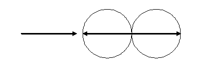
Правда, такое рассмотрение верно для представления силы упругости в макроскопических телах. Понимая под шарами огромную совокупность молекул, поля мы, тем не менее, не обнаружим, но, однако же, заметим, что по шарам по всем направлениям от точки столкновения проходит продольным волновым процессом (где слабее, где сильнее) не одна сила упругости между частицами. Направления этого продольного волнового процесса в шарах после столкновения выглядят примерно так.
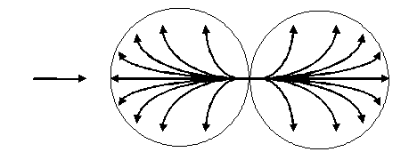
В направлении линий этого расходящегося по шару волнового процесса между каждой парой частиц происходит столкновение и возникновение на миг короткой силы упругости между ними. Это микроскопическое рассмотрение столкновения и возникновения при нем сил упругости в частицах по своему принципу точно такое же, как и макроскопическое рассмотрение происходящего в самих бильярдных шарах. Разница только в том, что как такового столкновения у частиц шара не происходит, в отличие от самих шаров: дело в том, что определенная дистанция между частицами всегда поддерживается электростатическими силами притяжения и отталкивания, действующими между ними. Впрочем, из-за последнего момента не происходит как такового соприкосновения и между частицами самих бильярдных шаров в точке их столкновения. А в этом смысле (любопытный парадокс!) столкновение бильярдных шаров проходит на самом деле без их соприкосновения.
Каждая отдельная дуга волнового процесса представляет собой примерно следующий ход между частицами.
По такому же принципу проходит волна и по прямой, центральной линии. Частица, получившая «удар» от предыдущей частицы, передаёт его следующей. Так, за несколько мгновений по бильярдным шарам прокатывается волна микроскопических (возникающих и исчезающих) сил упругости. А т. к. последним, поверхностным частицам уже некуда передавать этот передающийся удар, то они вызывают в целом ту реакцию, которая внешне выражается в движении шаров после удара. При макроскопическом, собственно говоря, простом, обобщенном взгляде это возникшее движение объясняется результатом действия между шарами двух одиночно возникших макроскопических сил упругости, а не разветвлением большого количества одиночных сил упругости.
Так же можно говорить о структуре сил в поле, перемещаемом в пространстве в виде электромагнитной волны. В этом случае, в каждом участке распространяющейся волны возникает множество одиночных и родственных физических сил, совокупность которых в этом участке представляет собой электромагнитное поле.
В мое время теории электромагнитной волны и корпускулярно-волнового дуализма сильно извращены. А никакая верная, исчерпывающая и уважающая себя теоретическая философия не может обойтись без правильного уяснения электромагнитных волновых колебаний. Вовсе не решённое дело то, что пишут в модных учебниках по физике. То, что здесь еще узнают об электромагнитной волне, будет неожиданным откровением даже для иных физиков. Правильное понимание электромагнитной волны есть современный камень преткновения и начало начал для всяких подлинных основ философии природы. Между прочим, выдуманная на пустом месте в физике, не весть откуда там взявшаяся, собственная философия природы физиков – теория относительности, – и понятия не имеет о верной электромагнитной теории, но на всякий лад оперирует своим ошибочным ее пониманием: в частности, приписывает этому полевому явлению признак массы, будто оно вещество, что пошло от простейшей, просто-таки школьной логической ошибки Эйнштейна, расписанной в каждом учебнике по логике. Подробности этого – в моей критике теории относительности (область 5).
Настоящим грехом в теоретической философии является то, что объяснение электромагнитной волны отбрасывается как ненужная мелочь и мусор, недостойные внимания. Таким бумагомарающим писакам следовало бы сказать, что это их теоретическая философия – мелочь и мусор, недостойные теории электромагнитной волны. Всякий философ, живущий после Герца, обязан хотя бы в двух словах обозначить свою позицию в понимании явления электромагнитной волны. В зависимости от одного этого можно было бы сразу решить, какой ценности философию мы держим в руках. В связи с этим, и в этом философском учении нет никакого права обойти полным молчанием явление электромагнитной волны. Но прежде нужно сохранять последовательность и вернуться к своему месту.
Отдельная сила – это точно такой же вид материи, как и поле. Ей точно так же, как и полю, присущ родовой признак – причинность. Отдельной силе точно так же, как и полю, свойствен их общий видовой признак – напряженность, т. е. такая энергия полевого явления, которая способна вызвать движение того или иного вещества. Так что отдельную силу с точки зрения безупречной логики просто даже и некуда относить, кроме как к понятию поля.
Ж. Есть ли еще какие-нибудь различия, кроме всех названных, между веществом и полем?
Между веществом и полем, помимо различий в их собственных признаках и в том, какие вещи они обозначают, существуют и другие различия.
1. Поле само по себе, в отличие от вещества, невозможно ни увидеть, ни ощутить никаким естественным образом. Оно, реально существуя в пространстве, непосредственно совершенно необнаруживаемо. И только опосредствованно его можно обнаружить – именно благодаря тому, что оно может воздействовать на то или иное вещество, вызывая в нем различные изменения, а вот вещество, несомненно, мы способны непосредственно замечать, в т. ч. вместе с его изменениями. В этом смысле неожиданное воздействие поля на вещество выглядит как чудо: вещество без видимых на то причин начинает двигаться, изменяться, образовывать какую-то пространственную форму.
Вот что, несколько мистически, говорит по этому поводу один учебник физики (1, с. 103, 106): «Мы не можем сказать, из чего поле состоит. Здесь мы доходим до границы того, что известно науке. Ничего более простого, чем поле мы не знаем… Поле не действует на органы чувств. Его мы не видим. Тем не менее, распределение поля в пространстве можно сделать видимым… Если продолговатые кристаллики изолятора (например, хинина) хорошо перемешать в вязкой жидкости (например, в касторовом масле) и поместить туда заряженные тела [имеются в виду тела, вокруг которых существует невидимое поле – Дм. С.], то вблизи этих тел кристаллики выстроятся в цепочки вдоль линий напряженности». На этом свойстве поля основан принцип всякого обнаружения и измерения напряженности поля с помощью различных вещественных приборов.
Этот пункт также говорит в пользу того, что поле есть такой же элементарный и далее неразлагаемый элемент материи, как и вещественная элементарная частица. Это будет особенно полезно уяснить, когда я начну строить правильную теорию электромагнитной волны, ибо начинается она у меня с наиболее простейших элементов, из которых она может состоять, – с электромагнитных полей (участков волны). Об этой элементарности вещественных частиц и полей говорят и другие источники: «Таким образом, физика является общей теорией природы, основанных на фундаментальных законах и представлениях об основных элементах (частицах и полях в современной физике)» (5, с. 14). Вообще же это очень полезно знать, ибо из-за того, что это знание игнорируют или почему-то отрицают, сейчас в современной физике творится многое ложное, противоречивое, непонятное, непредставляемое, невоспроизводимое, несогласовываемое. В моей же голове и всех моих теориях нет ничего, что творится сейчас в физике, а есть лишь только противоположное – понятное, непротиворечивое, представляемое, согласованное. И всё потому, что я не отрицаю простейших основ и начал, которые уже доказаны много веков.
Вообще, чтобы понять непосредственную необнаруживаемость нами поля, за примерами далеко ходить не надо. Сейчас вас, мои дорогие читатели, жестоко пронзает неимоверное множество полевых явлений (а именно, электромагнитных волн), используемых различными радиостанциями, телевизионными передающими антеннами; испускаемых вашими бытовыми приборами, компьютерами, проходящими рядом линиями высоковольтного напряжения; принимаемых вашими мобильниками. Однако же вы всего этого даже не ощущаете.
Существует только два любопытных случая, которые, по меньшей мере, похожи на исключения из этого свойства необнаруживаемости. В самом деле, есть два случая, при которых мы, можно говорить, непосредственно ощущаем поле в общем смысле этого слова.
Свет – это один из возможных видов электромагнитной волны. А электромагнитная волна – это один из видов поля вообще. Так вот, свет, а также его градацию в различных цветах, мы непосредственно ощущаем одним из органов чувств – глазами, благодаря чему это ощущение выражается в видении нами предметов. Собственно, в этом-то и состоит единственное предназначение глаз, предопределенное им природой, – т. е. состоит оно в том, чтобы мы видели некоторый ограниченный спектр электромагнитных волн среди тех, которые вообще возможны. (С точки зрения философского удивления, поразительно, что в этом мире такое положение, что мы вообще способны воспринимать некоторые электромагнитные волны и воспринимать их именно с помощью способности видения). Вследствие этого мы становимся слепы в полной темноте, а также не способны видеть ничего, что возможно за границами этого определенного спектра. Объясняя здесь естественное положение вещей, я пропускаю тот парадоксально-мистический случай, когда вследствие удаления глазной линзы при снятии катаракты можно видеть ультрафиолет в его неполном диапазоне.
Но, однако же, при этом высказанный тезис, что поле можно обнаружить лишь при воздействии его на вещество, нисколько не теряет своей силы. Свет как некая электромагнитная волна вызывает изменения в веществе, называемом сетчаткой глаза: электромагнитная волна светового спектра, дошедшая до сетчатки, вызывает раздражения воспринимающих рецепторов сетчатки – палочек и колбочек. Вследствие этого воздействия на вещество данное поле в качестве электромагнитной волны становится обнаруживаемым. Эта обнаруживаемость в конечном счете, при преобразовании мозгом тех данных, которые получены от палочек и колбочек, выражается в видении нами предметов.
Исключительность этого случая заключается не в том, что нам вообще здесь не нужен посредник – вещество – для обнаружения поля, а в том, что в этом посреднике мы не нуждаемся в окружающем мире, как это обстоит, например, с хинином и касторовым маслом, ибо имеем этого посредника в самих себе.
Еще один, в общем-то, исключительный случай из правила непосредственной необнаруживаемости поля выходит своим объяснением за рамки этого параграфа и должен быть дан ближе к концу этой области. Однако ввиду его особой сложности можно уже здесь подготовить почву к его пониманию, хотя бы просто обозначив его. – Мы непосредственно ощущаем свои переживания, эмоции, а они относятся к природному явлению поля вообще. При этом воздействие этого поля на вещество, а именно на наше тело или его отдельные органы, одновременно с переживаниями. Это обосновывается тезисом, который будет рассмотрен в дальнейшем, об одновременности физического существования данной силы и сопутствующих ей, необходимых материальных условий.
С одной стороны, здесь есть исключительность в том, что для обнаружения поля (своих эмоций), нам не требуются предварительные посреднические физиологические реакции. С другой стороны, обнаружение поля (переживание своих эмоций) не обходится без одновременных физиологических реакций, т. е. в некотором смысле вещество как некий одновременный посредник все-таки здесь выступает.
С некоторой точки зрения я мог бы сказать, что мы ощущаем свои переживания за счет тех специфических изменений, которые происходят в нашем теле. Для ощущения радости, например, можно было бы просто искусственно вызвать вещественные изменения в нашем теле, которые происходят при ощущении радости. Между прочим, именно так действует таблетка экстази и другие наркотики. Даже смех, я слышал, вызывает те же реакции в головном мозге, что и героин (или кокаин, не помню точно).
Считать этот случай совсем уж исключением нельзя. Оно было бы совершенным исключением, если бы вещество здесь вообще не присутствовало, а мы обнаруживали поле, присутствующее в пространстве без всякой связи с веществом, т. е. обнаруживали бы поле само по себе. Поэтому и нельзя приводить этот пример как возможное опровержение моего тезиса о непосредственной необнаруживаемости поля.
2. Еще один довод к различию вещества и поля состоит в том, что вещество и поле существуют независимо друг от друга. Это объясняется тем, что вещество и поле представляют из себя совершенно различные по своей природе вещи.
Кто-то, может быть, памятуя о причинно-следственных связях и изменениях этих материй, поспешит признать сказанное неверным, сочтя, что их существование зависит друг от друга в причинности. Проще говоря, известно, когда изменения вещества вызывают изменения в поле, и наоборот. Но в обосновании трояким вопросом (§§ 006) обстоятельно показана невозможность безусловно поставить в зависимость два явления на основе их причинно-следственной связи. И там же будет указано, что возможны цепи причинности только из вещественных или только из полевых изменений; причем указанную там обусловленность сугубо вещественной цепи полевыми явлениями следует понимать как стороннюю подоплёку этой цепи, а не как неразрывное существование вещества и поля. Оттуда следует, что вещество и поле не находятся в какой-то сцепленной зависимости.
Однако этим дело не ограничивается. Помимо существования в причинности можно рассматривать существование как таковое, вне причинности. В этом смысле существование в причинности, т. е. с обязательным учитыванием вызвавшей это существование причины, и существование как таковое, т. е. рассмотрение явления изолированно, без изучения того, что его вызвало, – это две разные точки зрения, два разных способа для уяснения себе данного явления. Эти разные рассмотрения представляют собой разные виды объяснений, которые были описаны в параграфе «О наиболее важном объяснении». При этом в первом случае принципиально важна причина явления, а во втором – только его собственное существование. Отношение к причине (первый случай) разобрано в предыдущем абзаце.
А во втором случае здесь можно указать на то, что поле может существовать как в веществе, пронизывая любую его среду, так и вне его, даже в вакууме. (Под вакуумом здесь понимается определенный объем пространства без вещества в нем, и только без вещества. В другом значении «вакуум» может обозначать пространство без материи, т. е. и без вещества, и без поля, а значит и без природы. Такой вакуум теоретически вполне возможен, но, насколько нам известно, не встречается в безграничном пространстве). Примером пронизывания полем вещества может послужить гравитационное поле Земли, которое пронизывает вещественный Земной шар насквозь. А силы упругости, к примеру, возникают в бильярдных шарах при их столкновении, нисколько «не обращая внимания» на их плотное вещество. Существование волн и полей в космосе указывает на собственное существование поля в вакууме.
Вещество как вид материи, в свою очередь, чтобы существовать, нисколько не нуждается в каком-то поле. Это объясняется законом сохранения массы, т. е. вечностью и неуничтожимостью вещества ни при каких условиях. Можно разрушить отдельные вещественные тела, но невозможно уничтожить то, из чего эти тела состоят – само вещество, конкретней, вечные элементарные частицы; я имею в виду такие частицы, которые не поддаются дальнейшему расщеплению и разрушению ввиду своей максимально возможной простоты. Сказанное о независимости вещества от поля касается самого вещества как вида материи или элементарных частиц, а не отдельных вещественных тел. Дело в том, что телом является пространственная валентная, устойчивая связь хотя бы двух элементарных частиц. Для возможности существования устойчивого тела необходимо некоторое поле. В этом смысле конкретные вещественные тела невечны и они зависят от поля. Вещество же в целом вечно и не нуждается в поле, это же относится и к элементарным частицам. Пусть мой дорогой читатель не забывает, что я говорю не только о каком-то абстрактном веществе и отвлеченном теле, но имею в виду и его собственное вещественное тело. Так что речь идет совсем не о каких-то далеких, запредельных вещах.
Согласно сказанному и еще раз напомненному о веществе и поле, перепутать их просто невозможно. Однако вскоре после открытия электромагнитной волны на свет явился некий умник, который умудрился их всё же перепутать, и смертному народу его неразрешимое противоречие нравится уже больше сотни лет. Впрочем, как говорит Шопенгауэр, людям легко внушить любую идею.
3. Добавлением, а иной недюжинного ума поймет, что альтернативой, к вышеобозначенным «личным» признакам вещества и поля могут стать признаки, обозначенные в нижеследующем тезисе, высказываемом впервые в истории человечества.
Вот этот тезис: Всякое движение может быть присуще только веществу, а всякое явление поля абсолютно неподвижно. Перемещение, распространение в качестве того или иного движения, изменения направления и траектории – всё это, что может быть отнесено к движению, присуще лишь веществу.
(Тезис, рассматриваемый в текущем нижеследующем тексте:
Вещество при движении – одно и то же)
При перемещении из одного места в другое, данное вещество является тем же самым веществом, я хочу сказать, в каждой новой точке своего перемещения вещество не возникает заново и из ничего, а приходит туда из предыдущей точки своей траектории. Переход из некой точки «1» своего движения в точку «2» нельзя рассматривать как абсолютное уничтожение, исчезновение в никуда и ничто данного вещества в первой точке и чудесным появлением из ничего и ниоткуда нового вещества, но просто-напросто идентичного исчезнувшему старому в точке «два». Суть каждого движения и понятия «движение» как раз и заключается в том, что из подобной точки «один» в точку «два» переходит одно и то же вещество. Рассмотрение движения как абсолютного исчезновения в ничто вещества в данном месте и абсолютного возникновения из ничего вещества, причем нового, но идентичного старому, в следующем месте своего движения означало бы соответственно абсолютное исчезновение материи и возникновение материи из абсолютного ничто, а это противоречит уже давно обнаруженным и уже не раз и по-разному доказанным физическим и метафизическим законам. Поэтому движение данного тела или элементарной частицы совершается всегда именно одним и тем же данным телом или элементарной частицей. Выступать с несогласием к этой истине – значит, приводить себя к абсурдам и противоречию с названными, вечными законами этого мира.
Например, можно было бы оказаться даже в смешном абсурде, рассматривая результат перемещения какого-либо не очень маленького тела на половину его длины (или ширины – слова, однозначный выбор одного из которых не имеет здесь существенного значения). Обозначим при этом мысленно одну половинку тела как А, а другую – как В. А и В вместе занимают определенный объем пространства. Переместив тело в направлении от А к В на половину длины, истиноотступникам пришлось бы утверждать, что в новом объёме пространства, которое теперь полностью занято половиной тела В, эта половина возникла здесь чудесным образом из ничего, а половина А исчезла в никуда в бывшем своем месте, но самое интересное, что бывшая половина В превратилась наичудеснейшим образом в новую половину А. Графическим пояснением к этому примеру служит нижеследующий рисунок, показывающий расположение тела на плоскости до его перемещения и после него.
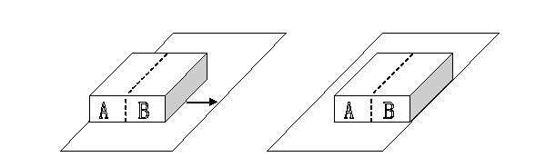
Чем же пришлось бы считать это тело в целом – чем-то совершенно нововозникшим или частично новым и новым в каком именно месте – всё это остаётся совершенно непонятным, а решение этих вопросов сделало бы их защитников еще более смешными и абсурдными. А если мы начнём разбирать такое же перемещение на половину любого живого тела, скажем, нашего с вами?
Здесь получает подтверждение то общее положение, согласно которому заблуждение может привести, в конце концов, только к самым разным абсурдным выводам и следствиям с несочетаниями с реальными фактами, а истина – как раз наоборот, к самым верным выводам и правильным их сочетанием с разными известными данными действительности. Об этом положении где-то высказался Шопенгауэр. Говорю об этом, чтобы не приписать себе молчаливо авторство на это положение. Впрочем, как и всегда стараюсь это делать.
В действительности же, говоря о нашем предмете, всё обстоит просто и понятно: перемещается всегда одно и тоже тело или данная элементарная частица, – и никаких абсурдов и противоречий.
Впрочем, я никогда не встречал мнения, которое только что опровергал. Я не слышал его ни у диалектиков, ни у релятивистов, ни у богословов, ни у филистеров, ни просто у смертных. В самом деле, ведь только что доказывалось самоочевидное. Не зря ли? – Не зря. Ведь когда будет понята и принята неподвижность в отношении полевых явлений (когда – вот в чем вопрос), могут появиться умники с поржавевшими мозгами, которые начнут прославлять себя «открытием» неподвижности вещества. Частично данное опровержение нужно для уяснения неподвижности полевых явлений, т. к. контраст именно в том и состоит, что при движении вещества движется одно и то же вещество, а при том или ином возможном перемещении поля в каждом новом месте распространение получает не одно и то же поле (но оно одно и то же обычно просто по свойствам, как у близнецов).
(О напряженности и направлении полевого явления)
Суть всякого полевого явления заключается исключительно в том, что в пространстве возникает некоторая напряженность, собственно говоря, само пространство становится напряженным. Эта напряженность пространства имеет определенное количество энергии и обладает определенным направлением. Эти показатели зависят от некоторых параметров и расположения в пространстве вещественной материи, тем не менее, это не говорит о неразрывной сцепленности вещества и поля, что сейчас будет поясняться.
Условно и графически мы обозначаем эту напряженность силовыми линиями, как их называют, правильней было бы сказать – силовыми стрелками. Эти стрелки мы вовсе не выдумали из ничего, они просто облегчают нам наше представление полевых явлений. Правда, полевые явления бывают как плоскостными, так и сферическими, что несколько затрудняет их графическое изображение – например, в виде сферы, усеянной множеством силовых линий. Подтвердить же реальность этих линий можно с помощью эксперимента по вещественному обнаружению какого-либо поля, а то, что они действуют именно в заданном направлении, также можно подтвердить этим же экспериментом по влиянию поля на перемещения и расположения определенного вещества. К этому был уже дан пример выше, из учебника физики.
Можно дать и следующий пример. Реально существуют силы притяжения Земли, которые мы графически представляем как линии, направленные из космоса еще за пределами атмосферы к центру Земли, что доказывается любым падением либо притяжением какого-либо тела. В этом смысле почва, земная кора, мантия и ядро, не считая только его центра, являются веществом, которое под действием этих сил притяжения, как бы упали к центру Земли, т. е. к тому самому неучтенному центру ядра, и теперь постоянно тянутся к нему, составляя в результате нераспадающийся земной шар. Разумеется, это сказано для уяснения действия сил притяжения, а не для уяснения эволюции планеты Земля: ведь кому-то хватит ума придираться к этой гиперболе.
При этом в каждой определенной точке пространства, допустим, именно на протяжении отдельно взятой силы притяжения от начала атмосферы и до центра Земли, действует определенная энергия, а именно, напряженность, и чем ближе к центру, тем больше она нарастает.
Именно этим объясняется, почему на полюсах сила притяжения больше, чем на экваторе. Ведь Земля представляет собой приплюснутый шар в направлении север-юг. Поэтому силы притяжения, имеющие везде одинаковое нарастание напряженности по направлению к центру Земли, на экваторе уже входят далеко в Землю, тогда как на полюсах такая же напряженность еще находится надо льдами. Эту особенность космические компании используют для более легкого преодоления притяжения Земли тяжелыми космическими кораблями, которые специально запускаются с экватора.
Итак, раскрыто, что реально существуют силовые линии напряженного пространства в каком-либо заданном направлении и в каждой точке эти линии имеют особую напряженность. Теперь нужно понять, что напряженность в конкретном месте силы и ее общее направление зависят от характеристик и влияния вещества.
Выбрав некое абсолютное место пространства для рассмотрения, конкретная напряженность силы и ее направление будут зависеть именно от конкретного вещества, как-то затрагивающего это место. Допустим, мы выбрали небольшое место, над которым, не задевая его, пронеслась наша планета. Сила, при таком взгляде, будет направлена вверх и слабо напряжена. А если выбрать место, под которым чуть-чуть ниже пронёсся центр планеты, то сила будет направлена уже вниз и сильно выражена. Точно так же если рассматривать только заданное абсолютное место, то через него и около него могут с течением времени проноситься множество космических тел, а это ведёт к тому, что силы здесь будут появляться в различном направлении и с различной напряженностью.
Причем эта направленность и напряженность всегда имеют свое объяснение и основание, связанные с веществом: его массой, скоростью (которая имеет значение при движении микроскопических заряженных частиц), траекторией движения, расстоянием до выбранного места пространства, одним словом, с его характеристиками, или параметрами.
(О сцепленности поля с данным местом пространства)
Все вышеобозначенные примеры говорят, однако, не о том, что в выбранные места пространства силы приходят вместе со своими планетами или, в общем говоря, со своими космическими телами, будто они друг с другом вечно сцеплены. Всё это, напротив, указывает, что силы в выбранных местах пространства возникают сами по себе, не приходя сюда со своими планетами. Иначе говоря, с большей вероятностью истинности сцеплены с данными местами пространства, нежели с планетами и вообще космическими телами.
Однако можно заметить, что данная планета, комета, астероид имеют вокруг себя более или менее постоянное поле и всегда имеют его при себе. То же самое можно сказать и об электроне, который всегда имеет при себе постоянные по своим параметрам электростатические силы в состоянии покоя, а при движении «тащит» вокруг себя постоянное по характеристикам магнитное поле. Поэтому считать, что силы могут быть сцеплены с каким-либо данным местом независимо от вещества, – кажется по меньшей мере неистинным. Но именно – кажется.
А из этой кажимости у многих возникло убеждение о сцепленности данного вещества с данным полем. А т. к. данное вещество движется, имея вокруг себя одно и то же поле, значит, и поле движется – такой делается вывод. Но только в том и заключается вся загвоздка, что при движении вещество не тащит с собой одно и то же поле. Это вовсе не одно и то же поле окружает данное вещество – это всегда, в каждой новой точке передвижения данного вещества, всё новое и новое поле. Каждый раз это поле всё заново порождается веществом при перемещении этого вещества. Поле же остается неподвижным, и всё, с чем оно реально связано, – так это только с данным местом пространства. Одинаковость поля в каждом новом месте объясняется тем, что его порождает каждый раз одно и то же вещество с одними и теми же своими характеристиками.
(Однако для более полного понимания тезиса о сцепленности
нужно уяснять его в контексте
с тезисом об одновременности возникновения в данном месте поля и вещества)
Намечается в третьем вопросе указать на любопытное свойство некоторых необходимых материальных условий, в которых происходит то или иное явление. Будет показано, что связь между определенной вещественной обстановкой и полевым явлением, которое существует только при окружающих условиях именно такой вещественной обстановки, не является причинно-следственной связью. В таком случае вещественные обстоятельства не служат причиной в собственном смысле этого слова полевому явлению. В связи с этим они и не предшествуют ему.
Их связь такова, что и данные вещественные обстоятельства не существуют без полевого явления, которое обычно им сопутствует. Поэтому выявляется их неразрывная и одновременная связь. Ни то, ни другое не служит причиной другому, не предшествует ему: при появлении одного в этот же момент появляется другое, нисколько не запаздывая и не опережая первое.
Примером этому могут служить космические тела (вещественная обстановка) с их полями притяжения (полевое сопутствующее явление), переменный электрический ток с его внезапным спутником – магнитным вихревым полем, даже каждый одинокий движущийся заряд со своим магнитным полем.
Везде в этих примерах нельзя указать на причину и действие. Везде имеется неразрывная одновременная связь. Это доказано физикой: нет одного без другого. Одно без другого бессмысленно и невозможно: точно как у понятий в логике, которые называются соотносительными. Собственно говоря, понятия о данных здесь неразрывных одновременных вещах уже и представляют собой соотносительные понятия.
Казалось бы, только что сказанное говорит как раз о неразрывности вещества и его поля и опровергает то, что утверждалось выше о всё новом и новом порождении поля при перемещении вещества, которому сопутствует это поле. Однако это не так. Было сказано только об одновременности возникновения в заданном месте поля и вещества, а не о неразрывном их существовании вообще. Ведь важно не забывать о том, что вещество и поле представляют из себя различнейшие вещи, их существование не зависит друг от друга ни в причинности, ни в отдельном существовании как таковом; они обладают своими собственными, никак не взаимосвязанными, специфическими признаками.
В связи с вышесказанным я могу рассматривать, например, поле притяжения Земли как одну вещь, а саму планету Земля как другую, совершенно отличную от первой. На этом основании я смею утверждать, что не только везде, где появляется Земля, она порождает данное поле притяжения, но и везде, где появляется данное поле притяжения, оно порождает Землю. Выражение столь же перевёрнуто, подобно известной формуле Канта, сколь и истинно, как и у него. (Я имею в виду ту формулу, согласно которой рассудок не черпает законы из природы, а предписывает их ей. Верность ее будет подвержена моему исследованию на моем собственном пути (область 3, глава о не-объектах).). Правда, уже и выше допущенное слово «порождает» в таких случаях не совсем уместно, т. к. оно указывает на причинно-следственную связь. Но в данном случае оно призвано своей силой как раз разрушить неверное представление о Земле как причине и о поле притяжения как о ее действии. Уместней в таких случаях говорить, что одно свидетельствует о другом.
То же самое можно сказать о множестве других явлений, где данное полевое явление не возникает без данного вещественного, а данное вещественное – без данного полевого. Например, везде, где можно наблюдать магнитное поле, оно, если хотите, тащит движущийся заряд, а не заряд его. Везде, где возникает поле притяжения, оно вызывает возникновение здесь космического тела, о котором и свидетельствует своим собственным появлением.
Более того, Земля ведь есть некое тело. Рассматривая его в отношении поля притяжения как причину, допускается ошибка, изложенная в предыдущем параграфе о правилах причинности. Было показано, что недопустимо такое объяснение и понимание явления, когда тело становится причиной другому телу или какому-то изменению. Такое объяснение и понимание было бы ошибочным, исходя из правил причинности, пронизывающей природу. Тот же, кто считает собственно Землю причиной поля как раз и впадает в эту ошибку. Между прочим, Шопенгауэр, первый указавший на это правило объяснения в причинности, правда несколько узко и не так, как это сделал я, вообще отказывается помещать в цепь причинного объяснения какое бы то ни было тело, чтобы сразу пресечь возможные ошибки. Мое учение, в этом смысле, более снисходительно.
(Теперь можно более полно понять тезис о сцепленности)
Таким образом, если взять для рассмотрения какую-то сферу космоса и проследить, что будет с этой сферой при прохождении через нее планеты, то мы увидим (если бы мы вообще могли это видеть), что при приближении планеты к этой сфере последняя приходит в незначительное возбужденное состояние в месте наименьшего расстояния до планеты. Возникающие линии напряженности направлены в сторону планеты.
Наблюдая как эта планета входит в эту сферу и занимает ее, можно заметить, что линии начинают изменять свое направление, одни из них как бы раздвигаются, расширяются, другие как бы сходятся и сужаются, все они изменяют свою напряженность. Они способны любое неогромное тело, случайно попавшее в их сферу, «свалить» на эту планету.
Затем планета удаляется из этой сферы. Первые возникшие линии исчезают, т. е. приходят в состояние напряженности равной нулю, изменив еще до этого своё направление на противоположное, как бы провожая угасающим взглядом планету на прощание, точно так же как они внимательно смотрели на нее, любовно встречая и приходя во всё более восторженное состояние.

Но после этой лавины напряжения данного пространства, вызванной приходом планеты, проводив ее уход, всё полностью стихает как ни в чем ни бывало.
Все изменения, происходящие с полем в этом месте, объясняются их одновременным сопутствованием движению какого-либо тела (вещества) около заданного места. И, несмотря на все эти изменения, поле только лишь по-разному реагирует на движение вещества, но никуда убираться не собирается, в связи с чем оно готово даже с наивысшим напряжением пронзить любое тело вплоть до его математически бесконечно малого центра и любое вещество подчинить своим линиям напряженности, но вовсе не уйти отсюда. Именно так и только так нужно понимать всякое возникновение, изменение, исчезновение и вообще существование любого полевого явления, которое всегда связано с данным местом.
Понимание этого облегчается, когда вспоминаешь, что, по сути, поле – просто напряженное пустое пространство и ничего сверх того. А пространство не может быть увлечено никакой материей или, точнее здесь будет сказано, никаким веществом. Об этом говорилось в критике теории относительности (область 5). Правда, там говорилось о пространстве вообще, без учёта материи, которому не свойственны абсолютно никакие изменения, а здесь уже говорится о некоем изменяющемся пространстве без вещества, но зато являющимся полем, т. е. речь уже идет о таком пространстве, которому свойственны некоторые изменения, обусловленные его материальным характером. Хотя надо понимать, что подобные выражения («некое изменяющееся пространство» или «материальное пространство») призваны только облегчить понимание сказанного и свидетельствуют лишь об одном из видов материи, точнее, о поле, которое всегда сцеплено со своим местом в пространстве и которому, в отличие от самого этого пространства, присущи некоторые изменения, подчиняющиеся причинности. Пространство же само по себе причинности не подчиняется, его как таковое не затрагивают изменения. Пространство абсолютно неизменно, и поэтому подобные высказанные выражения логически несостоятельны и недопустимы. Однако простое словесное смешение изменений и неизменности в таких выражениях помогает понять происходящие изменения поля при абсолютном покое его пространства.
(Об изменениях поля)
Все изменения этого напряженного пространства укладываются в местные, даже неподвижные изменения в напряженности при заданной направленности. А данное полевое пространство остается на своем месте, никуда не девается, ему нет никакого дела до того, откуда взялось вещество и куда делось, оно только соответствующим образом отреагировало на него. Впрочем, можно было бы сказать и наоборот – вещество появилось здесь, чтобы своим перемещением отреагировать на изменения в напряженности этого пространства. Ведь одно с другим связано одновременно. Все любые другие изменения, в т. ч. движение и искривление, не могут быть приписаны к пространству ни через посредство его напряженности в качестве поля, ни тем более непосредственно к пространству самому по себе. Разве что только такое разрешается для заржавевших мозгов, которым легко внушить любую идею.
Изменения, которые были причислены к изменениям неподвижного поля (имеются в виду только изменения в напряженности), никоим образом невозможно связать с движением. Увеличение или уменьшение напряженности вообще не связано ни с каким движением той силовой линии (или же их полевой совокупности), которая является носителем этой напряженности.
Напряженность, (если взять вышенарисованный пример), допустим, центрально-осевой силовой линии в сфере меняется (увеличивается) при приближении планеты, и при этом не изменяется направление силовой линии, т. е., я хочу сказать, она никак не двигается.
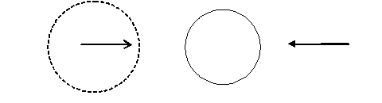
Напомню при этом ту подробность, что напряженность этой силовой линии не представляет собой одно и то же число на всем протяжении этой линии: напряженность больше там, где до центра планеты наименьшее расстояние, и меньше всего там, где до центра планеты наибольшее расстояние.
А изменение в направлении силовых линий, например, когда планета входит в рассматриваемую пространственную сферу, строго говоря, даже и не может называться изменением. Дело в том, что каждое изменение как таковое имеет предшествующую причину в другом изменении. В связи с примером с планетой, изменение в направлении силовых линий поля притяжения можно было бы объяснить только изменением в положении планеты по отношению к данному месту, вследствие движения планеты. Однако изменения в направлении силовых линий и изменения местоположения планеты одновременны, и поэтому фактически не могут служить объяснением друг для друга.
Логически получается, что либо здесь нет изменения как такового, выраженного в изменениях направлений силовых линий, либо эти изменения не имеют причины. Но согласно непререкаемому и вездесущному в природе закону причинности последний выбор невозможен. Неужели остается признать, что замечаемое изменение фактически не является изменением? Но это, оказывается, действительно так, ибо изменение здесь обнаруживается только в качестве иллюзии последовательного восприятия. Т. е. ответить здесь можно, что изменение не является изменением, потому что оба слова «изменение» несут в заданном вопросе разный смысл: именно – «замечаемое изменение» есть лишь видимое изменение, которое не является изменением одной и той же силовой линии.
С полным правом можно решиться на единственное правильное объяснение: при движении планеты через данную сферу в каждый отдельный момент времени мы замечаем, что направление какой-либо рассматриваемой силовой линии меняется, что объясняется тем, что в каждый следующий отдельный момент возникает новая силовая линия, данное направление которой возможно именно при данном новом положении планеты, причем возникновение это одновременно с приходом в данную точку планеты. Думая, что мы рассматриваем одну и ту же силовую линию, на самом деле, мы в каждый следующий момент времени видим новую силовую линию.
Это напоминает видимую нами изменчивую картинку телефильма, которая основана на смене кадров. На каждом кадре запечатлен какой-то один момент общего события. Быстрая и последовательная смена кадров приводит к тому, что мы видим в итоге на экране причинно-следственную, порой плавно изменяющуюся, общую картинку. К этой общей изменчивой картинке каждый отдельный кадр, строго говоря, не имеет никакого отношения: это не отдельно взятый кадр создает текущую картинку, все изменения заключаются не в данном кадре – он неизменен. Текущая картинка создается только последовательной сменой отдельных неизменных самих по себе кадров, что создает впечатление причинно-следственно разворачивающейся картины. Еще более простым примером к этому может послужить мультипликация: когда на отдельных листах рисуют движение героя одно за другим, а быстрая последовательная смена этих рисунков «оживляет» героя. Это значит, что последовательность создает иллюзию причинности. Но «после этого – не значит вследствие этого», как гласит известное древнее предупреждение к логическим ошибкам.
В примере с планетой каждый отдельный кадр, каждый отдельный лист с рисунком можно сравнить с отдельной силовой линией, определенно куда-то направленной. Смена кадров сравнима со сменой силовых линий, направленных по своим разным направлениям. А впечатление причинно-следственной общей картинки телефильма или мультфильма аналогично кажущемуся впечатлению причинно-следственного изменения направления какой-либо рассматриваемой силы, хотя, на самом деле, это не одна рассматриваемая сила, а их разнонаправленное последовательное собрание.
Таким образом, можно сделать вывод, что единственный вид изменения, присущий любой силе – это изменение только одной ее напряженности при одном и том же направлении.
Резюме § 005.1.
1. «Природа» и «материя» приняты в моем сочинении как одно и то же.
2. Следовательно, главным признаком материи является причинность, а причинность в свою очередь характерна только для материи. Всё, что подчиняется причинности, является материальным.
3. Существует два вида материи: вещество и поле. Общим их, родовым, признаком является причинность. Видовой признак вещества – масса. Всё, что обладает массой, есть вещество. Собственный признак поля – напряжённость. Всё, что обладает напряженностью, является полем.
4. Понятие поля обозначает просто напряжённое пространство. В число обозначаемых полем вещей входят отдельно возникающие силы (например, силы упругости, не представляющие из себя никакого как такового объемного поля), а также электромагнитные волны.
5. Слово «поле» будет употребляться именно в представленном широком значении, если только сам контекст не указывает на определенно мыслимое поле. Представленное общее значение слова «поле» будет также обозначаться в дальнейшем словосочетаниями «полевое явление» и «появление силы».
6. Единственная разница между полем, в собственном (узком) смысле этого слова, и отдельной силой состоит в том, что поле представляет собой совокупность отдельных однородных сил. А так, им обоим присущ родовой признак материальности – причинность, – и их собственный видовой признак – напряженность.
7. Между веществом и полем, помимо различий в их собственных признаках и в том, какие вещи они обозначают, существуют и другие различия:
1) Вещество мы видим и ощущаем непосредственно, а поле для нас непосредственно необнаруживаемо. При этом полезно понять, что поле и элементарная вещественная частица – это основные и неразлагаемые простейшие элементы материи.
2) Вещество и поле существуют независимо друг от друга.
3) Всякое движение может быть присуще только веществу, а всякое явление поля абсолютно неподвижно.
3.1) При движении вещественные тела и частицы представляют из себя одни и те же тела и частицы, тогда как, допустим, поле притяжения космического тела в каждой новой точке пути движения тела возникает заново. Это говорит о сцепленности поля со своим местом в пространстве, а не со своим веществом.
3.2) Характеристиками поля, т. е. напряженного пространства, служит то, что эта напряженность пространства имеет определенное количество энергии и обладает определенным направлением. Эти показатели зависят от влияния того или иного вещества.
3.3) Возникновение поля в данном месте пространства объясняется не приходом сюда вещества, которое якобы является носителем поля, а одновременным возникновением в данном месте и поля, и вещества.
3.4) Единственный вид изменения, присущий любой силе (в т. ч. в составе поля) – это изменение только одной ее напряженности при одном и том же направлении. Т. е. никакого движения у сил нет.
8. Применяемые понятия:
Поле представляет собой совокупность отдельных однородных сил. (Здесь имеется в виду поле не как вид материи, а как разновидность поля как вида материи).
Поле – это напряженное пустое пространство. (Здесь имеется в виду поле как вид материи).
§ 005.2. Электромагнитная волна.
А. Почему стоит отдельно рассмотреть электромагнитную волну?
Разобранные объяснения и примеры подходят для уяснения неподвижности всех полевых явлений, кроме одного. Это – все виды электромагнитных волн. Они требуют особого рассмотрения, т. к. чем дальше человечество отдаляется от ее открытия во времени, тем больше оно склонно извращать учение об электромагнитной волне и всячески безосновательно на этом спекулировать.
Б. Какие слова менее всего подходят для правильного уяснения природы электромагнитной волны?
К электромагнитной волне вообще смеют применять различные синонимы движения, а также само слово «движение». Однако эти слова могут быть призваны лишь пояснять данное трудновоспринимаемое явление, но никак не объяснять его. В качестве слов, которые должны указывать на сущность природы этого явления, слова, связанные с движением, не подходят. Менее всего подходит само слово «движение», ибо как такового движения там нет вообще. И это будет здесь показано. Любопытный парадокс! Электромагнитная волна, это стремительнейшее распространение в пространстве со скоростью около 300 000 км/с не обладает ни в какой своей части, ни в целом никаким движением. Это поражает даже меня самого. Самое скоростное в материи – это то, что даже не движется! (Есть некоторые данные в науке, согласно которым скорость света была превышена. Но это опять-таки было бы возможно только за счет распространения полевой волны, а не за счет разгона вещественной частицы).
Движение, будем помнить, как таковое может быть присуще лишь явлению, которое само по себе, т. е. оставаясь тем же самым явлением, перемещается в пространстве, просто меняя свое местоположение.
Более всего из поясняющих слов подходит, но, тем не менее, так же условно, слово «распространение».
Многие привыкли думать, что электромагнитная волна представляет собой какое-то движение данного полевого явления в пространстве, а на правильной основе корпускулярно-волнового дуализма создают неверное убеждение о каких-то вполне определенных и постоянных частицах электромагнитной волны, которые летят в пространстве, оставаясь самими собой, подобно движению в пространстве вещественных элементарных частиц. Иные могут также думать, что электромагнитное поле, превращаясь в какую-то волнообразную форму или линию, начинает летать в таком виде по пространству. Другие же могут совсем не видеть сходства между электромагнитной волной и электромагнитным полем; этот пункт относится к действительному сходству между всеми полевыми явлениями, о чем сказано в предыдущем параграфе.
В. Какие проблемы у современного представления электромагнитной волны?
Самое главное из того, что может иметь значение в моей философии – это то, что исходя из современного представления об электромагнитной волне, совершенно невозможно однозначно решить вопрос о том, имеется ли движение в электромагнитной волне или нет. Вот эта неопределенность привела в одной своей крайности к тому, что свет (один из видов электромагнитной волны) стали представлять как состоящий из отдельных, вполне самостоятельных частиц, которые движутся, летят в пространстве, оставаясь самими собой, благодаря чему свет распространяется в пространстве. Признаки частиц света в таком представлении ничем не отличаются от признаков частиц вещественной материи, хотя мы имеем здесь два отличнейших друг от друга вида материи со своими собственными признаками. Та же самая неопределенность не дает физикам никак понять собственную природу нейтрино, исходя из чего, наконец-таки, можно было бы объяснить весь характер его существования. Но самая грандиозная крайность, возникшая на основе данной неопределенности – это теория относительности. В ней, без всякого зазрения совести смешаны признаки вещества, поля как вида материи, и плюс к этому – собственные признаки пространства, а также времени. Этот бессмысленнейший винегрет, однако, считается среди смертных вершиной физики, если не науки вообще. Но не будем негодовать: то, что ценят они, дает точную оценку им. Как-никак, не они продвигают науку.
Как ни странно, но до сих пор не существует отдельного изображения или схемы электромагнитного поля, которая была бы трехмерной, ибо, в соответствии с понятием об электромагнитном поле, оно занимает трехмерный объем пространства. А не трёхмерные схемы электромагнитных полей можно встретить, но только в схемах электромагнитной волны. Однако там мы встретим не столько схемы электромагнитных полей, сколько схемы электрических и магнитных полей поодиночке: решить в такой общей схеме, где собственно электромагнитные поля, невозможно.
При этом до сих пор не существует целостного трехмерного изображения электромагнитной волны. Схемы, которые предлагают для ее представления, либо плоскостные, либо двухмерные.
А отсутствие всех этих изображений означает то, что не существует на данный момент какого-либо однозначного научного представления электромагнитного поля и волны в пространстве. Нет никого, кто был бы вправе сказать: «Так, как я это себе представляю, – так оно и есть».
Не существует определенных понятий постоянности и переменности полей. Именно из-за этого мне даже удалось встретить противоречие источников по поводу того, что магнитное поле считают переменным и постоянным одновременно в одном и том же мыслимом отношении.
Существует также внутреннее противоречие в современной теории электромагнитной волны. Оно состоит в том, что распространение электромагнитной волны считают возможным благодаря последовательному порождению друг за другом в направлении излучения электрического поля, за ним магнитного поля, далее еще электрического, потом нового магнитного и т. д. Однако же до этого признается невозможность существования магнитного поля самого по себе; т. е. оно не могло бы отдельно и последовательно за чем-то возникнуть. Если верить используемому мной источнику (3), то это противоречие принадлежит самому Максвеллу. И вступил он в противоречие, получается, с любимым им Фарадеем.
Г. Как разрешить это противоречие?
Еще в первой половине ХІХ века Фарадей своими опытами открыл и доказал одновременное возникновение магнитного и электрического полей. Так зародилась теория электромагнитного поля, в котором любое изменение электрического поля означает одновременное и соответствующее этому изменение в магнитном поле. По-моему, этого достаточно, чтобы разрешить указанное противоречие.
В направлении распространения электромагнитной волны возникают не друг за другом в последовательном порождении электрическое поле, магнитное и т. д., а одновременно (как бы парой электрическое плюс магнитное) возникает электромагнитное поле, за ним следующее «парное» электромагнитное и т. д. А отсюда мы можем понять, что электромагнитная волна состоит из отдельных участков – электромагнитных полей; их выстраивание друг за другом создает эффект распространения их энергий в пространстве. А это распространение и есть распространение электромагнитной волны в пространстве. Вообще, что значит выражение «электромагнитная волна»? – Это волна электромагнитной энергии. Но чему принадлежит эта электромагнитная энергия? – Электромагнитным полям.
Выстраивание же друг за дружкой отдельных электромагнитных полей означает, что им самим вовсе не присуще какое-либо движение: они просто занимают «отведенное» им место в пространстве. И, согласно тому, что было рассмотрено в § 005.1, ни одна силовая линия в самих этих полях не движется.
Таким образом, единственные изменения, затрагивающие эти электромагнитные поля – это прокатывающаяся по ним энергия. В этом смысле электромагнитная волна есть энергия напряженности, прокатывающаяся по «мосту», сложенному из отдельных электромагнитных полей. Это гармонично согласуется с тем, что было высказано в предыдущем параграфе о том, какие изменения затрагивают поле как вид материи: только изменения в напряженности.
Поразительно, но я долго не замечал, что дальнейшие подробности этого рассуждения об электромагнитной волне, именно над которыми я «пыхтел» примерно год, не имеют значения в разработке моей собственной последующей теоретической философии. Правда, не замечал я сказанного потому, что именно примерно через год работы над «электромагнитной волной», я перестроил форму и конкретное содержание этого подпараграфа, тогда как раньше я бы и не мог заметить, что выводы столь близки.
В связи с тем, что мы увидели много проблем у современного представления электромагнитной волны, я не буду давать здесь исправления отдельных пунктов в этой теории, а представлю эту теорию целиком так, как она должна в целости выглядеть. Исправления отдельных пунктов всё равно не дали бы полного, целостного понимания этой теории и оставили бы множество недопониманий. Представляя эту теорию в целом в последующем тексте относительно некоторых, ключевых высказываний я буду в скобках ставить ссылки на литературные обучающие источники по физике, чтобы было ясно, что такие высказывания касаются не лично моего взгляда и понимания, а признанного в физике понимания. Все остальные ключевые высказывания даются без ссылок как мои собственные рассуждения. Точно так же рисунки: если они принадлежат мне, то даются без обозначений; если – учебникам, то есть на них ссылка.
Д. В чем разница между вещественной волной и электромагнитной?
Волна для механического, вещественного явления определяется как перенос энергии в пространстве без переноса вещества (2, с. 236). То же самое определение можно использовать для определения электромагнитной волны. Более того, не можно, а нужно, ибо это вполне логично, коль скоро в физике присутствует хоть какая-то логика. Т. е. это будет некий перенос вещества без того материала, по которому данная волна переносится.
Электромагнитная волна, являясь полевым явлением, которому в своем существовании нет никакого дела до существования вещества и которое в сущности не зависит от вещества, представляет собой перенос энергии без какого бы то ни было существенного участия вещества, собственно, без вещества (4, с. 178).
В случае вещественной волны переносится кинетическая, вещественная энергия. Она переносится благодаря веществу, по нему, т. е. на его основе (2, с. 326, 341). В случае электромагнитной волны (которая, как нам известно, является полевым явлением, иными словами, представляет собой напряженное пространство) переносится ее энергия (напряженность) по пустому пространству. (Пустым я называю такое пространство, где вещество не выступает как что-то необходимое для существования здесь какого-либо рассматриваемого полевого явления). Именно по пустому пространству, на его основе, благодаря особому распространению в нем поля переносится напряженность. Вещество здесь вовсе не задействуется (2, с. 178). Вещество может задействоваться только в качестве причины, вызывающей электромагнитную волну, однако, как еще будет сказано, причина и действие очень чужды друг для друга и независимы по самым разным пунктам, и, как уже было сказано, вещество и поле сами по себе являются разными и независимыми вещами, так что в распространении электромагнитной волны как таковом вещество, по сути, не задействуется.
Е. Что в общем представляет собой электромагнитная волна?
Если мы представим электромагнитную волну как луч, близкий по форме к геометрическому (в дальнейшем мы обнаружим, что это не единственный возможный образ электромагнитной волны), то этот луч состоит из последовательно располагающихся друг за другом участков. Каждый участок при этом является ничем иным как вполне определенным, отдельным, маленьким электромагнитным полем. А то, что эти электромагнитные поля (участки волны) за несколько мгновений выстраиваются друг за другом, составляя далеко уходящий луч, и представляет собой распространение волны в пространстве. Это особое распространение, в общем, заключается в том, что при раскате в пространстве волны каждый новый, последующий ее участок порождается отдельным предыдущим участком этой волны, а возникший сам служит причиной к возникновению следующего участка. И так, по цепной реакции отдельных участков, из которых состоит волна, происходит общее распространение волны в пространстве в определенном направлении. Вследствие существенной для волны цепной реакции, распространение в пространстве получает только энергия, т. е. напряженность, которая прокатывается по возникающим и исчезающим маленьким электромагнитным полям (участкам волны), при этом вовсе не увлекая за собой ни одно данное поле, ибо каждое из них всегда остается на своем собственном, определенном, несменяемом месте, никуда не сдвигаясь. Таким образом, единственные изменения, затрагивающие определенные участки, заключаются лишь в возникновении их, почти мгновенном нарастании напряженности до того максимума напряженности, который и переносится в пространстве; затем следует почти мгновенное затухание напряженности вплоть до исчезновения данного участка. Движение же не присуще не единому участку, т. е. ни одному из всех возникающих и исчезающих маленьких электромагнитных полей. Кроме того, в каждом электромагнитном участке ни одна отдельно взятая сила и никакая их совокупность в поле никогда не изменяют своего направления. И как уже было рассмотрено в предыдущем параграфе, ни одна сила в данных участках не обладает движением. Иными словами, движение не присуще ни участкам, из которых состоит волна, ни отдельным силам, из которых состоят участки.
Таков общий взгляд на это явление, но можно рассмотреть его поподробней, чтобы исключить мелкие недоразумения.
Ж. Что плохого в современном понимании электромагнитной волны?
Для кого-то, даже для некоторых физиков, показ здесь того, каково на самом деле электромагнитное волновое явление, окажется полным откровением. Объясняется это тем, что теоретическое (Фарадей, Максвелл) и экспериментальное (Герц) открытие электромагнитной волны забывается, а некоторыми безосновательно отбрасывается как нечто устаревшее, как будто мы имеем здесь дело не с вечными неизменными физическими законами мира, а с мимолетной модой, где каждый вправе выбирать себе, что захочет и отбрасывать то, что ему не нравится и он просто не понимает для себя. А ведь уже в открытии электромагнитного волнового явления, которое опиралось на отдельные основные тезисы, полностью исчерпана суть этого явления. Современные же смертные выскочки пытаются что-то насильно впихнуть в объяснение этого явления, а истинное и уже открытое пытаются просто выкинуть, не обратив на это внимания.
З. Как возникает электромагнитная волна?
Всякий движущийся заряд имеет вокруг себя магнитное поле (3, с. 51). Оно как таковое представляет собой круглую плоскость напряженности в пространстве вокруг этого движущегося заряда.
Как уже указывалось, возникновение этого поля и движение заряда появляются физически одновременно как необходимые, неразрывные условия друг для друга, а не относятся один к другому как причина и следствие (3, с. 52).
Направленное движение свободных электронов в проводнике, подобно течению частиц воды в реке, представляет собой поток множества движущихся зарядов. Этот поток называется током и при неизменных условиях имеет определенную скорость (1, с. 133, 134).
В каждом отдельно взятом поперечном сечении проводника с током в любой момент времени всегда имеются заряды, которые движутся с током и с течением времени уходят в следующие (по направлению тока) поперечные сечения проводника (1, с. 134). Поэтому вокруг каждого отдельного поперечного сечения проводника имеется магнитное поле, вызываемое этими зарядами.
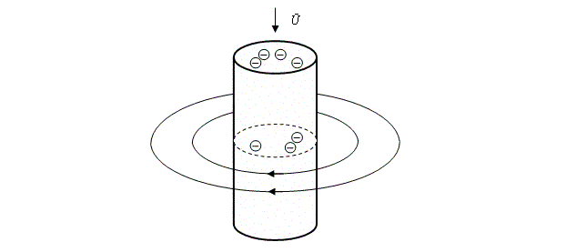
(3, с. 52, см. рис. 29).
Вследствие того, что поток электронов здесь постоянный (т. е. каждое поперечное сечение имеет приходящие и уходящие электроны, не оставаясь совсем без них) и ток не меняет своих характеристик, – здесь это поле остается, не исчезает, а также не меняет своих характеристик. Так, вокруг любого участка проводника с током возникает картина постоянного магнитного поля (1, с. 203). Проводник с током окружен круглыми плоскостями магнитных полей отдельных поперечных сечений. Эти кольцеобразные плоскости напряженности как бы нанизаны на проводник, плотно прилегая друг к другу. Совокупность их создает собой невидимую объемную своеобразную втулку напряженности, в которую вставлен проводник. Т. е. вокруг какого-то рассматриваемого участка проводника с током, коль скоро он с током, всегда имеется некое втулочное постоянное по характеристикам общее магнитное поле (3, с. 52).
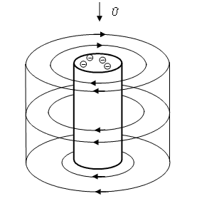
Подобно тому как отдельному движущемуся заряду сопутствует магнитное поле, так и проводнику с током сопутствует постоянное магнитное поле. Причем разница между этими явлениями только в том, что отдельный движущийся заряд одиночен, а ток представляет собой большое множество таких движущихся зарядов, подобно тому как отдельная сила отличается от поля только тем, что поле – это совокупность отдельных сил. В остальном же мы имеем возникновение одного и того же по характеристикам магнитного поля как вокруг проводника, так и вокруг отдельных зарядов.
Однако ток сам по себе еще не способен вызвать электромагнитную волну. Нужно какое-то изменение этого тока. Причиной возникновения электромагнитной волны является ускоренное движение электрических зарядов (3, с. 68). Это верно для проводника с током (потоком) электрических зарядов в целом, для отдельно взятого электрического заряда в этом токе, для электрона, «соскакивающего» со своей длинной орбиты на короткую в атоме (3, с. 82). В данном рассуждении будет рассмотрен общий случай – с током в проводнике; по аналогии можно будет объяснять частные случаи, в т. ч. только что обозначенные. В принятом случае с током я делаю предположение, что волна распространяется в одну сторону от проводника. Это предположение нужно для предварительного более легкого понимания возникновения и существования электромагнитной волны. А в дальнейшем будут описаны почти все известные случаи распространения электромагнитной волны.
Когда происходит ускорение тока, при этом происходит одновременное изменение магнитного поля (3, с. 68-69), окружавшего проводник в качестве постоянного, а теперь (в процессе своего изменения) ставшего переменным. Одновременность изменения в токе и магнитном поле проводника обусловлена следующим. Любой движущийся заряд и магнитное поле вокруг него одновременны, движение этого заряда – это одновременное условие магнитного поля, а всякое изменение в движении заряда приводит к одновременному изменению в магнитном поле заряда. Это рассмотрение можно легко расширить с отдельного заряда до их множества в качестве тока: т. к. общее магнитное (втулочное) поле проводника создается отдельными магнитными (плоскостными) полями движущихся зарядов, то изменения в движении (ускорение) всех этих отдельных зарядов и изменения в их плоскостных магнитных полях представляет собой в целом соответственно изменения в токе и изменения в магнитном (втулочном) поле проводника.
Согласно уже изученному про такое явление одновременности, можно было бы сказать, что это не изменения в токе вызывают изменения магнитного поля проводника – это изменения в магнитном поле проводника вызывают изменения в токе. Хотя, как уже говорилось, такие слова, как «вызывает», «порождает» говорят о каких-то причинно-следственных связях, поэтому в отношении тока и магнитного поля больше подходят слова «сопутствует», «свидетельствует».
Что же происходит после ускорения тока при одновременном изменении магнитного поля проводника?
Изменяющееся магнитное поле (или ускоренный ток, т. к. эти вещи одновременны) служит причиной к возникновению в близлежащем пространстве электрического вихревого поля (3, с. 68; 4, с. 180). (Вихревое – значит, замкнутое, т. е. состоящее из силовых линий, которые замкнуты, представляя собой окружности в пространстве (1, с. 154)). Между прочим, магнитное поле тоже является вихревым, т. е. таким, у которого силовые линии напряженности представляют из себя замкнутые и независимые окружности в пространстве. На это, собственно, в тексте указывается словом «кольца» по отношению к этому полю, а также рисунками.
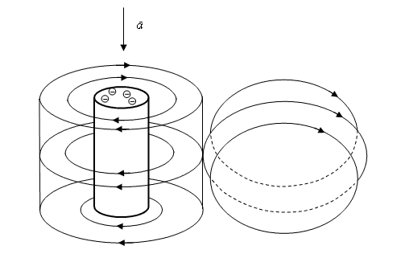
Возникшее рядом электрическое вихревое поле по всем своим основным свойствам является идентичной пространственной копией вещественных изменений, произошедших в материальном проводнике при ускорении потока частиц. Если я правильно понял смысл индукционного тока, то данное предложение математически ставит знак равенства соответственно между возникшим электрическим вихревым полем и индукционным током проводника. (Это положение можно основывать на рассуждениях в физике – (4, с. 178, 180), – но невозможно считать, что оно недвусмысленно и явно признано в рассуждениях физиков). Электрическое вихревое поле в точности повторяет характеристики изменений, произошедших в самом проводнике. Причем повторяет их в близлежащем пространстве. Являясь физическим следствием от своей причины, это поле возникает на миг времени позже, чем происходит само изменение с проводником, что объясняется последовательным следованием во времени сначала причины, потом действия.
Возникшее электрическое поле вызывает «к жизни» новое магнитное поле (3, с. 68; 4, с. 180). Электрическое поле произошло от первого переменного магнитного поля и само оказывается вовсе не постоянным, а переменным, и потому, «породив» новое магнитное поле, так же передает ему свойство переменности.
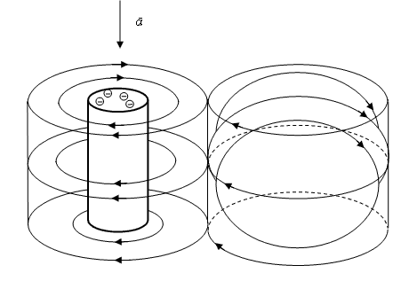
При этом происходит своего рода обман, ведущий к своеобразной ошибке. Новое переменное магнитное поле появляется вследствие того, что «расценивает» переменное вихревое электрическое поле как переменный ток в проводнике; здесь действительно легко ошибиться: ведь электрическое поле и тот ускоренный ток совершенно одинаковы по своим свойствам. Так происходит «обман» нового магнитного поля. Будучи «обманутым» оно возникает и становится переменным точно так же, как оно «без обмана» возникло бы и стало бы переменным вокруг проводника с переменным током. Но тут оно возникает не вокруг вещественного проводника, а, по сути, в пустом пространстве. Так, путем обмана, происходит своеобразная ошибка: новое магнитное поле возникло в пространстве, «по ошибке расценив», что в этом пространстве существует проводник с переменным током.
Это новое магнитное поле соответствующим образом, добросовестно отражает изменения в вихревом электрическом поле, подобно тому как оно должно было бы отразить их при изменении в токе. Так что от данного переменного вихревого электрического поля рождается соответствующее ему переменное магнитное поле. А т. к. вихревое электрическое поле служит подлинной копией изменениям в токе, то оно вызывает точно такое же магнитное поле, как и сам ток. Т. е. магнитное поле вокруг проводника и магнитное поле, порожденное электрическим вихревым полем, оказываются одинаковыми по своим свойствам.
Здесь можно прийти к некоторой непоследовательности. Мною говорится, что изменения в токе и возникающее изменяющееся магнитное поле вокруг проводника одновременны, а точно такое же, как ток, электрическое вихревое поле порождает (как предшествующая причина) свое магнитное поле. Неужели переменный ток и его переменное магнитное поле одновременны, а точно такое же по свойствам переменное электрическое вихревое поле не одновременно со своим магнитным? Действительно, ничего не остается, как констатировать эту постоянную одновременность. Ведь, по сути, нет разницы между электрическим полем и током, которым сопутствуют их собственные (но одинаковые) магнитные поля. Собственно, одновременность эта опирается на понятие сцепленности магнитного поля с его электрическим, что короче имеет название понятия электромагнитного поля; магнитного поля не бывает без носителя – зарядов или электрического поля (3, с. 52). Сказанное же в предыдущем абзаце о том, что электрическое поле вызывает, порождает (будто предшествующая во времени причина) магнитное поле, было допущено сознательно, чтобы как можно легче показать с какими свойствами возникает там новое магнитное поле. Так что мы имеем в определенном месте вблизи проводника одновременное возникновение электрического поля и магнитного поля.
Эти поля имеют друг к другу перпендикулярное отношение (3, с. 70; 4, с. 180). Причем в этом виде они повторяют отношение первого переменного магнитного поля к его проводнику с током: это магнитное поле перпендикулярно к проводнику и как бы кольцами охватывает его. Отсюда следует – электрическое вихревое поле параллельно проводнику и перпендикулярно своему (второму) и близлежащему (первому) магнитным полям. Хотя в дальнейшем будет показано, что при рассмотрении волны эта параллельность (но не перпендикулярность) в целом всё меньше имеет место быть. Эти возникшие около проводника с его магнитным полем и существующие перпендикулярно друг к другу электрическое поле и новое магнитное поле занимают одну, определенную область пространства, полностью пронизывая друг друга под взаимным углом в 90°. Вообще, не только возникновение этих полей, но и в целом существование, включая всяческие изменения напряженности, происходящие в этой области, вплоть до исчезновения – одновременны. Поэтому недаром их объединяют под общим понятием электромагнитного поля. Данный объем пространства, который занимает это электромагнитное поле, удобно будет называть для краткого обозначения – участок, под чем будет пониматься отдельный, самостоятельный участок электромагнитной волны.
Итак, изменения в скорости U тока, а именно, его ускорение a , с одновременным изменением в сопутствующем проводнику магнитном поле, послужило причиной к возникновению близлежащего электромагнитного поля (участка). Последний полностью повторяет те изменения в свойствах, которые происходили в проводнике при ускорении тока. Именно поэтому этот возникший участок как таковой можно считать вторым, а первым следовало бы считать тот, что явился родоначальником, связанным в пространстве непосредственно с проводником.
Однако на этом последствия ускорения тока в проводнике не заканчиваются. Возникший участок, являясь идентичной копией по своим свойствам и изменениям первого участка, производит в природе то же действие, что и первый участок. Т. е. он служит, точно так же, как родоначальник, причиной к возникновению вблизи себя электрического вихревого поля и одновременно магнитного, сопутствующего появившемуся электрическому. Это объясняется тем, что изменения в первом участке выступили причиной сами по себе достаточной для возникновения отдельного, второго участка; а значит, точно такие же изменения во втором участке тоже выступают как достаточная причина для возникновения рядом следующего участка. Словом, второй участок служит причиной к появлению третьего. В последнем происходят и возникают те же изменения, что были во втором участке. При этом точно аналогично тому, что производил первый участок во втором, так же второй участок производит нечто и в третьем. Происходит опять-таки своего рода обман. Третий участок «расценил» второго как родоначальника, непосредственно связанного с вещественным проводником, и, конечно же, не замедлил явиться, повторив, как и положено, изменяющиеся свойства своего «родителя». Правда, в действительности получилось, что третий повторил свойства второго участка, «опустошенного» от проводника. (Последовательное возникновение отдельных частей волны, представленное во всем этом абзаце признано в физике: 4, с. 180).
При этой передаче от первого ко второму, от второго к третьему получается следующая картина наследования свойств. Если на эту передачу, точнее на второй участок, не повлияли никакие посторонние, случайные воздействия, то второй участок стал копией первого, а третий копией второго; значит, все три участка одинаковы и передают друг другу одни и те же свойства. Если же на второй участок повлияли какие-то посторонние, случайные воздействия, то при этом второй участок всё-таки унаследовал свойства первого (потому-то и «родился» вообще), а, изменившись из-за внешних случайностей, передал третьему только свои собственные новые свойства, так что третий оказался копией второго участка, но не первого. Эти особенности следует учитывать при объяснении неизменности лучей, прошедших большие расстояния, и при объяснении возможного изменения в их свойствах после прохождения какого-то расстояния.
Процесс этой передачи, этого последовательного порождения участков продолжается и не может просто так утихнуть или остановиться: ведь ровным счетом каждый участок представляет из себя такое переменное изменение, которое служит достаточной причиной к возникновению рядом его копии. Теперь третий участок «кичится» тем, что он подобен проводнику с ускоренным током, и становится причиной четвертому участку. Четвертый «взбухает» и порождает пятый участок и т. д., и т. д.
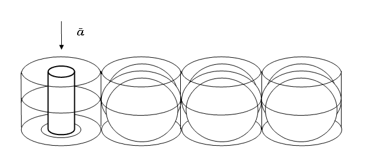
Это последовательное друг за другом причинно-следственное порождение электромагнитных участков происходит с огромной скоростью и покрывает огромные расстояния, особенно если учесть сравнительно малые размеры этих участков. Как известно, за секунду это распространение проходит расстояние около 300 000 км. Причем не происходят затраты времени между возникновением электрического и магнитного полей в каждом отдельном участке, т. к. эти поля в участке возникают одновременно, а происходят затраты времени на возникновение следующего участка от предыдущего. Эти затраты ничтожны, хоть и достоверны. Ничтожны до такой степени, что одной секунды хватает, чтобы участки уже оказались на расстоянии 300 000 км от источника тока.
Так возникает (в зависимости от проводника, т. е. от вещества) и распространяется в пространстве (независимо от вещества) явление, названное электромагнитная волна. Она, как уже понятно, состоит из отдельных участков, являющихся электромагнитными полями. Можно сказать распространение свойств участков, т. е. свойств электромагнитных полей, и есть электромагнитная волна.
И. Насколько удачно в отношении электромагнитной волны слово «волна»?
Именно это порождение электромагнитных полей, представляющих собой отдельные участки в пространстве, именно эта цепная последовательная реакция и обозначается словом «волна». Это слово родилось для обозначения вещественных явлений, а не полевых, и поэтому те, кто распространяет его во всех нюансах на рассмотренную полевую цепную реакцию, впадают в логическую ошибку слишком широкого распространения. Некоторые из этих ошибок были показаны в начале рассмотрения явления электромагнитной волны.
Необходимо заметить, что (согласно тому, что я мог почерпнуть из одного курса истории физики) Максвелл и Герц не употребляли слово «волна», а использовали другие слова, например, «электрические колебания» или даже просто «колебания», «электромагнитное возмущение», «электромагнитные действия», «электромагнитные явления». Точно так же выражались и их современники – физики, которые наблюдали за развитием теории электромагнитной волны, например, Больцман и Гельмгольц. Слово «волна» если и использовалось, то только как поясняющее прилагательное, например, «волновые колебания». Слово «волна» в отношении электромагнитной волны впервые можно встретить только через несколько лет после экспериментального открытия электромагнитных волн Герцем в названии докторской работы русского физика-лаборанта Лебедева (он стал бессмертным, будучи простым лаборантом): «Экспериментальное исследование пондеромоторного действия волн на резонаторы». Рассматриваемое слово не утвердилось у родоначальников открытия электромагнитной волны, а ведь именно на их основных тезисах построено это рассуждение. Может быть, поэтому оно избавлено от бессмысленнейших спекуляций, возникших на основе одного только многозначного слова «волна».
Но спекуляции надо отнести на счет недалекости, а не возлагать за них всю ответственность на одно невинное слово. Само слово «волна» нельзя считать уж по всем статьям неудачным. Только это слово обозначает перенос энергии по пространству независимо от того, на основе чего совершается этот перенос. По отношению к электромагнитной волне возможны также правильные аналогии, выраженные в предикатах к логическому субъекту «волна». Например, эпицентр волны, волна пошла, раскат волны, распространение волны, прокатывание волны. Помимо этого, общие свойства механической вещественной волны присущи и обсуждаемой цепной полевой реакции. Например, отражение, преломление. Между прочим, я однажды проверил свойство преломления тем, что включал телевизор с пульта дистанционного управления, направляя последний не на телевизор, а в противоположную сторону на предметы, которые могли отразить невидимый луч в обратном направлении. Таким же образом я управлял звуком, отражая невидимый луч от собственной ладони.
Й. Электромагнитная волна продольна или поперечна?
Электромагнитная волна совсем не является поперечной волной, т. е. похожей на синусоиду. Такого образа нет у этой волны ни в какой ее части, ни в какой момент времени ее существования (т. е. прокатывания, раската по пространству), ни в каком возможном видовом разнообразии этой волны.
Эта волна строго продольна, т. е. имеет такой вид своего распространения, который представляет собой ось, направленную от источника и начала распространения волны. Это видно на предложенном мной рисунке, где участки волны (электромагнитные поля) выстраиваются друг за другом. Именно по этой общей оси, по этому вектору переносится волна в пространстве, а вовсе не по какой-то там синусоиде.
Подробное данное здесь рассмотрение распространения волны по электромагнитным участкам может показать лишь то, что эта волна действительно продольна и только. Почему же смертным свойственно видеть в электромагнитной волне исключительно поперечную волну?
Во-первых, это объясняется самим словом «волна», которое, насколько я могу судить, как термин не употребляли в своих изысканиях ни Максвелл, ни Герц. Что обычно может прийти на ум при произнесении слова «волна»? Что, например, можно представить, когда кто-то говорит, что он видел волны? – Морские волны. Это – поперечные волны. Собственно, именно для этого физического явления и появилось у древних это слово. Физики в свое время использовали его, затем изучили все ее виды и собственные признаки, и оказалось, что продольное распространение энергии без переноса вещества, собственно, тоже есть волна, с той лишь разницей, что распространяется она не по синусоиде, а по оси. Кому, однако же, сразу придет на ум слово «волна», если он увидит причинно-последовательно падающий ряд игральных карт или домино? Здесь человек видит именно падающие друг за другом карты или домино, а при взгляде на море он видит именно волны.
Во-вторых, некоторые свойства, присущие продольной электромагнитной волне, смогли объяснить, к сожалению, только тем, что быстренько сослались на поперечный образ этой волны. Например, при прохождении электромагнитной волны через различные минералы, экспериментальные решетки и их взаимное положение друг относительно друга, было обнаружено, что электромагнитная волна распространяется во взаимно перпендикулярных плоскостях. Это – свойство поляризации волны. В этих опытах было установлено, что энергия волны переносится в вертикальной и горизонтальной плоскостях. При различном положении минералов и решеток создавались ходы и щели, показывающие, что волна проходит либо через вертикальную щель, либо через горизонтальную, либо через обе сразу, т. е. через проход в виде знака «плюса». В других же плоскостях волна не распространяется.
Объясняется это явление очень просто. Как можно наглядно видеть в моих рисунках, энергетические плоскости в волне – это перпендикулярно расположенные друг к другу плоскости электрических и магнитных полей.
Но почему-то вдруг с какого-то переполоху решили, что именно по этим перпендикулярным плоскостям бежит… синусоида (?). Наверняка кто-то заметил, что в экспериментальном образе плюса, сквозь который проходит волна, черточки плюса, а значит и плоскости волны, располагаются поперёк друг к другу. Значит, видимо подхватил другой, мы имеем дело с поперечной волной. Подобному умнику следовало бы ответить: «Не с поперечной волной, а с поперечной головой». Главное свойство поперечности волны – образ ее в синусоиде, а это уже переворачивает всё верх дном. И эти случайные слова настолько могут запутать смертных, что произнесенное только для пояснения, что еще не ложно для объяснения, становится у них самим объяснением, причем уже ложным. Из поперечности полей в участках волны вывели из-за запутанности слов поперечность самой волны.
В современной физике отлично понимают, что прохождение волны через две перпендикулярные плоскости (через «плюс») означает поперечное расположение друг к другу плоскостей электрических и магнитных полей в волне. Но что же дало право непосредственно из этого заключать о поперечности самой волны в целом? Не буду голословным. «Опыты с пропусканием электромагнитных волн через систему из двух решеток показывают, что эти волны являются поперечными. При распространении электромагнитной волны векторы напряженности З и магнитной индукции В перпендикулярны направлению распространения волны и взаимно перпендикулярны между собой» (3, с. 70; курсив мой). «Возникающая и распространяющаяся в пространстве электромагнитная волна является поперечной: направления векторов напряженности электрического поля и индукции магнитного поля перпендикулярны друг другу и направлению распространения волны» (4, с. 180; курсив мой).
И здесь спор идет не о словах и не о мелочах. Ложное мнение о поперечности волны, хочешь, не хочешь, вынуждает считать ее синусоидальной волной, подобно морской волне. Т. е. участки волны, либо энергия в этих участках должны исходить в таком случае от источника «синусоидой», чего нет и что невозможно ни понять, ни обоснованно представить, разве что только в больном бурном воображении совсем уж смертных. Тогда как основанные на простых, проверенных и признанных положениях мои рассуждения и рисунки показывают, что распространяется волна вдаль от источника продольно, подобно волне последовательно падающих домино.
Представление о поперечности волны и, как следствие, о ее синусоидальном образе вынуждает рисовать современных физиков необъяснимые нелепости, которые они считают видом самой волны. При этом они сами не понимают свои рисунки: то это волна в целом, то это просто график (хотя рисунок не изменился), то это энергия в волне, где одной синусоиде соответствует переносимая энергия электрического поля, а перпендикулярной синусоиде соответствует переносимая в таком виде энергия магнитного поля. В последнем случае творятся совершенно невообразимые вещи: будто энергия любого вихревого (грубо говоря, круглого) поля в волне собирается исключительно в одной какой-то полуплоскости окружности поля, а полполя, получается, существует без энергии. Хотя понятие существования поля уже заключает в себе понятие энергии этого поля, и поэтому поле не может существовать и в то же время не иметь энергии, не может существовать наполовину, оно либо есть в данном месте, либо его нет, вот и всё.
Более того, ложная «теория» поперечности волны ставит крест на объяснении свойства поляризации волны. В таком случае экспериментальные решетки и минералы должны пропускать волну не через целые щели, как это было в экспериментах, а только через какие-то ее части. Если волна – перпендикулярные друг другу синусоидальные кривые, то пропускаться должна только одна точка вертикальной и одна точка горизонтальной плоскости распространения. Здесь решетки будут служить сечением для каждой синусоиды, фиксируя ее прохождение в одной точке. Если, как это обычно принято у смертных, энергетически возбудима только та плоскость, которая заключена между синусоидальной кривой и осью ее распространения (полполя, как я объяснял), то щель в образе плюса пропустит энергию только через половинки черточек «плюса».
Как бы там ни было, но невозможно будет объяснить экспериментальный факт: энергия пропускается через всякую щель целиком, а не половинками или точками. А это объяснимо, только если представлять участки волны (электромагнитные поля) полностью наполненными напряженностью (а не в каких-то своих точках и полуплоскостях) и если принять при этом прямое, продольное распространение этой волны, а не убегающее в целом то вверх, то вниз по линии воображаемой и необоснованной синусоиды.
Помимо этого нельзя считать электромагнитную волну поперечной, полагаясь просто на присущие ей свойства. Ибо эти свойства в равной степени принадлежат всем видам волн (3, с. 69).
Именно понятие о продольности электромагнитной волны позволило рисовать и ясно представлять ее распространение в качестве некой цепной последовательной реакции, подобно содроганию, пробегающему по цепочке железнодорожных вагонов в момент перехода этого железнодорожного состава в движение после стоянки.
Позднее я объясню нюансы переноса энергии электромагнитной волны, чтобы парировать следующее возражение.
В моих рисунках, как и в «синусоидальных» рисунках никудышных учебников, можно экспериментальные щели мысленно расположить соответственно между участками волны или в плоскости, где синусоидальные кривые «утихли» до нуля, пересекая ось. В этих «пограничных» случаях энергия, судя по всему, равна нулю, и тогда в эксперименте мы можем пустить свет на решетки, которые по нашей задумке должны пропустить свет, но они не пропустят его, т. к. мы расположили «фильтрующие» решетки там, где свет упал до нуля и еще не успел набрать напряженность. Однако никому еще не удавался такой микроскопический фокус по «исчезновению» света. Кроме этого, такой случай означал бы исчезновение энергии электромагнитной волны в никуда, что противоречит законам сохранения.
К. Как представлять себе длину электромагнитной волны?
Из параграфа о причинности понятно, что причина – это такое же полноценное изменение, такой же полноправный процесс, как и вызываемое ею действие. Поэтому когда некое изменение в какой-то момент своего существования дает начало (становится причиной) к существованию другого изменения (возникновению действия), то это еще не говорит о том, что первый названный процесс, имеющий статус причины по отношению к вызванному ею действию, должен сразу исчезать после произведенного им действия.
Например, ветер поднимет песок. Почему же сразу после этого ветер должен утихнуть?
Тем не менее, известны случаи и полного исчезновения процесса после вызванного им действия. Например, катящийся бильярдный шар при центральном столкновении с другим шаром (причина), который укатится вследствие этого (действие), сам может полностью остановиться на месте.
То, что изменение может существовать до и после вызываемого им действия, мы вправе предполагать и в отношении распространения электромагнитной волны по участкам. Поэтому это распространение можно представить в следующих видах.
Родоначальный, первый участок электромагнитной волны (тот, что связан с проводником в пространстве) может вследствие прекращения тока или наступления его постоянности (постоянный ток – ток, имеющий постоянную скорость) полностью угаснуть к тому моменту времени, когда возникнет второй участок волны в близлежащем пространстве. Вследствие того, что каждый последующий участок всегда дублирует произошедшие изменения в предыдущем участке, повторяется та же картина. Дав повод к появлению следующего, третьего, участка, второй участок полностью утихнет до возникновения третьего. Опять вечное дублирование приводит к повторению картины: третий участок угасает и сразу после этого, а также вследствие переменных изменений в третьем участке, возникает четвертый участок. И т. д.
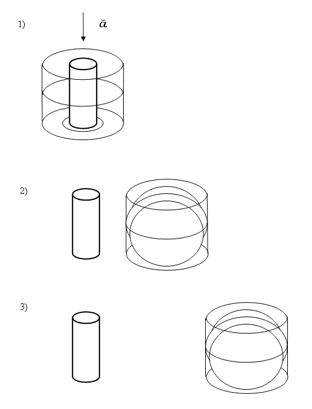
Таким образом, этот вид распространения заключается в том, что в пространстве наблюдается в любой взятый момент времени только один участок волны. Это как раз относится к тому случаю, когда причина сразу прекращается после того, как она вызвала действие.
Но, как говорилось, причина как полноценный процесс может и не исчезать сразу после вызванного ею действия. Тогда мы наблюдаем следующие виды распространения электромагнитной волны.
Родоначальный участок вызвал к «жизни» второй участок волны. Но при этом он еще не собирается «умирать». Хотя второй участок уже начал дублирование и уже через мгновение вызовет к существованию третий участок. В этом виде распространения волны к моменту появления третьего участка родоначальный угасает. Вследствие процесса дублирования теперь и второй участок, породив третий участок, не собирается угасать, а «ждет», когда наступит мгновение появления его «внука» – четвертого участка. По этой и так далее распространяющейся картине получается, что в любой момент времени в волне присутствует два участка.
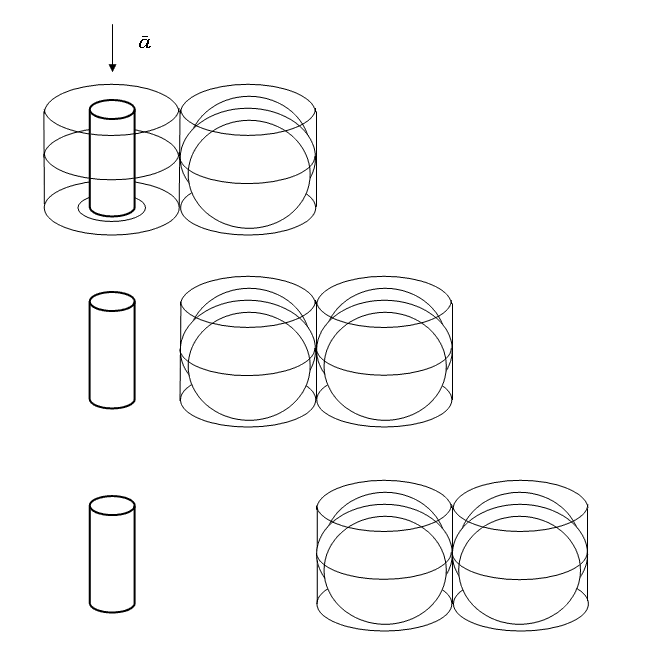
По непредпринимаемой, но подразумеваемой здесь аналогии можно понять, что в пространстве может «паровозиком» проходить не только сразу два участка, но и три, и четыре, и пять, ну и т. д.
Что же должен представлять в строгом научном понимании физиков этот «паровозик», будь он из одного «вагона», двух, трех или более?
Как можно понять, этот бегущий по пространству «паровозик» следующих друг за другом участков волны и есть в целом пробегающая по пространству волна электромагнитной энергии. А этот «паровозик», эта волна, неизбежно занимает в пространстве какую-то определенную длину. Т. е. у «паровозика», волны, есть определенная длина. Другими словами, это и есть длина распространяющейся электромагнитной волны – л. Надо заметить, чтобы мой драгоценный (т. е. не тот, который будет придираться к доказанной истине) читатель не упускал важное из виду, что здесь впервые дано открытие того, как выглядит длина волны: в учебниках по физике можно найти только лишенные смысла разглагольствования и такие же рисунки. Таким образом, новейшее определение длины электромагнитной волны состоит в следующем: длина электромагнитной волны есть не что иное, как расстояние, занимаемое в любом месте определенным количеством электромагнитных участков, где первый участок еще не исчез, а последний уже появился.
Л. Как передается энергия в самой волне?
Прежде определимся с вопросом «что за энергия составляет участки волны (электромагнитные поля)?».
С точки зрения физики в них два вида энергии: напряженность электрического поля и индукция магнитного поля. На самом же деле это два одних и тех же вида энергии, только обозначенных разными именами. Объясняется это тем, что магнитное и электрическое поля относятся к одному и тому же виду материи – полевому явлению.
Существование полевого явления имеет смысл, если оно обладает энергией. Иначе получится полная бессмыслица, если будет дано утверждение существования какого-то поля и вместе с тем будет указываться, что оно совсем не обладает энергией: на каком же основании его существование было замечено? – Мы только по наличию его энергии и можем судить о его действительном существовании.
Энергия же полевого явления – это напряженность, которая есть главный признак этого вида материи. В физике могут быть даны какие угодно наименования для напряженности разных полевых явлений, и обозначены они могут быть какими угодно буквами. Однако все эти разные обозначения будут обозначением для одного и того же – для общего признака всех этих явлений, для энергии полевого явления как вида материи, которую я называю наиболее подходящим и понятным словом – напряженность. Именно потому, что напряженность электрического поля, индукция магнитного поля и т. п. полевые энергии совершают в природе одни и те же действия и проявляются одинаково, их можно смело причислять к одному виду материи и его одному главному признаку, который я в целом обозначаю как напряженность (не имея под этим в виду только напряженность электрического поля).
Таким образом, всю энергию электромагнитного поля можно называть одним словом – напряженность. Это, однако, не должно дать прецедент для смешивания воедино и полного неразличия между энергией электрического и магнитного полей. У каждого из них своя энергия. А я просто для удобства и внедрения понимания, что это энергии одного и того же вида, обозначаю энергию электромагнитного поля как в целом напряженность, ибо последняя есть энергия всех этих, полевых, видов материи.
Теперь выясним такой вопрос: при распространении электромагнитной волны ее энергия в целом увеличивается или уменьшается?
Истинный, однозначный и чёткий ответ на этот вопрос в современных научных представлениях отсутствует. Я даже встретил более или менее, но всё же противоречие по этому вопросу в одном учебнике физики: «В вакууме мощность электромагнитной волны, излучаемая точечным источником, не поглощается. С течением времени волна проходит через все большие концентрические сферические поверхности. Поэтому средняя энергия, переносимая в перпендикулярном направлении сквозь единицу площади в единицу времени, т. е. интенсивность электромагнитной волны, уменьшается по мере удаления от источника» (4, с. 189). Однако до этого мощность Р и интенсивность I были поставлены в предшествующей формуле в прямо пропорциональную зависимость: I= Р/S (4, с. 188). Впрочем, и после этого: Р=I•4р•rІ (4, с. 189). Так как же мощность сначала «не поглощается», и вдруг именно «поэтому» интенсивность «уменьшается»? Вообще, по этому поводу есть мое представление о солнечной постоянной в области астрономии.
Если мы говорим об электромагнитной волне как таковой, т. е. рассматривая ее вне воздействия на нее посторонних внешних факторов, то не может идти речи ни о каком повышении или понижении энергии. Ведь в таком случае это противоречит закону сохранения энергии. По логике понижения или повышения энергии с расстоянием должна получиться такая глупость, что когда-нибудь энергия волны либо просто исчезнет в никуда, либо возрастет от любого ничтожного количества до энергии, всё сметающей на своем пути. Собственная же энергия волны должна согласно закону сохранения энергии оставаться неизменной. Даже в самом понятии «волна» заложен перенос одной и той же энергии на расстояние.
Если энергия волны как-то изменяется, значит, на это влияют какие-то посторонние факторы. Однако даже в природе обычно эти факторы ничтожны. Поэтому, например, мы можем проводить точный спектральный анализ звёзд и планет (хотя, казалось бы, энергия исходящего от них света должна была претерпеть изменения, пройдя столь тернистый путь до наблюдателя на Земле), и многочисленные волны, к примеру, используемые и пересекающие друг друга на Земле, не мешают друг другу. Даже если рассматривать затухание электромагнитной волны, то это объясняется переходом энергии волны в другие формы энергии, а не тем, что волна, мол, сама по себе так устроена, что и в абсолютном вакууме без всяких внешних факторов затухла бы. Последнее противоречит не только закону сохранения энергии, но и закону причинности. Если по закону причинности первый участок волны порождает второй с такой же напряженностью, то это будет возможно и тогда, когда тысячный порождает тысячепервый участок. Если в данных условиях причина порождает действие, то в таких же позволяющих условиях причина так же будет порождать действие. Поэтому если думать об угасании, то получилось бы что причина то порождает действие, то (когда ей вздумается, ни с того ни с сего) не порождает действия. Только так было бы возможно угасание волны и ее исчезновение по ее собственной природе и не по природе внешних случайных воздействий. Но это невозможно принять ввиду столь явного и даже абсурдного противоречия закону причинности. В общем-то, неимоверное увеличение энергии волны тоже противоречит закону причинности, ведь такое беспричинное увеличение означает, что на него нет ровным счетом никакого основания в природе, т. е. что-то происходит и возникает, не имея на то никакой причины. А это невозможно в природе и невозможно по закону причинности.
Так что следует принять неизменность энергии самой электромагнитной волны.
Как уже говорилось выше, все важные свойства участков, в т. ч. их общая напряженность, а также расположение и густота силовых линий, идентичной копией передаются от участка к участку. Из только что объясненного вопроса о неизменности энергии волны так же отчасти следует, что напряженность повторяется от участка к участку.
При этом важно не забывать, что каждый следующий участок, будучи действием от своей причины – предыдущего участка, – следует на миг позже, чем предыдущий участок. Это объясняется тем, что действие всегда на миг запаздывает от своей причины, ибо во времени сначала должна наступить причина и только потом вызванное ею действие.
Именно поэтому все копирующиеся с предыдущего участка нюансы каждого следующего участка наступают чуть позже, чем такие же нюансы проявляют себя в предыдущем участке.
Причиной для электромагнитной волны, как следует помнить, служит любое ускорение тока. Этому ускорению соответствует увеличение общей напряженности первого, родоначального участка. Чем больше длится и быстрее увеличивается ускорение, тем больше нарастает напряженность родоначального участка (3, с. 64).
Изменения же этого родоначального участка в точности, но на миг позже повторит второй участок. А потом и третий повторит изменения во втором, и т. д.
Именно это увеличение напряженности в родоначальном участке при ускорении тока и служит причиной к возникновению волны. Следовательно, когда ускорение прекратится и напряженность родоначального участка перестанет увеличиваться, то действие увеличения напряженности родоначального участка как причины прекратится. Поэтому родоначальный участок увеличивает свою напряженность до какого-то предела, этим самым вызывает к «жизни» второй участок, своим пределом напряженности дает второму участку «знать», до какого предела ему вообще дорасти (ведь второй участок повторит всё, что «сделал» родоначальник), а затем, выполнив эти миссии, независимо ни от чего, сам по себе полностью «медленно» угасает, если ток прекратился. Если же ток установился постоянный (с постоянной скоростью), то родоначальник остается «жить» с той напряженностью, которую обуславливает ток. Но вследствие того, что теперь нет ни ускорения тока, ни увеличения напряженности родоначальника, родоначальник и не производит никаких действий в качестве причины. Однако же для каждого участка в пространстве нет такого обуславливающего проводника, и, не имея его, они просто «медленно» затухают. При этом, однако, волна уходит вдаль. Между прочим, только этим затуханием участков, которые расположены в открытом пространстве и затухают, потому что их существование не поддерживается проводником (как это бывает у родоначальника), можно объяснить существование фотонов (т. е. «пульсацию» света, порциями исходящее излучение). В противном случае пришлось бы думать, что луч света представляет собой сплошную протяженность от источника и вдаль, что противоречит уже давно доказанному в физике. При этом считать это исчезновением энергии в ничто нельзя. Ведь энергия уходит вдаль, передается от участка к участку, а не исчезает. Если всё-таки давить на то, что каждый участок волны-де со временем, с уходом волны вдаль, угасает, его собственная энергия превращается в ноль, вот, мол, вам и исчезновение энергии, нарушающее законы сохранения, то абсолютно точно так же нужно считать, что если один бильярдный шар, врезавшись в другой, остановился, то это тоже означает, что энергия, будучи заключенной раньше в катящемся шаре, просто исчезла в никуда. Хотя понятно, что эта энергия была передана другому шару, который сам уже покатился из-за столкновения.
Объединив высказанные соображения, я просто покажу распространение волны в рисунках. При этом я покажу наиболее простой для понимания способ ее распространения – в трех участках, где каждому я приписываю модуль напряженности. У только что «родившихся» участков этот модуль растет, у участков в кульминации существования этот модуль максимален, а у угасающих участков этот модуль, соответственно, угасает. Сверху вниз каждый нижеследующий рисунок отображает положение вещей в последующее мгновение для одного и того же проводника с последствиями ускорения в нем тока.
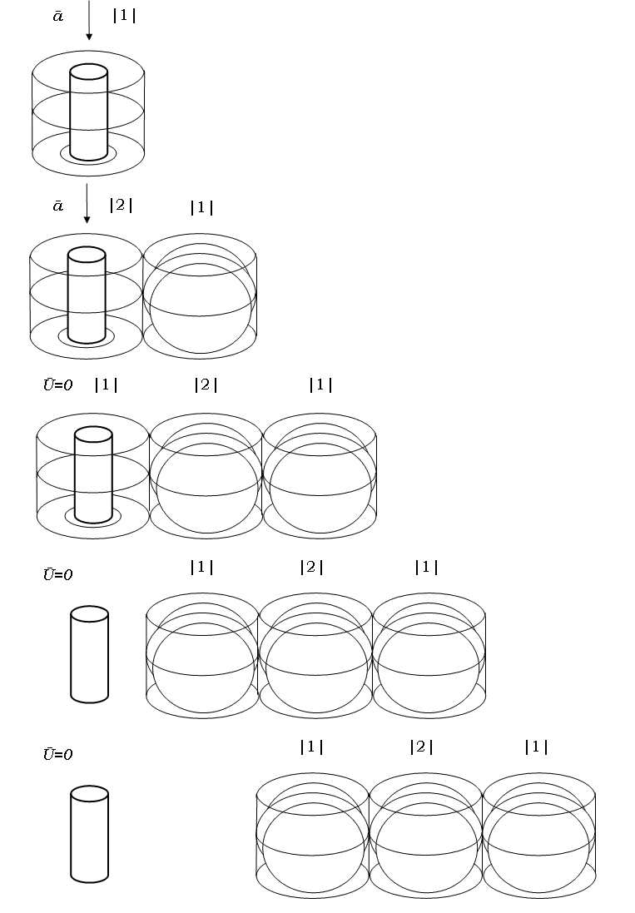
Как мы видим, распределение энергии в самой волне подчиняется пронырливому математическому закону нормального распределения и его симметричной кривой Гаусса, которая наглядно поясняет, что это за закон:
Нужно понимать, что напряженность электромагнитных участков не ограничивается моими нарисованными цилиндрами. Цилиндры ведь просто показывают, в каком месте пространства какому участку принадлежит напряженность. В пространстве между цилиндрами тоже должна присутствовать напряженность и в таком случае она должна принадлежать либо предыдущему участку, либо последующему. Пространством между цилиндрами я называю то, которое можно уяснить из этого рисунка (заштрихованное, вид сверху).
Помимо этого нельзя считать, что участки имеют какую-то общую границу. Такая граница означала бы, что напряженность на границе нельзя отнести с полным правом ни к предыдущему, ни к последующему участку, т. е. получилось бы, что напряженность не принадлежит ни одному участку.
Вообще-то это довольно-таки сложный пункт, т. к. я мог вывести из подтвержденных положений в физике действительное существование участков, но нет проверенных положений для объяснения распределения напряженности между участками (даже о самих которых в физике до сих пор, собственно, ничего не известно).
Пока что же из данного пункта следует, что по траектории распространения волны нет такого пространства, которое бы осталось без напряженности, и нет такой напряженности, которую нельзя было бы отнести с точной определенностью к какому-либо одному участку.
Как говорит Рональд Гросс, современный последователь Сократа, честный исследователь в добросовестном изыскании всегда отметит возможные погрешности. Оставляя этот вопрос о распределенности энергии в пространстве между цилиндрическими участками не полностью решенным, я, собственно говоря, как раз честно указываю на некоторые отсутствия полных и безупречных открытий в моем исследовании.
Вообще, мне кажется, что эта проблема должна решиться так, что каждый участок расширяется и заполняет впоследствии всё смежное пространство, сохраняя при этом вихревую (замкнутую) природу своих силовых линий. Расширяясь и исчезая впоследствии, он как бы таким образом растворяется в пространстве. Я мог бы утверждать это и напрямую, но я ведь принялся за это физическое рассмотрение, учитывая поддержку уже известных и проверенных достижений физики. Здесь же, вследствие того, что я здесь первопроходец, мне нечем поддержать себя.
Теперь в заданном вопросе остается понять, каким образом выстраиваются в дальнейшем своем распространении участки, когда, например, мы видим, что всякий луч от источника расширяется: от фонарика, от вибратора Герца, от любого лазера луч волны с расстоянием расширяется.
Как указывалось, любой электромагнитный участок порождает в близлежащем пространстве одно электрическое поле и соответствующее ему магнитное поле, т. е. рядом рождается одно объемное электромагнитное поле. Поэтому расширение нельзя объяснять фантастическим рождением нескольких участков рядом с предыдущим. Такой подход, во-первых, есть преумножение сущностей без необходимости, а во-вторых, он вводит нас в неразрешимый тупик при объяснении «угасания» энергии волны, особенно на краях своего расширения, что наблюдал уже Герц.
И вот только если мы предположим, что рядом с предыдущим участком всегда рождается только один участок, мы без лишнего преумножения сущностей сможем объяснить «угасание» энергии волны при ее расширении с набором расстояния. А ведь угасание как таковое невозможно, как уже было замечено, ибо оно противоречит законам сохранения.
Тогда если рядом с предыдущим рождается один участок и при этом наблюдается расширение волны, то значит, последующий участок сам выглядит как более расширенный по всем направлениям по сравнению с предыдущим.
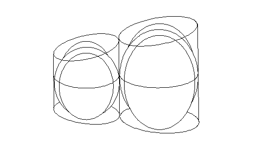
Подход с расширением одного только участка позволяет также легко объяснять расширение во все стороны от источника.
В случае, когда мы рассматриваем максимальное расширение по горизонтальному кругу от источника, (чтобы сохранить положение о замкнутости силовых линий) силовые линии магнитного поля замкнутся по всему кругу участка.
Чтобы было более понятно, сначала покажу на рисунке случай с незамкнутым горизонтальным кругом, а потом – с полностью замкнутым. При этом я показываю вид сверху на источник и не показываю электромагнитные поля, которые в такой проекции выглядят как множество черточек, пересекающих участок поперек.
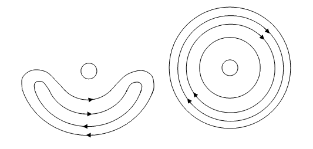
Аналогично и в вертикальном круге силовые линии электрического поля замкнутся по этому кругу. Теперь на рисунке я показываю вид сбоку на источник.
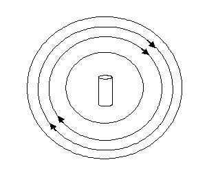
Сочетание же вертикального круга с горизонтальным говорит о распространении от источника сферической волны, где присутствует полная замкнутость силовых линий электрического и магнитного полей. Примером этому могут служить звезды.
И как уже говорилось, последующий участок повторяет все нюансы предыдущего. А это значит, что он в гораздо более расширенном варианте, в гораздо более крупном виде проявляет все нюансы, присущие предыдущему более мелкому участку, в котором эти нюансы, скажем так, столпились в неразборчивую тесноту. В этом смысле у предыдущих участков силовые линии находятся в большей густоте, чем в последующих, где они уже присутствуют в большей разреженности. Поэтому если у второго участка нюансы напряженности были незаметны и этот участок в целом выглядел во всех местах сильно напряженным, то у какого-нибудь сто второго участка мы уже заметим ослабленность напряженности на краях или даже по центру (ибо силовые линии от центра тоже расходятся в последующих участках с увеличением расстояния). Таким образом, наблюдаемое ослабление напряженности волны с увеличением расстояния есть не угасание энергии, что противоречит законам сохранения, а просто объясняется увеличением размеров участков волны, в которых силовые линии более разреженны и повторяют силовые линии предыдущих участков.
М. Как происходит передача энергии волны в пространстве?
В этом вопросе мною закладывается объяснение только одного пункта: как понимать частоту, исчисляемую в герцах.
В физике установлено, что любой электромагнитный поток, кажущийся сплошным и постоянным, например воспринимаемый нами свет, на самом деле «излучается отдельными порциями – квантами (или фотонами)» (3, с. 84).
Во-первых, это значит, что весь путь следования электромагнитной волны никогда не заполнен полностью участками – от источника и на все последующие метры, километры, миллионы километров. А заполнен этот путь только отдельными следующими друг за другом «паровозиками» сцепленных нескольких участков.
В этом смысле любое излучение представляет собой мигание. Заметить же мигание света мы не можем, ибо частота этого мигания настолько велика, что наш инерционный глаз этого не успевает заметить. Именно вследствие своей инерции он «смазывает» воедино видимые поступающие изображения, промежуток которых во времени составляет хотя бы 0,1 сек., не более.
Невидимое мигание света лампочек в наших домах объясняется переменностью тока, т. е. сам ток в наших розетках то появляется, то исчезает. При появлении тока у заряженных частиц скорость увеличивается от нуля до определенного значения, что является ускорением тока. Если бы ток был постоянный, с постоянной скоростью, то включенная лампочка только вспыхивала и сразу же погасала. Этот опыт воспроизводят на уроках физики в старших классах. Аналогично и мигание света от других источников (свеч, звезд) объясняется тем, что заряженные частицы (т. е. электроны) в атомах вещества этих источников, перескакивая с одной орбиты на другую, ускоряются и тем самым представляют собой переменный, ускоренный ток, который и дает начало одному «паровозику». Множество же этих перескоков порождает множество следующих друг за другом паровозиков, что и представляет собой невидимое мигание света, кажущегося сплошным.
Во-вторых, вышесказанное значит, что отдельная порция излучения, квант, фотон, частица любого излучения, отдельный «паровозик» – это разные слова для обозначения абсолютно одного и того же. И это очень важно уяснить ввиду современных глупостей и спекуляций вокруг этого.
Таким образом, та частота, с которой «паровозики» отходят от «своей станции», и есть частота электромагнитного излучения, исчисляемая в герцах.
Н. Что можно объяснить представленной здесь теорией электромагнитной волны?
Уже только из одного предыдущего вопроса следует правильное понимание извращенного ныне корпускулярно-волнового дуализма. Ведь согласно современному представлению смертных, от источника выскакивает кругленькая частица, типа электрона, и начинает свой синусоидальный путь вдаль от источника, оставаясь, разумеется, совершенно одной и той же частицей, самой собой, подобно тому как если бы в путешествие пустился какой-то определенный электрон. Таким вот образом, в представлении смертных связывается одновременное существование и частиц, и волны. Или же, может быть еще лучше. Некоторые, возомнив в себе несовместимый с ними ни по каким параметрам величественный дух Максвелла и Герца, поступают, мягко говоря, недалеким образом: рисуют синусоиду в один период Т; заявляют, что именно так и выглядит электромагнитная волна, в данном случае просто нарисованная; объявляют период Т длиной этой волны; саму синусоиду называют элементарной частицей электромагнитного излучения или просто фотоном; и, в довершение всего, считают, что именно в таком неизменяемом виде эта синусоида, т. е. фотон, гуляет себе по пространству, естественно, оставаясь сама собой, т. е. всегда одной и той же. Есть еще множество других безумств, но в главных чертах такова у них теория корпускулярно-волнового дуализма, укладывающаяся в одно бездоказательное предложение. Нарисовал, сказал, и дело в шляпе. А то, что подробно рассматривалось на протяжении предыдущих страниц, – это для них слишком недоступно, ведь оно основано на тезисах тех, кто своими открытиями полностью исчерпал всякое возможное объяснение электромагнитных явлений. Какой же контраст, однако, представляет собой истина! – Частицей является не одна и та же кругленькая частица или какая-то там синусоида, а ряд электромагнитных участков – «паровозик»; эта частица всего мигающего излучения не летит по синусоиде, а распространяется строго продольно, причем не оставаясь одним и тем же «паровозиком», а порождая в каждом новом месте всё новый «вагончик» и расставаясь в покидаемом месте со старым вагончиком, который попросту исчезает в своем затухании.
В соответствии с тем, что я уже рассказывал, моя теория объясняет, почему с увеличением расстояния распространения электромагнитной волны мы можем наблюдать в некоторых случаях падение напряженности волны, особенно на ее краях, как это впервые наблюдал Герц. Ведь это угасание напряженности не должно считаться естественным, т. к. оно противоречит закону сохранения энергии.
Помимо этого, я могу теперь объяснить природу фотоэффекта – выбивание электронов из фотоматериала при «бомбардировке» его электромагнитными волнами. Когда волна доходит до электрона в фотоматериале, перед электроном возникает участок, энергия которого с каждым мгновением увеличивается. Таким образом, в своеобразное противоречие вступает электромагнитное поле (т. е. этот самый участок) и электростатическое поле электрона, что приводит к возникновению сил отталкивания, точно как у близко приблизившихся друг к другу электронов, где в противоречие вступают электростатические силы этих электронов. А т. к. участок ни в коем случае не уберется со своего места, ибо всякое полевое явление неподвижно, то здесь остается только вылететь со своего места электрону.
Представленной теорией также можно объяснять природу нейтрино. Она, будучи исключительно носителем напряженности, есть не что иное, как полевая частица, т. е. состав нескольких следующих друг за другом электромагнитных участков, которые по продольной цепной реакции возникают и исчезают в пространстве. Это объясняет весь ее характер существования, в т. ч. проницаемость почти через любое вещество, ибо полевое явление по своей природе нисколько не зависит от какого-либо вещества и существует даже вопреки ему. То же, что нейтрино до сих пор считают вещественной частицей (а на каком правдоподобном основании, я даже не могу представить), следует списать на обыкновенную неспособность. Интересно, какой же должна быть вещественная частица, чтобы она могла выстрелить из недр Солнца и в стремительном полете на далекие миллионы километров могла бы невозмутимо пронзать любые вещества и планеты? Особенности существования нейтрино останутся необъяснимыми до тех пор, пока в нем не признают полевое продольно-волновое явление и пока не поймут природу его распространения, как это показано здесь для полевых волновых явлений.
Помимо того, что представленной здесь теорией объясняются некоторые малообъяснимые вещи, она также согласуется с проверенными ныне физическими теориями. Например, справедливо победившая несколько веков назад теория близкодействия в «битве» с теорией дальнодействия есть та теория, которая гармонично согласуется с представленной мной теорией. Передислокация фотона на большие расстояния за несколько мгновений с сохранением одних и тех же свойств объясняется мной порождением возле каждого участка фотона другого, идентичного по свойствам участка. Каждый следующий участок есть действие изменяющего предыдущего участка – причины. Т. е. действие, возникшее здесь и сейчас, возникло именно здесь и именно сейчас потому, что непосредственно рядом и мгновение до этого действовала причина. А ведь именно в этом суть теории близкодействия. Это замечание не второстепенно и важно в данной теме, потому что многие моменты ныне извращенной теории корпускулярно-волнового дуализма гораздо легче и беспротиворечивей объяснить теорией дальнодействия, т. е. поддержать этот дуализм представляется возможным именно ложным и давно почившим. Некоторые уточнения по этому поводу были высказаны мной ниже в связи с необходимостью и случайностью (см. § 007, В).
Между прочим, еще до начала «битвы» теорий близкодействия и дальнодействия Шопенгауэр предвосхитил этот спор своим философским решением, где показал возможность только теории близкодействия. Это выражено в том, как он объясняет, где в пространстве и насколько во времени может отстоять действие от причины. Это дает мне еще один повод к упоминанию о том, что и философы, и ученые живут в одном и том же мире, и не обращать внимания на взаимно открываемые истины – так же глупо, как если бы перед каждым существовал свой собственный мир со своими собственными истинами, точно как это происходит у психически больных людей. Другие поводы я нашел в критике низкой научной и философской культуры (область 1).
О. Итак, есть ли движение в электромагнитной волне?
Итак, на основании рассмотренного можно заключить, что подробное уяснение электромагнитного распространения в виде волны, еще раз убеждает в том, что полевым явлениям совсем не свойственна какая бы то ни было подвижность, а наоборот, всякое полевое явление существует абсолютно неподвижно.
Любопытно, что в самом выражении «электромагнитная волна» к собственно материальному можно причислить лишь что-то данное в этом выражении электромагнитное, а не волновое. Даны же здесь в качестве электромагнитного электромагнитные поля, названные участками, которые не могут быть подвижными, т. к. они есть полевые явления. Волна же вообще есть только перенос какого-либо вида энергии либо по веществу, либо по полевому явлению, без увлечения этой материи за собой. Так что волну нельзя отнести непосредственно к тому или иному виду материи, она есть лишь одно из возможных изменений, происходящих в материи вообще. Мы же здесь, читая это рассуждение с вами, доказываем неподвижность не волны как таковой, а неподвижность в одном из видов материи – в полевых явлениях, а именно, в электромагнитных полевых явлениях, поэтому волна как таковая даже и не имеет для нас значения. Так что уже само выражение «электромагнитная волна» выдает неподвижность электромагнитных полей как полевых явлений в электромагнитной волне. Распространение полевой волны не есть какое-либо движение полей. Каждое электромагнитное поле при распространении по ним энергии в прямолинейном, продольном направлении остается неподвижным. В самом крайнем случае можно допустить выражение «энергия движется», но тогда его как таковое можно относить как к вещественной, так и к полевой волне. Однако если в случае с веществом можно заметить его колебательные движения частиц, то у электромагнитных участков никогда нет никакого движения.
Резюме § 005.2.
1. В отношении неподвижности полевых явлений следует отдельно рассмотреть все виды электромагнитных волн. Тем более что чем дальше человечество отдаляется от открытия электромагнитной волны во времени, тем больше оно склонно извращать учение о ней.
2. Менее всего для правильного уяснения природы электромагнитной волны подходят слова, указывающие на движение.
3. У современного представления электромагнитной волны есть множество проблем. Вот некоторые из них.
1) Исходя из современного представления об электромагнитной волне, совершенно невозможно однозначно решить вопрос о том, имеется ли движение в электромагнитной волне или нет.
2) До сих пор не существует отдельного изображения или схемы электромагнитного поля, которая была бы трехмерной, ибо в соответствии с понятием об электромагнитном поле оно занимает трехмерный объем пространства.
3) До сих пор не существует трехмерного изображения электромагнитной волны.
4) Не существует определенных понятий постоянности и переменности полей.
5) Существует также внутреннее противоречие в современной теории электромагнитной волны. Оно состоит в том, что распространение электромагнитной волны считают возможным благодаря последовательному порождению друг за другом в направлении излучения электрического поля, за ним магнитного поля, далее еще электрического, потом нового магнитного и т. д. Однако же до этого признается невозможность существования магнитного поля самого по себе; т. е. оно не могло бы отдельно и последовательно за чем-то возникнуть. Это противоречие, видимо, идет от самого Максвелла.
4. Последнее противоречие разрешается тем, что еще в первой половине ХІХ века Фарадей своими опытами открыл и доказал одновременное возникновение магнитного и электрического полей.
А отсюда следует, что электромагнитная волна состоит из отдельных участков – электромагнитных полей; их выстраивание друг за другом как раз и создает эффект волны. Выстраивание же друг за дружкой отдельных электромагнитных полей означает, что им самим вовсе не присуще какое-либо движение: они просто занимают «отведенное» им место в пространстве. И, согласно тому, что было рассмотрено в § 005.1, ни одна силовая линия в самих этих полях не движется.
Таким образом, единственные изменения, затрагивающие эти электромагнитные поля – это прокатывающаяся по ним энергия.
Это самое важное, что следует уяснить об электромагнитной волне в моей теоретической философии. Дальнейшие пункты лишь углубляются в понимании электромагнитной волны.
5. Разница между электромагнитной волной и вещественной в том, что при вещественной волне требуется вещество как условие возможности волны, а для электромагнитной волны никакого вещественного «моста» не требуется.
6. В целом электромагнитная волна представляет из себя следующее явление.
Электромагнитная волна состоит из последовательно располагающихся друг за другом участков. Каждый участок при этом является отдельным электромагнитным полем. Каждый новый, последующий участок порождается предыдущим участком. Распространение в пространстве получает только энергия, т. е. напряженность. Движение не присуще ни участкам, из которых состоит волна, ни отдельным силам, из которых состоят участки.
7. Уже в открытии электромагнитного волнового явления, которое опиралось на отдельные основные тезисы, полностью исчерпана суть этого явления. Современные же смертные выскочки пытаются что-то насильно впихнуть в объяснение этого явления, а истинное и уже открытое пытаются просто выкинуть, не обратив на это внимания, как будто мы имеем здесь дело не с вечными неизменными физическими законами мира, а с мимолетной модой, где каждый вправе выбирать себе, что захочет и отбрасывать то, что ему не нравится и он просто не понимает для себя.
В последующих пунктах будет представлена теория электромагнитной волны в целом так, как она и должна выглядеть.
8. Всякий движущийся заряд имеет вокруг себя магнитное поле. Магнитное поле не существует без электрического. Поэтому вокруг движущегося заряда возникает электромагнитное поле. Ускорение заряда приводит к резкому повышению напряженности электромагнитного поля. Вследствие этого в близлежащем пространстве возникает новое электромагнитное поле, которое повторяет все изменения, произошедшие в первом поле при ускорении тока. Поэтому во втором поле при его «обезьянничаньи» тоже резко возрастает напряженность. Но такое резкое возрастание всегда приводит к появлению в близлежащем пространстве другого поля с повторяющимися свойствами. Поэтому затем появляется третий участок с резким возрастанием напряженности, затем четвертый и т. д. по своеобразной продольной цепной реакции.
Так возникает электромагнитная волна.
9. Само слово волна вследствие своего обыденного значения запутывает говорящих об электромагнитной волне, но его нельзя считать совсем неудачным, ибо вследствие своего физического значения оно помогает понять некоторые особенности электромагнитной волны.
10. Электромагнитная волна исключительно продольна, а не поперечна, т. е. распространяется только по оси или осям, но никогда – по синусоиде. Причем это касается как всей волны в целом, так и любой ее части.
11. Длина электромагнитной волны есть не что иное, как расстояние, занимаемое в любом месте определенным количеством электромагнитных участков, где первый участок еще не исчез, а последний уже появился.
12. В целом энергия в самой волне не изменяется: не увеличивается и не падает с увеличением расстояния, иначе это противоречило бы закону сохранения энергии и понятию «волна», подразумевающему перенос одной и той же энергии.
Распределение энергии в самой волне подчиняется математическому закону нормального распределения.
По траектории распространения волны нет такого пространства, которое бы осталось без напряженности, и нет такой напряженности, которую нельзя было бы отнести с точной определенностью к какому-либо одному участку.
В близлежащем пространстве от предыдущего участка всегда порождается только один последующий участок. При этом он обычно бывает более расширенным по всем направлениям. Поэтому густота его силовых линий более разрежена, чем у предыдущих участков, а этим объясняется, почему с увеличением расстояния наблюдается «угасание» энергии волны, которое (как подлинное угасание, без кавычек) противоречит закону сохранения энергии.
13. Весь путь следования «сплошного» потока электромагнитной волны никогда не заполнен полностью участками – от источника и на все последующие метры, километры, миллионы километров. А заполнен этот путь только отдельными следующими друг за другом «паровозиками» сцепленных нескольких участков.
Отдельная порция излучения, квант, фотон, частица любого излучения, отдельный «паровозик» - это разные слова для обозначения абсолютно одного и того же. И это очень важно уяснить ввиду современных глупостей и спекуляций вокруг этого.
14. Представленная здесь теория уже сейчас объясняет
правильное восприятие корпускулярно-волнового дуализма
эффект «угасания» энергии электромагнитной волны, о чем физики тщательно помалкивают, ибо он противоречит закону сохранения энергии;
внутреннюю природу фотоэффекта;
природу нейтрино.
Помимо этого, моя теория согласуется с доказанной теорией близкодействия, имеющей немалый вес в этой теме.
15. Теорию же электромагнитной волны в современности обычно представляют рисованием синусоиды и дальнейшими бессмысленными разглагольствованиями.
16. В электромагнитной волне нет никакого движения. Если хочется сказать «движение волны», то такое выражение относится не к электромагнитной волне, а к любым вещественным и полевым волнам. При этом в вещественной волне наблюдается движение частиц вещества, а в полевой волне нет ничего, что двигалось бы.
17. Применяемые понятия:
Электромагнитная волна есть распространение на расстояние энергий электромагнитных полей.
Пустым я называю такое пространство, где вещество не выступает как что-то необходимое для существования здесь какого-либо рассматриваемого полевого явления.
Существование волны равнозначно понятию ее раската по пространству.
Существование поля равнозначно понятию наличия напряженности поля.
Длина электромагнитной волны – это расстояние, занимаемое в любом месте определенным количеством электромагнитных участков, где первый участок еще не исчез, а последний уже появился.
§ 006. Обоснование явлений в природе.
§ 006.1. Обращение к трем вопросам.
А. Какими вопросами исчерпывается обоснование явлений в природе?
Обосновывающее объяснение со своим путеводным вопросом «почему» в применении к явлениям в природе может иметь троякое выражение:
1) почему явление возникло?;
2) почему явление произошло именно так?;
3) почему явление оказалось вообще возможным?
Б. Какую общую характеристику можно дать этим вопросам?
Первый из этих вопросов непосредственно относится к разобранному выше феномену причинности. Ввиду того, что природа как бы пронизана причинностью, невозможна без нее, другие два вопроса, относимые к явлениям природы, не могут совсем обойтись без причинности; в некотором смысле для ответа на них даже необходима ее предпосылка, но связь этих вопросов с ней уже не столь непосредственна, а скорее наоборот, опосредствована. Второй вопрос затрагивает причинность как бы не в прямом смысле, как первый, а третий вообще выходит за ее пределы, тем не менее отталкиваясь от нее. В общем-то, второй вопрос может быть выведен из первого, а третий – из второго. Тем не менее, каждый из них имеет свой собственный предмет и, соответственно, свое собственное решение. Эта предварительная характеристика данных вопросов станет вполне понятной после их подробного изучения.
Таким образом, в этих вопросах широкое понятие «явление», обозначающее всё действительное в мире, так или иначе вовлечено в цепь причинности, которая возможна только в природе. Поэтому понятие «явление» относительно природы приобретает здесь значение «явление в природе», а относительно цепи причинности может обозначать либо какое-то изменение как таковое, либо тело, мыслимое как изменение. Так в этих вопросах будет мыслиться слово «явление» и в связи с этим оно может заменяться на другие слова с тем же значением: «действие», «следствие в природе», «обосновываемое изменение» и т. п.
Первый вопрос, синоним вопроса «чем было вызвано явление?», относится к предшествующему изменению – причине. В параграфе о причинности было показано как в общих, можно сказать – абстрактных, чертах разрешается этот вопрос, тесно вовлеченный в понятие причинности. В связи с тем, что абстрактных явлений в природе нет, а есть только конкретные явления, надо будет подробней обратиться к первому вопросу (§ 006.2).
Второй вопрос относится к физическим условиям, в которых протекало заданное действие.
Третий вопрос относится к метафизическим условиям, выведенным из физических, а именно, к условиям общей возможности любого явления в природе.
Резюме § 006.1.
1. Обоснование явлений в природе исчерпывается тремя возможными вопросами:
1) почему явление возникло?;
2) почему явление произошло именно так?;
3) почему явление оказалось вообще возможным?
2. Понятие «явление» приобретает здесь значение «явление в природе» и поэтому может обозначать либо какое-то изменение как таковое, либо тело, мыслимое как изменение.
Первый вопрос относится к причине явления. Второй вопрос относится к физическим условиям, в которых происходило явление. Третий вопрос относится к метафизическим условиям, делающим возможным любое явление в природе.
3. Применяемые понятия:
Явление обозначает всё действительное в мире.
§ 006.2. К первому вопросу.
А. Выбрать ли здесь пример? И если да, то какой?
Абстрактных явлений, явлений типа «явление вообще» в природе не бывает, а бывают только конкретные данные явления. Поэтому для разрешения трех вопросов обоснования явлений в природе, следует задаться каким-либо примером. Если его не использовать или использовать отдельные примерчики от различнейших явлений то к тому, то к другому доводу, рассуждение не будет логичным и не будет иметь доказывающего свойства. Ибо эти три вопроса связаны с любым конкретным примером и ответить на них можно лишь проследив путь этого явления последовательно по всем вопросам. Более того, в зависимости от того, насколько полно и конкретно по содержанию рассматриваемое явление, – в зависимости от этого некоторые из этих трех вопросов могут иметь или не иметь смысла и получить либо не получить своего содержания. В связи со сказанным здесь будет использован простой пример из разряда неживой природы с перечислением тех событий в явлении, которые достаточны для полных ответов на вопросы.
Итак, допустим, порыв ветра с заданной скоростью и траекторией сдувает с выступа какой-то скалы легкий камешек. Он устремляется вниз с начальной скоростью U, дальнейшим ускорением свободного падения a при данном сопротивлении среды и траекторией S. Допустим, последняя до середины проекции падения прямолинейна и перпендикулярна земле, и до этой высоты камешку удается пролететь более или менее без вращения. Начиная с середины проекции падения камешек по той или иной причине (это мог быть новый порыв ветра, в данном месте) приходит в заметное вращение и изменяет перпендикулярную траекторию падения на косую. После этого он падает и, с прекращением сил инерции, его движение полностью останавливается.
Б. Что есть явление в заданном примере? И как разрешается здесь 1-ый вопрос?
Явлением, к которому надо применить последовательно три вопроса «почему…», выступает падение камешка. Оно, как видно, есть некое изменение.
Почему возникло данное падение камешка? Чем оно вызвано? Т. к. согласно закону причинности на это обязательно была определенная причина, вопрос может сразу иметь следующий вид: какая причина вызвала это явление? – В соответствии с тем, что причиной может быть лишь непосредственно предшествующее в этом месте изменение, таким причинным изменением здесь оказывается порыв ветра.
В. Вызывает любопытство вопрос общего характера: изменения в каком виде материи служат причиной к возникновению вещественных изменений, и в каком виде материи – для полевых изменений?
В заданном примере действие, произошедшее с вещественным предметом (падение камешка), было вызвано изменением, связанным так же с вещественным предметом (порыв ветра; ибо состав ветра – вещественный воздух). Т. е. в общем говоря, действие в веществе было вызвано изменением в веществе. Но вещество – это только один из видов материи. Есть еще один ее вид – поле (употребляемое в общем смысле этого слова).
Поэтому чтобы не говорить урывками и достичь исчерпанности, надо разобраться с возможными причинно-следственными отношениями между веществом и полем. Но здесь всё просто. Действие в веществе может быть вызвано как причиной в другом веществе, так и в полевом явлении. А действие в поле может быть вызвано, точно так же, причинным изменением либо в веществе, либо в поле. Выражаясь схематически:
вещественное изменение –> вещественное изменение,
полевое изменение –> вещественное изменение;
вещественное изменение –> полевое изменение,
полевое изменение –> полевое изменение.
Приведу частные примеры к этим общим случаям.
Для первого варианта. – Выбранный путеводный пример: порыв ветра –> падение камешка.
Для второго варианта. – Фотоэффект: производимая фотонами электромагнитной волны «бомбардировка» вещественного фотоэлемента –> вылет из фотоэлемента электронов вещества.
Для третьего варианта. – Возникновение электромагнитной волны: ускорение тока электронов в вещественном проводнике –> возникшая электромагнитная волна.
Для четвертого варианта. – Последовательное порождение электромагнитных участков в электромагнитной волне: нарастание напряженности предыдущего электромагнитного участка –> возникновение последующего электромагнитного участка.
В. Что объясняет и не объясняет ответ на 1-ый вопрос?
1. По отношению к двум другим вопросам.
Ответ на первый разбираемый вопрос «почему» с указанием на конкретную причину данного явления является достаточным для объяснения возникновения этого явления, ибо таким путем указана связь неизбежности данного действия при преподнесении для него вполне достаточной причины. Однако такой ответ объясняет только то, почему данное явление возникло именно здесь и сейчас, но не объясняет кучу других вопросов. Например, этот ответ не позволяет понять, почему данное явление произошло именно так, а не как иначе (отношение ко 2-ому вопросу). В частности в нашем основном примере указание на порыв ветра как причину явления падения камешка вовсе не достаточно для понимания того, почему камешек впоследствии при падении закрутило. Так же ответ на первый вопрос не решает вопроса о том, почему явление оказалось вообще возможным в природе (отношение к 3-ему вопросу). В такой связи с основным примером, указание на причину не достаточно для объяснения возможности падения камешка вообще, в этой природе.
2. По отношению к причинности,
т. е. к своему собственному содержанию.
Но самое любопытное в том, что ответ на 1-ый вопрос, непосредственно связанный с причинностью, не дает нам полного объяснения в самой этой причинности. Этот ответ может решить лишь то, по какой конкретно причине действие возникло именно здесь и именно сейчас, но он не может дать ответа – по каким причинам это явление возникает вообще.
В основном примере объяснение того, почему падение камешка произошло именно вблизи скалы и именно в заданный момент, сводится к указанию на то, что причина произошла именно вблизи скалы (рядом с выступом, где лежал камешек) и произошла именно в заданный момент (когда данный камешек лежал на данном выступе). Но таким путем можно объяснить только то, почему возникло именно это падение камешка, но вовсе нельзя объяснить, почему вообще может возникнуть падение камешка, по каким причинам может вызываться падение камешка в нашей природе. Очевидно, что таких конкретных причин, кроме известной, может быть тысячи. И эта тема, оказывается, довольно-таки широка и потому требует расширения.
2.1. О несвязанности причины и действия.
Основание возникновения мысли.
Во все времена люди, не считая некоторых философов, примерно одинаково относятся к явлениям, в которых они наблюдают причины других, вызываемых явлений. В целом они считают, что именно причинами объясняются возникающие действия, что именно исходя из причин можно понять новые вызываемые явления. (На этой основе, как я считаю, рождается у некоторых любовь к науке и уважение, даже благоговение к ней, ибо именно наука занимается объяснением вещей посредством их причин). Однако это далеко не так.
Надо здесь отметить, что об этом впервые задумался не я, а такой же бедный студент – Юм. Причем кроме нас двух к этой теме никто не прибавил ничего нового (но при этом, разумеется, учитывается истинного). В целом взгляд на эту тему у нас один и тот же. Однако то, что мы используем, и то, как по форме и по содержанию мы используем это и другое в своем понимании этой темы, у нас совершенно различно. Короче говоря, у нас в точности совпадает только вывод.
Анализ.
Указанное отношение к причинам многозначно и может быть представлено в отдельных тезисах, а именно,
1) причина – это именно то, что делает возможным действие (2.1.1);
2) от параметров причины зависят параметры действия (2.1.2);
3) образом проявления причины объясняется образ самого действия (2.1.3);
4) причина не может не вызвать действия и поэтому не может существовать как-либо автономно (2.1.4);
5) причина обязательно предшествует действию и не может существовать после действия (2.1.5);
6) у любого выбранного действия А есть круг собственных, определенных, выясненных причин (2.1.6);
7) действие наступает не просто после причины, а вследствие причины (2.1.7).
Любопытно, что все это – заблуждения.
2.1.1.
Основание возникновения мысли.
Мы со своей обыденной точки зрения часто считаем, что причина – это именно то, что делает возможным действие. Но верно ли это?
Разоблачение заблуждения.
Если причина – это именно то, что делает возможным действие, то тогда одной только причины должно быть всегда достаточно, чтобы вызвать действие. Однако возможно такое положение, когда причина, вызывающая действие в данных условиях, не вызывает его в некоторых других условиях. Обратимся к путеводному примеру с падением камешка и порывом ветра. В условиях Венеры точно такой же порыв ветра, с точно такой же скоростью, с точно такой же траекторией, по отношению к точно такому же камешку, по отношению к точно такой же скале вполне может не вызвать падения камешка со скалы, ибо давление атмосферы на Венере многократно выше, чем на Земле, из-за чего камешек там бы более сильно прижимало к скале. Следовательно, одной только причины не может быть всегда достаточно для вызываемого ею действия. Другой пример. Спичечный коробок упадет на землю, если я выпущу его из рук, в чем и состоит причина его падения. Но если я точно так же выпущу его из рук в открытом космосе или при очень сильном ветре на Земле, то коробок, имея ту же самую причину, не станет падать на землю.
Резюме.
1. Возможно такое положение, когда причина, вызывающая действие в данных условиях, не вызывает его в некоторых других условиях.
Вывод 2.1.1.
Причина – это не именно то, что делает возможным действие.
2.1.2.
Основание возникновения мысли.
Мы с вами нередко думаем, что тем или иным характером существования причины объясняется характер существования вызываемого ею действия. Т. е. параметры действия зависят от параметров причины. Например, именно от скорости бильярдного шара, врезающегося в другой шар, зависит показатель возникшей скорости у другого шара.
Разоблачение заблуждения.
Возьмем путеводный пример с порывом ветра и камешком. Если от параметров причины зависят параметры действия, то тогда от параметров порыва ветра должны зависеть параметры падения камешка. Это значит, что мы можем связывать в прямой закономерности скорость ветра со скоростью падения камня. Но, однако же, разве от скорости ветра зависит скорость падения камня? Разве можно сказать, к примеру, что чем быстрей будет дуть порыв ветра, сдувающий камень со скалы, тем быстрей будет падать камень на землю?
Точно так же и у того поехавшего бильярдного шара скорость будет при центральном столкновении шаров точно такой же (если исключить некоторые потери на трение при катании шаров), какая была до столкновения у врезавшегося шара: U1=U2. Но это верно только в условиях притяжения на данном меридиане Земли. (Наверное, этот факт, влияющий на игру в бильярд, должен учитываться на высоком уровне – федерациями, проводящими чемпионаты в разных уголках Земли). В условиях всё той же Венеры бильярдный шар, в который въехал другой, мог бы вообще не сдвинуться с места.
Резюме.
1. Примеры показывают, что невозможно связать закономерностью параметры причины и параметры действия.
Вывод 2.1.2.
От параметров причины не зависят параметры действия.
2.1.3.
Основание возникновения мысли.
Обычно считается, что причинами можно объяснить все возможные возникающие изменения (действия) в том виде, в каком они проявляют себя. Вообще, чтобы объяснить и понять возникновение какого-либо действия в нашей природе, необходимо объяснить и понять его вид, образ; иначе действие можно считать необъясненным и непонятым (см. § 004.1). Этим положением подтверждается то, что все наши попытки объяснить действия и считать их объясненными на основании причин, которые их вызывают, основываются на предположении, что именно исходя из причин можно понять образ действий. Если бы это предположение было ложным, то ни у кого бы не возникала мысль, что действия могут быть объяснены исходя из причин. И тогда бы не возник ни один из тезисов, опровергаемых в области несвязанности причины и действия, ибо он не воспринимался бы людьми как правдоподобный, как объясняющий нам действия. Я, надо сказать, допустил оговорку: нельзя говорить «если бы это предположение было ложным», ибо это предположение хоть и принято за истинное, но на самом деле ложно (что требует нижеследующей аргументации).
Подкрепляют же свою уверенность в том, что образ действий объясним исходя из их причин, на основе некоторых явлений. На основе последних заключают, что образ проявления действия зависит от образа проявления причины. Например, считают, что то, что бильярдный шар, в который въехал другой шар, покатился, объясняется тем, что врезающийся шар тоже катился. Причем направление движения покатившегося шара объясняется тем, что в таком же направлении на него катился первый шар. Или, к примеру, то, что ветка в костре загорелась, объясняют тем, что причиной этому была другая горящая ветка, от которой огонь перекинулся.
Разоблачение заблуждения.
Однако невозможно направлением причин объяснять направление действий. Если бы было можно, то тогда направление падение камешка со скалы должно объясняться направлением порыва ветра, вызвавшего это падение. В таком случае направление ветра и направление падения камешка должны совпадать. Но камешек летит вниз, а порыв ветра дул параллельно земле.
Образом проявления причин тоже невозможно объяснять образ проявления действий. Если бы было можно, тогда тающий воск (действие) от огня горящей свечи (причина) должен был не таять, а гореть, подобно тому как загорается одна ветка от другой в костре.
Надо, однако, внести здесь ясность, что тут опровергаются не два тезиса – о направлении действия и образе проявления действия – а один и тот же тезис. Дело в том, что образ проявления действия складывается из направлений изменений в этом действии (см. § 004.2).
Резюме.
1. Невозможно направлением причин объяснять направление действий.
2. Образом проявления причин тоже невозможно объяснять образ проявления действий.
Вывод 2.1.3.
Направлением причин и образом проявления причин неправомерно объяснять соответственно направление действий и образ проявления действий.
2.1.4.
Основание возникновения мысли.
Мы обычно думаем так, что существование причины предполагает действие, т. е. причина не может не вызвать действия; иначе с какой стати что-то может быть названо причиной? В этом смысле причина не может существовать автономно. То, что причина не может не вызвать действия говорит о том, что всякая причина достаточна для возникновения вызываемого ею действия, а действие при таком раскладе последует с неизбежностью, необходимостью.
Разоблачение заблуждения.
Здесь царит вводящая нас в заблуждение двусмысленность в использовании понятия «причина» и так же в использовании понятия «действие». Конечно, причина, по своему подлинному определению, т. е. изменение, которое всегда вызывает действие, не может в тоже время считаться изменением, которое может не вызвать действие. Так же и «действие», которое по своему определению есть изменение, вызываемое причиной, не может в то же время считаться действием, которое может не наступить при подаче его причины. Это юрисдикция одного из всевластных законов логики: закона непротиворечия. Иными словами, всякая причина обладает свойством достаточности, и нет такой причины, которая, будучи именно причиной, могла бы быть недостаточной, т. е. не вызвать действия; и всякое действие необходимо (неизбежно), и не может быть такого, чтобы действие, будучи именно действием, не наступило. Но, однако же, посмотрим, что конкретно мы обозначаем как причину? – Некое явление в природе, изменение; например, порыв ветра по отношению к падению камешка. Но разве эта причина, этот порыв ветра всегда вызывает действие – падение камешка? И разве действие всегда последует с неизбежностью при этой его предполагаемой причине? Как можно судить (2.1.1) – не всегда. В самом деле, понятие причины применяется нами к определенным явлениям, и без этого применения оставалось бы бесполезной абстракцией в нашей голове. Но я как раз пытаюсь указать, а насколько правомерно это наше применение понятия причины?
Отсюда идет тот вывод, что по своему понятию причина не может не вызвать действия, причина всегда достаточна, а действие при этом (по своему понятию) всегда необходимо, но ни одно явление в мире не может обозначаться таким понятием причины и вполне может существовать автономно, не вызывая ожидаемого действия.
Явление может считаться достаточной причиной для необходимости вызываемого ею действия только в заданных условиях, только здесь и только сейчас, но вообще считать это явление причиной к вызванному ею действию невозможно, ибо это явление может и не быть достаточной самой по себе причиной к данному действию. Отсюда и необходимость действия может быть признана только в заданных условиях, только здесь и только сейчас, но невозможно ожидать неизбежность возникновения этого действия всегда и везде при заданной причине.
Вообще, в природе и причинности мы имеем дело не с явлениями, которые в сущности есть причины и действия, а с автономными явлениями, которые следуют друг за другом, появляются одно после другого; и на этом-то основании у нас почему-то возникает уверенность не в несомненном, непосредственном и видимом последовании, а в совсем другом – в возникновении одного из другого, в выводимости одного от другого. Как тут не вспомнить античное предостережение: «после этого – не значит, вследствие этого». То, что какое-либо последствие происходит, не значит, что оно происходит всегда; то, что какое-либо явление обнаружено как причина для чего-то другого, не значит, что это явление есть причина по своей сущности существования, рожденное быть причиной. Последнее, например, можно понять на путеводном примере: порыв ветра не рожден был стать причиной падения камешка. Он просто дул в данном месте в данное время. То, что здесь в данный момент оказался данный камешек, случайно относительно существования порыва ветра. В конце концов, он с таким же успехом сдул множество пылинок с отвеса скалы, а также и не произвел никаких действий поблизости. Так почему же его следует считать по сущности своего существования причиной падения камешка, причем только причиной и причиной только падения данного камешка?
Резюме.
1. По своему понятию причина не может не вызвать действия, а действие, исходя из своего понятия, не может не наступить (иными словами, по своим определениям всякая причина достаточна, а всякое действие неизбежно).
2. Однако эти понятия мы применяем к явлениям, а не просто держим бесполезным абстрактным грузом в нашей голове. Но явление, называемое причиной какого-то действия, может и не вызвать предполагаемого действия, существуя автономно; а действие (не как понятие, а как явление) может и не последовать с тщетно ожидаемой неизбежностью.
3. Явление правомерно назвать причиной какого-то действия только здесь и сейчас, где и когда действие вызывается этим явлением. Но неправомерно явление считать причиной вообще для какого-то действия. Точно так же и наоборот. Явление лишь постольку назовётся действием при данной причине, поскольку оно действие здесь и сейчас при этой причине. Но вообще считать его действием, вызываемым при данной причине, ошибочно.
4. Хочется думать, что природу и причинность наполняют исключительно причины и действия, вещи, которые следует понимать, исключительно как причины и действия. На самом же деле, несомненно только то, что природу и причинность наполняют явления природы, а во всякой выводимости «причина-действие» несомненно только то, как во времени одно явление наступает после другого. Поэтому в цепи причинности скорее следует думать об автономности явлений, а не о том, что они рождены быть причинами и действиями.
Вывод 2.1.4.
Приписать каким-либо реальным явлениям статус понятия причины или действия невозможно. Явление, называемое причиной, может не вызвать действия и может существовать автономно. А явление, называемое действием, может не последовать с тщетно ожидаемой необходимостью. Скорее, явления автономны, а не рождены быть причинами или считаться лишь действиями своих причин.
2.1.5.
Основание возникновения мысли.
Мы считаем, что причина обязательно предшествует действию. Отсюда мы считаем, что причина не может существовать после действия. Она порождает действие. Не может же быть такого, что сначала родилось действие, а только уже потом появилась причина, которая должна была породить это действие. Это было бы равнозначно тому, как если бы дети рождались раньше, чем их мамы. Существование причины после действия, означало бы, что нельзя считать, что причина предшествует действию. А ведь именно в том, что она предшествует, заключается одна из основ в обыденной точке зрения «в природе действие – вследствие причины».
Разоблачение заблуждения.
Здесь опять-таки все верно, если мы имеем в виду подлинное понятие причины – изменение, которое неизбежно вызывает действие: разумеется, то, что вызывает действие, будет дано еще до действия. И опять-таки не все верно, если мы необдуманно приписываем статус причины тем или иным явлениям, ибо у нас нет никакого логического права обозначать этим понятием какое бы то ни было явление. Какие можно предложить аргументы, когда мы неправомерно обозначаем понятием причины какие-то явления? – Во все том же примере с ветром и камешком, порыв ветра как явление со статусом причины может существовать, дуть далее в своем направлении уже после падения камешка. Получается, что такое явление как порыв ветра, которое есть причина для падения камешка, существует и после падения камешка; короче говоря, причина существует после своего действия. Другие подобные примеры, которые может легко подобрать каждый, приводят к этому же выводу.
Резюме.
1. Причина обязательно предшествует действию и не может существовать после него, если под причиной мыслится просто понятие причины.
2. Но причина может существовать и после действия, если причиной обозначается какое-то явление в природе. А именно для подобного обозначения в природе и создано понятие причины, а не просто для бесполезной дислокации в нашей голове.
Вывод 2.1.5.
Те явления, которые мы считаем причинами, могут не обладать очередным признаком понятия причины, вопреки которому они существуют после действия.
2.1.6.
Основание возникновения мысли.
Часто полагают, что причина и действие необходимо взаимосвязаны, т. е. понимают, что у любого выбранного действия А есть круг собственных, определенных, выясненных причин. Т. е. есть строго определенные причины именно для А. Для действия А существует хотя бы одна конкретная, определенная причина х.
Разоблачение заблуждения.
Если для А есть определенная причина х, т. е. причина именно для А, то явление х
1) не может считаться причиной для других явлений, ибо если х может быть причиной к другим N, то нельзя сказать, что х – причина именно для А;
2) не может не вызвать действие А, ибо если в каких-то условиях х не вызовет действия А, то ее нельзя будет считать определенной, выясненной причиной именно для А.
2) Однако разве мы не видели, как явление порыва ветра, будучи причиной для падения камешка, могло не вызвать падения в некоторых условиях (2.1.1)?
1) И разве порыв ветра не может вызвать каких-то иных действий в этом мире?
Это касается всех явлений с приписываемым им статусом причины. Поэтому для конкретных действий не может быть каких-то собственных, безусловно определенных причин.
Если существует так называемая определенная причина, то наличие действия не может вызывать сомнения в том, какая была причина. Рассмотрим путеводный пример.
Если мы вдруг заметили падающий рядом со скалой камешек, т. е. заметили только данное действие, то максимум, что мы можем предположить, – что на это была причина. Между прочим, этим выдает себя закон причинности, свойственный в равной мере нашему познанию и безграничной природе. В данном случае наше предположение было бы вынесено с несомненностью и само оно является априорным. Шопенгауэр понятно учит тому, как эта априорность выражается в нашем восприятии изменений, и как щенок, ничего не знающий о мире, боится прыгнуть с высоты, и как его пудель Атма пытается пытливым взглядом найти скрытую причину раскрывающихся гардин. Какая же именно причина вызвала вдруг замеченное падение, т. е. об определенности ее, мы не можем сказать. Кажется, что мы можем определить круг причин: какая могла бы быть, какая нет. Однако если можно говорить, что предположение о причине вообще есть несомненное и априорное мнение, то то же самое нельзя сказать о круге причин. Круг причин нам известен лишь из опыта. Именно в данной природе данной планеты с ее физическими параметрами атмосферы, с ее живыми обитателями я могу говорить, что это, скажем, могла быть птица, севшая на выступ скалы и случайно свалившая камешек, или это мог быть порыв ветра, который при данном давлении атмосферы мог легко свалить этот легкий камешек и т. д. Но эти моменты мне известны из накопленного опыта, т. е. данное мнение было бы лишь апостериорным. А это непосредственно означает, что не существует какого-то заведомо данного круга так называемых определенных причин; заведомо данным в нашей природе может быть только наличие причины вообще у замеченного действия, изменения.
Если мы разбираемся с самим кругом причин, то тут тоже невозможно определить определенные причины. Дело в том, что конкретных причин может быть тысячи, в том числе самые случайные и самые невероятные. Поэтому даже для нашего падения камешка невозможно определить этот круг возможных, определенных и конкретных причин.
Не зная самой причины при замеченном действии, мы бы так и не смогли хотя бы с приблизительной точностью разрешить вопрос о конкретной причине и остались бы при загадочных предположениях.
Сказанное в общем касается всех явлений. Для понимания этого в общем можно дать логическую схему. Дано явление А. Оно могло быть вызвано одной из причин: либо причиной х, либо причиной у, либо какой-нибудь еще одной из тысяч возможных причин n. Но от одного явления А нельзя с точностью предположить ни х, ни у, ни n. Таким образом, равновероятны следующие схемы:
х –> А,
у –> А,
n –> А.
Но это не все странности ответа на 1-ый вопрос, который, вопреки сказанному, хочет молчаливо указать нам на более или менее крепкую связь между причиной и действием, чтобы именно этим объяснять какое-либо заданное действие.
Помимо этого, само явление х, у или n может служить причиной и для явления В, и для явления С, либо еще для какого-нибудь явления N. Т. е. равновозможны следующие схемы:
х –> А или равно как х –> В или равно как х –> N;
у –> А или равно как у –> В или равно как у –> N;
n –> А или равно как n –> В или равно как n –> N.
Однако и это еще не всё. Сами по себе явления х, у, n могут и не быть причиной ни для какого явления. Это объясняется тем, что каждое из этих причинных явлений является вполне самостоятельным, полноправным, самоценным процессом, и как у таковых у них нет никакой нужды обязательно становиться причинами к чему бы то ни было.
х –> N или равно как х,
у –> N или равно как у,
n –> N или равно как n .
Именно эта автономность и полноценность явлений х, у, n в случае, когда они служат причинами к другим явлениям, делает возможным существование явлений х, у, n и после возникновения вызываемых ими явлений. В целом получается, что явления х, у, n могут существовать как вплоть до вызываемого ими действия, так и после него уже наряду с ним.
Отсюда можно на общей схеме показать, какой путь по теории вероятностей должна «проделать» какая-либо причина n или конкретная причина у до своего действия А. Из этой схемы мы наглядно будем видеть насколько взаимосвязаны причина и действие, а значит, насколько у нас много права считать обоснование явления законченным, просто сведя его к его причине. (Учтём только у и n, считая, что либо мы имеем дело с некой известной причиной (у), либо с любой другой (n)).
Итак, причина и действие взаимосвязаны не некой безусловной, неразрывной связью, а имеют связь своего рода во втором порядке: чтобы определить вероятность этой связи следует вероятность первого порядка перемножить на вероятность второго порядка. В первом порядке как видно, эта вероятность равна 50 на 50, т. е. Р = 50 %. Во втором же порядке (из-за наличия огромного множества равновозможных действий N) она может приближаться к бесконечности. Поэтому связь причины и действия не 100-процентная связь, а можно сказать – очень случайная. Поэтому указанием на одну данную причину какого-либо явления мы не сможем понять даже того, почему это явление возникло. Ведь оно могло возникнуть и от другого явления со столь же малой вероятностью того, что это явление «соблаговолит» когда-нибудь в процессе своего существования стать причиной вообще и при этом стать причиной именно к нашему рассматриваемому явлению (А), а не к какому-то другому. Поэтому каждая причина очень случайна и не может быть единственной возможностью существования какого-либо рассматриваемого явления.
Таким образом, мы видим, что сами по себе явления х, у, n, А, В, С, N представляют из себя совершенно особые, специфические явления, которые сильно отличаются друг от друга, имеют свою собственную специфику, структуру, свойства, природу, способ проявления: словом, ничего общего. И все, что их связывает вообще, так это только то, что одно из них начинает существовать сразу после определенного изменения в другом явлении, причем именно рядом с тем местом, где было произведено это изменение. После и рядом! Разве это может считаться отношением подлинного следования? «После этого – не значит вследствие этого», как гласит уже античное предупреждение к подобным логическим ошибкам. При определенных причинах и их действиях мы всегда наблюдаем последствие, а не следование. Впервые и с самым ясным пониманием об этом задумался в 1730-ых годах далеко не богатый английский студент, обучавшийся тогда во Франции, имя которому – бессмертный Юм.
Из вышерассмотренного следует, что причины как таковые являются не столько причинами в собственном смысле этого слова, сколько провокациями к появлению нового явления. А в связи с понятием о «двух порядках» причины, каждая причина есть своего рода случайный пропуск в этот мир для какого-то нового явления; в этом смысле причины – это своего рода wildcards (известное понятие из большого тенниса) для новых явлений в этом мире, случайные выигрышные лотерейные билеты.
Резюме.
1. Если для какого-либо явления А есть определенная причина х, то явление х не может считаться причиной для других явлений и не может не вызвать действие А.
2. Однако примеры показывают, что ни у какого явления нет определенных, собственных причин.
3. Наличие действия самого по себе всегда вызывает сомнения в том, какая была причина. Этого не могло бы быть, если бы круг так называемых определенных причин был бы достоверен.
4. Невозможно определить круг возможных, определенных и конкретных причин, ибо в него могут войти самые неожидаемые причины.
5. Математически получается, что появление связи между данной причиной и данным действием близко по теории вероятностей к нулю.
Вывод 2.1.6.
Мы можем предполагать, что у каждого действия есть свои собственные, определенные причины. На самом же деле, для какого-либо заданного действия ни одно явление не может считаться определенной, собственной причиной.
2.1.7.
Основание возникновения мысли.
Исходя из того, что мы считаем, что
1) причина – это именно то, что делает возможным действие;
2) от параметров причины зависят параметры действия;
3) образом проявления причины объясняется образ самого действия;
4) причина не может не вызвать действия и поэтому не может существовать как-либо автономно;
5) причина обязательно предшествует действию и не может существовать после действия;
6) у любого выбранного действия А есть круг собственных, определенных, выясненных, причин; –
исходя из этого, говорю я, часто делается вывод (причем для этого достаточно любого пункта, не обязательно – все вместе), что действие наступает не просто после причины (что мы непосредственно можем наблюдать), а именно вследствие причины. При этом считают, что мы всегда имеем возможность наблюдать, как действие наступает вследствие причины, когда видим, что действие наступило непосредственно после причины.
Разоблачение заблуждения.
Каждый из вышеперечисленных доводов в пользу наступления действия «вследствие», а не «после», был опровергнут в соответствующих вышеданных подпараграфах (2.1.1 – 2.1.6).
Помимо этого, мы не просто можем наблюдать непосредственное последствие действия после причины, имеем одну из таких возможностей, а это вообще единственное, что нам дано наблюдать относительно связи любых причины и действия в природе. То, что мы имеем возможность наблюдать последствия действий, нисколько не доказывает, что действия наступают именно вследствие причин. Тем более что наступление действий объясняется и обуславливается не причинами, а силами, как показывают другие параграфы. В причинах остается видеть лишь провокации, пропуск для наступления действий в этом мире.
Из каждого из этих двух аргументов следует одно и то же – что действие наступает не вследствие причины, а после нее. Относительно наших наблюдений над связью между причинами и действиями мы впадаем в давно известную логическую ошибку под названием «после этого – значит вследствие этого».
Резюме.
1. То, что мы можем думать о свойствах причин, на чем можно основывать мнение, будто действие наступает вследствие причины, ошибочно.
2. Возможность наблюдать то, что действие всегда незамедлительно наступает после своей причины, могут преподносить как экспериментальное следствие того, что действие наступает именно вследствие причины. На самом деле, это не более чем множество веков известная логическая ошибка «после этого – значит вследствие этого».
Вывод 2.1.7.
Действие наступает не вследствие причины, а просто после нее.
Вывод по 2., По отношению к первому вопросу.
Как уже было замечено, причины как таковые являются не столько причинами в собственном смысле этого слова, сколько провокациями к появлению нового явления. Каждая причина есть своего рода случайный пропуск в этот мир для какого-то нового явления; в этом смысле причины – это своего рода wildcards для новых явлений в этом мире, случайные выигрышные лотерейные билеты.
Так что можно сделать вывод, что сведение явления к его причине совершенно недостаточно для его объяснения даже в пределах самой причинности. Какая-то определенная причина заданного явления не является достаточной для объяснения всякого возможного возникновения именно заданного явления. Связанность конкретной причины и его действия условна и случайна и вовсе не абсолютна и не неразрывна. А если еще вспомнить, что ко всему прочему, причины как таковые так же вызваны более ранними причинами (столь же случайными), то обоснование причинами только еще больше запутывает объяснение и сеет еще большее непонимание. По сути дела сведение явления к его причине оставляет явление необъяснимым. В этом смысле, не вспоминая уже об отношении к другим вопросам, ответ на первый вопрос, призванный объяснить нам явление, недостаточен даже сам для себя. Посмотрим, смогут ли изменить дело ответы на последующие вопросы.
Резюме § 006.2.
1. 1-ый вопрос разрешается с указанием на непосредственно предшествующее причинное изменение.
2. Возможны следующие причинно-следственные соотношения известных видов материи:
вещественное изменение –> вещественное изменение,
полевое изменение –> вещественное изменение;
вещественное изменение –> полевое изменение,
полевое изменение –> полевое изменение.
3. Ответ на 1-ый вопрос может решить лишь то, по какой конкретно причине действие возникло именно здесь и именно сейчас. Но он не отвечает на следующие вопросы:
- почему данное явление произошло именно так, а не как иначе (отношение ко 2-ому вопросу),
- почему явление оказалось вообще возможным в природе (отношение к 3-ему вопросу),
- по каким причинам это явление возникает вообще (отношение к 1 же вопросу).
Всяческие явления в природе у, п, В, А, N представляют собой независимые полноценные явления, и всё, что их может связывать в причинности – это то, что одно из них следует после какого-то изменения в другом. Как-то однозначно связать какую-либо причину с вызванным ею действием невозможно, скорее связь здесь случайна. Явление могло бы считаться объясненным, если бы можно было говорить, что такая-то причина всегда вызывает это и только это действие, причем эта причина не может существовать, не вызвав это действие. Т. е. явление могло бы считаться объясненным, если бы возможен был только один элемент: у –> А. Обыкновенно же мы такой неразрывной связи не наблюдаем, поэтому нельзя заключить, что объяснение причинами достаточно для понимания возникновения явлений в мире.
§ 006.3. Ко второму вопросу.
А1. Если не причина обуславливает действие, то что?
Из доказательства аргумента примером в параграфе 006.2, В, 2, 2.1.1. следует прямой, напрашивающийся вывод. Этот пример не только опровергает то, что причина есть именно то, что вызывает действие, но и позволяет дать ответ на вопрос, что же именно вызывает действия в природе.
Там было показано, что не причина делает возможным действие, а возможность действия зависит от характеристик окружающих условий.
Однако в 2.1.1 был показан пример из вещественной материи. Тем не менее сказанное останется верным, если рассмотреть какой-нибудь пример из полевой материи. Допустим, на расположенные параллельно друг другу металлические пластины нагнали соответственно противоположных зарядов. Именно по этой причине между пластинами возникнут силовые линии напряженности в направлении от одной пластины к другой.
Однако это полевое явление возникнет в условиях воздуха и некоторых других сред. А если пластины будут расположены в какой-нибудь диэлектрической среде? В таких условиях рассматриваемое полевое явление не возникнет, хотя вещественные заряды будут присланы на пластины.
Таким образом, возможность действия зависит не от наличия причины, а от особых окружающих условий. Особые окружающие условия – это именно то, что делает возможным действие.
А. Есть ли еще явления, кроме причины, которые связаны с действием?
Кроме того явления (обозначим его «икс»), по причине которого возникло заданное, рассматриваемое явление (А), существует еще множество других (N), опираясь на которые открывается возможность объяснить всё течение, весь процесс во всех его нюансах, интересующего нас явления (А). Это множество явлений (N) является сопутствующим к существованию или процессу заданного явления (А); они (N), так сказать, сопровождают рассматриваемое явление (А). Но ни одно из них (N) в качестве непосредственно сопутствующего не может быть отнесено к причине (х), вызвавшей интересующее нас явление (А). Эти явления (N) лишь сопровождают данное (А), а не вызывают его. То, что вызывает явление, называют причиной, а те явления (N), что в непосредственной связи сопутствуют данному (А), называют условиями. В этих условиях (N) происходит заданное явление (А).
Б. Что представляют из себя условия?
Вообще, к условиям (N) при рассматриваемом явлении (А) относятся все тела, процессы и их характеристики (признаки), которые имели прямое, непосредственное отношение к данному явлению (А), за исключением причины (х) и самого явления (А). Возникает представление, что объем у условий включает просто окружающую среду по отношению к главному явлению А. (Небольшая и непринципиальная корректировка этого будет дана в разбирательстве третьего вопроса).
В дальнейшем в этом параграфе нужно выяснить, какие условия бывают, как они соотносятся между собой, как относятся к данному явлению и его причине, а затем нужно показать их отношения ко второму и третьему вопросам. Обозначив эти общие аспекты, можно будет перейти к рассмотрению конкретного примера для решения второго вопроса в данном параграфе.
В. Можно ли как-то подразделить условия?
Все условия можно разделить на два больших класса, это – случайные и необходимые условия. Необходимые в свою очередь делятся так же на два класса, это – различные (различающиеся) и постоянные условия.
Г. По какому основанию следует проводить различие между ними?
Различие между условиями проходит по основанию, определяющему, насколько заданное явление вообще может произойти при данных условиях. Строго говоря, окончательное решение этого вопроса определяется после завершения ответа на третий, последний вопрос в текущем обосновывающем объяснении. Тогда, в каком-либо конкретном рассмотрении, становится понятным, какие условия не необходимы для выбранного природного процесса, а какие важны, и насколько важны.
Таким образом, к случайным условиям относятся те, без которых явление произойдет (или будет существовать). Касательно интересующего нас явления (А), без случайных условий можно обойтись. Неважно, есть они или их нет, сильно ли они выражены или слабо; коль скоро они относятся именно к случайным условиям, они не влияют на то, произойдет ли вообще заданное явление или нет. Существование рассматриваемого явления и наличие случайных условий, сопутствующих явлению, нисколько не зависят друг от друга, могут существовать как совместно, так и друг без друга.
А вот необходимые условия, напротив, являются такими, что без них данное явление невозможно. Не будь необходимых условий – явление не произойдет (или не будет существовать). Что касается заданного явления, то без необходимых условий не обойтись. Существование явления невозможно без необходимых условий.
Согласно тому, что мы можем изучить из логики, выяснение того, случайное ли данное условие или необходимое, происходит по схемам вероятностных умозаключений. Дальнейшее, опытное подтверждение выводов этих умозаключений приводит к установлению и закреплению строгих категорических умозаключений.
Здесь, однако, надо быть бдительным. Ведь среди условий какой-нибудь предмет (тело) и его признаки (характеристики) не обязательно должны быть необходимыми или случайными условиями совместно. Например, предмет может выступать необходимым условием, а его признаки случайными (в этом случае необходимо само наличие предмета, а не то, какими параметрами он обладает). Или же, наоборот, признаки окажутся необходимыми условиями, а сам предмет (скажем, один из возможных носителей таких признаков) будет случайным условием. Это нужно различать, равно как и следующий отсюда аспект.
Д. Как влияют случайное или необходимое амплуа условия на процессы в явлении?
Последний упомянутый аспект состоит в том, что амплуа условия (случайное или необходимое) создает соответствующее амплуа какого-либо процесса в самом явлении (А), хотя эти параллельные условия и процессы в явлении являются разными, самостоятельными вещами.
Случайные условия создают в явлении случайные процессы, т. е. такие, которые могут быть названы прилагаемыми или второстепенными. Последние вполне возможны в процессе данного явления, они нисколько не исключают собой само явление и его суть, т. е. сам основной процесс. Прилагаемые процессы именно второстепенны и происходят наряду с основным, нисколько не нанося ущерба возможности его проявления. Прилагаемые, случайные процессы, вызванные случайными условиями, не останавливают основной процесс, т. е. не отрицают само явление.
Необходимые условия создают в явлении необходимый процесс, т. е. такой, который как раз назван основным. Основной процесс, являясь сутью явления, собственно говоря, и есть само это явление. Ведь под явлением мыслится либо существование тела как некий длящийся процесс, либо сам некий процесс, происходящий с каким-либо предметом или предметами; в обоих случаях рассматриваемый, изучаемый процесс обретает статус основного, сопутствующие же процессы обретают как раз статус второстепенных.
То, что именно изучаемый процесс, т. е. взятый субъективно, является основным, а не может быть процесса абсолютно безусловного (ни случайного, ни основного) – будет пояснено впоследствии (по теме необходимости и случайности).
Е. Насколько зависят друг от друга условия, а также причина, и само заданное явление?
Всякие условия, как и причина, являются самостоятельно существующими явлениями (N), и если от них в большей или меньшей степени зависит основное явление (А), то это, конечно, не означает, что так же и их (N) существование зависит от явления (А). Они (N) как раз не зависят от явления (А) и могли бы прекрасно обойтись без него.
Ж. Можно ли причину ввиду ее необходимости для возникновения явления причислить к необходимым условиям?
Это было бы великим и весьма скрытым заблуждением. Надо отличать условия, особенно необходимые, от причины. Условия – это, в общем говоря, факторы окружающей среды, которые влияя на явление и сопровождая его, либо влияют на него несущественно, т. е. не обуславливают собой возможность его существования (случайные условия), либо влияют на него существенно, т. е. обуславливают собой возможность его существования (необходимые условия). Причина же – это всего лишь толчок, провокация к началу явления. Насколько я помню, в логике такое различие не проводится, и в учении о необходимых условиях к последним примешиваются еще и причины, что, в принципе, может легко привести к двусмысленности и другим ошибкам. В таком случае это замечание следует считать разоблачением заблуждения в логике.
З. На какие условия ориентирован второй вопрос, и, может быть, третий?
Итак, условия обозначают внешние вещи с непосредственным отношением к явлению и сообразно со своим амплуа (случайные или необходимые условия) параллельно обуславливают в явлении соответствующие внутренние процессы (случайные или необходимые процессы). При этом необходимые условия являются факторами, без которых явление невозможно. Они обуславливают и сопровождают возможность течения основного процесса, т. е. возможность явления.
Второй вопрос обоснований ориентирован на случайные условия. Третий вопрос – на необходимые постоянные. А вот необходимые различные условия занимают несколько смежное положение и могут служить мостом между этими вопросами.
И. Так как же разрешить второй вопрос?
Итак, теперь можно разрешить второй вопрос в обосновании – «почему явление произошло именно так?». Чтобы не быть голословным, следует использовать основной, путеводный пример, где явление (А) есть (равно, =) падение камешка.
Здесь выражение «именно так» указывает на все нюансы этого падения и вопрошает, почему они были и были именно таковы. К таким нюансам можно отнести всю траекторию падения камешка и его пространственную ориентацию в каждой точке траектории. К тому же сюда можно отнести и другие процессы. Пока что, продолжая рассматривать путеводный пример, примем недвусмысленно специализацию второго вопроса, направленную только на случайные условия, не включая, таким образом, необходимые различные условия.
Не учитывая ряд других случайных процессов, для примера случайного процесса и простоты можно рассмотреть только один из случайных нюансов – кручение камешка, возникшее примерно с середины проекции падения и приведшее в итоге к крутой, не перпендикулярной к земле траектории. Кручение возникло из-за какого-то случайного условия и само по себе нисколько не имеет взаимной связи с возможностью явления вообще. Иначе говоря, падение камешка вообще может происходить и без кручения.
Поэтому уже здесь можно заключить, что решение вопросов, связанных с кручением, не дадут решения вопросов, связанных с падением как явлением вообще. Однако поняв данное кручение, мы поймем данное конкретное падение и дадим ответ на второй вопрос.
Кручение (В) является случайным, второстепенным процессом в ходе основного – падения (А). У кручения (В) есть соответствующее ему случайное условие, например, неожиданный порыв ветра, который послужил причиной (в) к кручению (В). Между кручением (В) и падением (А) как определенными явлениями можно будет проследить аналогию, и в то же время уже можно найти отличие в том, что кручение (В) субординировано по отношению к падению (А), т. е. (В) является прилагаемым, подчиненным процессом (В(+А)).
Как помнится из ответа на первый вопрос, у падения (А) должна быть своя определенная причина (х), но это не значит, что она может быть вообще единственной причиной к падению. Было, так сказать, х–>А, но потенциально существует возможность х–>А, у–>А, z–>А и т. д. Точно так же и у кручения (В). Несмотря на вызвавшую его определенную причину (в–>В) такое же кручение могли вызвать иные причины, т. е. для (В) возможны в–>В, с–>В, d–>В и т. д. К примеру, к кручению могло привести столкновение с градинкой, если тут шел дождь с градом, или какая-нибудь мимо пролетавшая птица могла слегка задеть этот легкий камешек. При этом причина (х) и случайное условие (в) действуют каждая в своем назначении и взаимно не служат возможностью или причиной к параллельно вызываемым действиям, т. е. х не -> В(+А) и в не -> А: порыв ветра над выступом скалы не вызывает кручения камешка в середине его проекции падения, а порыв ветра, произошедший в процессе падения, не вызвал падения.
Таким образом, для объяснения явления (А) совершенно невозможно привлечь случайные условия (в числе которых в). А приплюсовывая здесь ответ на первый вопрос, следует, что ни причина, ни случайные условия не дают объяснения явления А.
Случайные условия могут объяснить только то, почему явление произошло именно так, но не то, почему оно вообще произошло. В явлении (А) можно было бы объяснить, исходя из случайных условий, почему камешек сначала летел перпендикулярно к земле, почему затем на определенной высоте его закрутило и т. п. нюансы падения, но невозможно таким путем объяснить, почему само падение происходило. А т. к. причина как таковая тоже не дает такого объяснения, то остается уповать только на необходимые условия и ответ на третий вопрос.
Теперь в этом параграфе остается только показать некоторые частные возможные случаи в вышеприведенных схемах и, уже далее, разобраться с проблемой необходимости и случайности вообще.
К. Дополнительные случаи.
1. Сложный случай.
Возможны и такие частные случаи, когда какое-то явление послужило причиной к началу рассматриваемого явления (А) и продолжило выступать по отношению к нему (А) каким-то, например, случайным, условием. Допустим, ветер послужил причиной (х) к падению камешка (А), а затем стал условием (в) его закручивания в пространстве. Это, тем не менее, нисколько не меняет сказанного и выраженного символически выше, ведь это частный случай вышерассмотренного, хоть и, может быть, несколько запутанный.
Впрочем, если рассмотрение строго научное или логическое, то тогда сначала будет рассматриваться один порыв ветра с его собственными характеристиками (х), а затем – последовавший впоследствии порыв ветра уже с его индивидуальными характеристиками (в). В строгом логическом подходе это разграничение сохранится, даже если два порыва ветра оказались идентичными по всему своему характеру и даже следовали в непрерывном и неизменяемом дуновении ветра, иначе говоря, даже если два порыва ветра неразличимы и произошли одним порывом, с одинаковыми характеристиками: различие будет проводиться хотя бы по тому, когда они во времени проявлялись ((х) раньше, чем (в)).
2. Материальная природа условий и основного явления.
Если случайное условие, служащее случайной причиной (в), отлично от причины (х) основного явления (А), т. е. если, в отличие от предыдущего сложного примера, взят наиболее обычный и общий случай, то тогда независимо от конкретной материальной природы основной причины (х), случайная причина (в) может быть как вещественным, так и полевым явлением. Основное явление (А) при этом обычном случае сохраняет свою материальную природу.
В гораздо более сложных и запутанных рассмотрениях можно было бы под основным явлением понимать переход, точнее даже переключение, с одного вида материи на другой в ходе рассмотрения какого-то процесса. Например, когда нас интересует только скорость материальных объектов, мы можем при рассмотрении переключаться со скорости вещественного источника излучения на скорость полевого излучения.
Резюме § 006.3.
1. То, что вызывает явление, называют причиной, а те явления (N), что в непосредственной связи сопутствуют данному (А), называют условиями.
2. Природа условий – это тела, процессы и их характеристики (или параметры и признаки).
3. Все условия делятся на случайные и необходимые. При этом необходимые бывают различающимися и постоянными.
4. Случайные – это те, без которых явление произойдет, а необходимые – это те, без которых явление не произойдет.
5. Случайное условие вызывает случайный процесс в явлении, необходимое условие поддерживает основной процесс в явлении.
6. Если рассматриваемее явление в какой-то степени зависит от условий и от причины, то, в свою очередь, условия и причина не зависят от явления.
7. Чтобы не допускать скрытого заблуждения, следует отличать необходимые условия от причины, которая кажется столь же необходимой для действия.
8. Второй вопрос ориентирован на случайные условия, а третий на необходимые.
9. Второй вопрос «почему явление произошло именно так?» разрешается указанием на случайные условия, вызвавшие данные нюансы действия. Однако случайные условия объясняют только то, почему явление произошло именно так, а не то, почему оно вообще произошло. На последнее не отвечает и первый вопрос. Следовательно, ответы ни на первый, ни на второй вопрос не дают нам должного объяснения явлений в природе.
§ 007. О необходимости и случайности.
Основание возникновения мысли.
Данный параграф вызван необходимостью должного понимания о случайности и необходимости в связи с пространным и существенным здесь рассуждением о случайных и необходимых условиях.
В философии уже давно существуют понятия случайности и необходимости. Правильное и очень понятное их различие дал Шопенгауэр, что впоследствии как свою авторскую собственность использовали многие, в частности догматические диалектические материалисты, которые при всем этом запретили печатание и распространение трудов Шопенгауэра.
В этом рассуждении в связи с трояким вопросом не избежать этих понятий. С другой стороны, их введение и рассмотрение в новом ракурсе, по пути рассмотрения путеводного примера, т. е. в последовательном разворачивании ответа на троякий вопрос относительно всякого явления, должно быть полезным и нужным для философии и науки вообще.
Разоблачение незнания.
А. О том, на какие случаи распространяется понятие необходимости.
В общем говоря, необходимость в философии до сих пор ассоциировалась только со связью между причиной и действием (конкретно говоря, в основном учитывалось лишь появление действия, о чем речь ниже). Именно здесь и сейчас впервые утверждается, что необходимость распространяется также и на связь между действием и сопутствующими ему, необходимыми условиями. Возможно, это один из пунктов, послуживших к тягучему восприниманию глубоко истинных и никем непревзойденных трудов Шопенгауэра. Ведь борясь со всякими сказками и мифами вокруг понятия необходимости, которому его век приписывал всё что угодно, а наш век теперь повторяет за ним, философ указал только на единственный смысл понятия необходимости (на необходимую связь между причиной и действием), хотя сам же вдалбливал медленно мыслящим современникам, что действию даже больше необходима сила, чем причина; а сила есть не что иное, как необходимое условие, о чем пойдет речь в дальнейшем. Он, кстати, обходился без понятия о случайных условиях, что, в общем-то, позволительно и достаточно для теории, но без этого понятия не обходится ни научное, ни обыденное наблюдение явлений на практике; это будет пояснено ниже.
Логически и исторически под понятие необходимости подпадает вообще-то только действие. Может быть, насчет «только» мы не должны безоговорочно принимать это историческое мнение на свою слепую веру, но насчет «действия» у нас не должно быть сомнений. Ведь как нам известно из предыдущего изучения, именно действие является необходимым, т. е. таким, которое не обходимое, которое не обойти, не избежать. Каждое действие необходимо, причем именно потому, что оно вызывается какой-либо конкретной предшествующей причиной. Причиной же выступает какое-либо происходящее явление, которое при определенных обстоятельствах и в определенный момент становится таким явлением, которого хватит, чтобы возникло другое явление, а именно действие. В том, что непосредственно предшествующего явления хватит для действия, заключается достаточность причины. Поэтому каждая подлинная причина достаточна для неизбежности вызываемого им действия. Предшествующее явление становится достаточной причиной для последующего действия тоже не с бухты-барахты, не из ничего, а по каким-то другим и более ранним причинам. Поэтому в определенной рассматриваемой цепи причин и следствий в природе везде прослеживается неизбежность. Т. е. даже данное действие (z), будучи неизбежным из-за своей причины (е), может считаться неизбежным даже не учитывая одну только эту причину (е), ибо цепь неизбежных причин и действий до этой причины (е) все равно привела бы к ее (е) возникновению и становлению до статуса достаточной, чтобы вызвать данное действие (z). Проще говоря, ведь у причины (е) была своя причина, а у этой своя и т. д. до бесконечности, так что думать, что данное действие (z) могло бы и не произойти – ерунда. Ведь всякая причина как таковая достаточна для неизбежности действия, которое в свою очередь может служить достаточной причиной к неизбежности следующего действия. Впрочем, можно ли утверждать, что любое действие действительно неизбежно в природе, будет установлено, когда к этой определенной цепи неотвратимости (причинности) будет приложена ниже в рассмотрении куча посторонних внешних (случайных) условий, среди которых эта цепь последовательно разворачивается в природе.
Сама связь между достаточной причиной и неизбежным действием настолько неотвратима и сама собой разумеемая (в логике: достаточная причина и необходимое действие, вызванное именно этой причиной – два соотносительных понятия, т. е. таких, которые друг без друга, в полной обособленности, просто не имеют никакого смысла), что не только само действие может быть названо необходимым, но и связь этого действия с его причиной. Поэтому не только «для причины необходимо одно – чтобы у нее было действие», как говорит мой коллега, студент Юм, но так же и для действия необходимо одно – чтобы у него была причина. При этом надо помнить, что можно рассматривать какое-либо явление само по себе, а можно как звено какой-то цепи причинности. Поэтому чтобы не пошло разногласия и двусмысленности от завершения одного из предыдущих параграфов, где заключается, что причина имеет мало отношения к действию для его объяснения, нужно всегда иметь в виду, где явление рассматривается само по себе, где как служащее звеном в той или иной цепи причинности, а где прослеживается сама причинная связь между двумя взятыми явлениями.
Б. Что является случайным.
Всё же, что выходит за пределы понятия необходимости (обозначающего необходимое действие и его необходимую связь с причиной, а также нерассматриваемые пока необходимые условия), является случайным по отношению к данному явлению (действию). Это как все случайные условия, т. е. внешние явления, которые несущественно влияют на течение процесса явления, так и все остальные явления, которые вообще никак не связаны напрямую с данным действием, в т. ч. причины, приведшие к причине данного действия. Это значит, что из тех вещей, которые непосредственно не связываются с заданным основным явлением, под понятие случайности подпадают и те, которые имеют разрыв с основным явлением в пространстве в данное время, и те, которые имеют разрыв с основным явлением во времени. К последним как раз и относятся предшествующие причины последней причины.
Например, в путеводном примере случайно то, что подул ветер, когда камешек уже падал. Конечно, у порыва ветра была своя причина, но в этой, в собственной причинной цепи ветра, падение камешка с его собственной причинной связью совсем ни при чем, т. е. ветер по ходу уже происходящего падения и падение случайны друг для друга. Случайно по отношению к данному действию (А) и то, что в это время упал где-то метеорит на неизвестную планету. Случайно и то, что совсем рядом летел чей-то окурок. Случайно и то, что вчера где-то здесь умерла кошка, а завтра родится новая. Случайно и то, что атмосферные ветра имели причину проходить именно мимо нашей скалы, поэтому-то какой-то порыв ветра в этом атмосферном движении ветров вызвал падение камешка с выступа скалы.
Поясню, что случайные условия как условия правильно обозначены выше в качестве непосредственно сопутствующих данному явлению. Однако понятие случайности больше и включает в себя также и то, что не имеет непосредственной связи с заданным явлением.
В. О неизбежности в случайных цепях причинности.
В первом, данном здесь, примерчике мы замечаем две причинные цепи: порыв ветра (данный в ходе падения камешка), имеющий свою причину, и падение камешка, имеющее свою собственную причину. Именно так, по отдельности, являясь случайными друг для друга, множество причинных цепей перекликаются между собой в пространстве и во времени, заполняя последние. (Это можно проследить даже в том, как мы, существующие в этом мире, встречаемся друг с другом: часто это происходит потому, что каждый из нас был ведом какой-то своей целью). Поэтому и порыв ветра, и другие случайные условия, повлиявшие на процесс падения камешка, взялись не из ничего, а вовлечены в собственные цепи причинности.
А любая причинная цепь, помимо неизбежного характера вообще, характерна в частности (этой неизбежности) тем, что всякое событие в цепи проявляется во вполне определенное время, а также в определенном пространстве. Когда явление стало достаточной причиной к возможности какого-то действия, именно в этот момент это действие возникло; когда уже это действие в свою очередь «созрело» до достаточной причины к последнему действию, то именно тогда и возникло последующее действие и т. д. Точно так же можно вести поиск и в обратном порядке, находя необходимые связи между действием и причиной и далее от этой причины, рассматриваемой уже как действие, к предшествующей причине и т. д. Всё равно, всякое действие (событие) имеет свое время и место в пространстве. Связь причины и действия в пространстве объясняется физической теорией близкодействия. Если причина имеется здесь, то именно здесь и возникнет действие, а не за миллиарды километров отсюда. Кто думает по-старинке, тот мог бы привести в опровержение этого луч света, посланный звездой. Но эту «старинку», никак не увязывающуюся с единственно верной в своем вопросе, доказанной еще в ХIХ веке, физической теорией непосредственного пространственного перехода от причины к действию (теория близкодействия), я, опираясь на факты и основоположения физиков, опроверг в § 005 «Материя», где четко и ясно показал суть любых полевых явлений, характерных своей абсолютной неподвижностью, и, если речь идет о полевой волне, как раз близкодейственным переходом от одного электромагнитного участка к другому. Что касается вещественных явлений, то их близкую причинную передачу в пространстве видно наглядно или же с помощью вспомогательных приборов.
Таким образом, данная цепь причинности, коль скоро она существует, существует неизменной и раз и навсегда определенной, по крайней мере, что касается определенного во времени и пространстве существования явлений и причинно-следственных переходов от одного явления к последующему, т. е., по крайней мере, без учета случайных нюансов, которые происходят с этими явлениями, но не влияют на то, чтобы эти явления были или не были.
Но как же быть, если учитывать случайные нюансы в процессе этих явлений? Будут ли они так же строго определенными во времени и пространстве или нет (что, однако, существенно не отразится на заданных неизбежных цепях причинности)?
Случайные нюансы в основном процессе были вызваны посторонними случайными условиями. Последние вовлечены в свою собственную цепь причинности, и при том неизменную, как все цепи причинности, причем неизменную и во времени, и в пространстве. В таком случае, приложение этих посторонних условий к данному явлению происходит в строго определенное, «запрограммированное» время и в столь же определенном месте, ибо и цепи как данного явления, так и случайного, строго неизменны во времени и в пространстве. Значит, перекрещивание всевозможных цепей причинности может быть названо неизбежным, им некуда деваться друг от друга, они всегда встретятся в определенном месте и в определенное время. (Именно эта встреча неизбежна, а не существование и содержание этих цепей по отношению друг к другу. По отношению друг к другу всецело эти причинные цепи по-прежнему случайны). А т. к. встреча цепей неизбежна, то неизбежно и влияние какого-то постороннего условия, т. е. явления другой цепи, на данное явление. Это постороннее явление является условием, при котором происходит данное явление. Если это постороннее явление несущественно влияет на данное, значит, оно является случайным условием. Таким образом, даже наступление случайного условия в данный момент, в данном месте является неизбежным. Поэтому прав Шопенгауэр, сказавший, что всё от мала до велика совершается необходимо. А я бы еще предложил такую формулу: всё, что произойдёт, – уже произошло.
Г. О том, какие причинные цепи являются случайными, а какие основными.
Что касается определения и выбора тех или иных причинных цепей, то право этого всегда остается за наблюдателем. В этом смысле нет никаких абсолютных и безусловных причинных цепей, существующих самих по себе и всецело независимо. Именно то, какую конкретно цепь изменений рассматривает наблюдатель, и будет определять конкретную цепь причинности. Поэтому даже при рассмотрении одних и тех же явлений возможны разные подходы к ним, по разным цепочкам изменений, и тогда причинные цепи могут иметь по итогам возможных рассмотрений самые разные отношения. Они могут разветвляться, пересекаться и т. п. Символически это можно показать таким образом, где наблюдатель сам выбирает главную, интересующую его цепь. Между прочим, зависимость здесь от наблюдателя кардинально отличается от зависимости от наблюдателя у Эйнштейна: здесь эта зависимость истинная.
Или.
Д. Если все события необходимы, то откуда взяться случайному?
Итак, в каждый отдельный момент времени все события в безграничной материи наступают и происходят неизбежно. Это значит, что если рассматривать все явления, существующие в данный момент времени, то все они необходимы. Отсюда следует, что любая часть явлений от этой совокупности явлений тоже необходима. Т. е. будь то ограниченно взятая область явлений в каком-либо месте либо местах или же одно-единственное рассматриваемое явление, всё равно каждое принятое во внимание явление в один и тот же момент времени совершается необходимо.
Получается кажущееся разногласие: сначала утверждается о существовании случайных явлений и понятии случайности, а впоследствии заявляется, что все явления необходимы, тогда как случайность и необходимость – это полярные, взаимоисключающие вещи. Разногласие разрешается следующим образом.
Понятие случайности, во-первых, появляется и занимает свое место только после появления и определения своего места понятием необходимости, а, во-вторых, оно относительно.
Как сказано, под понятием необходимости может пониматься вся совокупность явлений в определенный момент времени, какая-то ее часть или отдельно взятое явление. И как уже замечено, именно то и всё то, что выходит за рамки понятия необходимости, является случайным. Конкретней, то, что не мыслится нами в каком-то рассмотрении под понятием необходимости, отметается из нашего внимания и является случайным. Это уже можно отметить в предыдущем вопросе, когда основной цепью считалась только взятая во внимание, а остальные становились случайными. Так вот, если мы рассматриваем всю совокупность явлений на планете Земля, то всё, что не находится в необходимой связи с этой совокупностью, рассматривается нами как постороннее и случайное. Точно так же, в частности, если мы рассматриваем единично взятое явление, то всё, что не считается необходимым в связи с этим явлением, оказывается случайным. Под необходимость, как уже отмечалось, подпадает само какое-либо рассматриваемое явление, его причинная связь с его причиной и необходимые условия, сопутствующие ему. В связи с этим, в любом наблюдении легче всего останавливаться на каком-то одном явлении, а не на группе (совокупности) одновременных явлений.
То, что перестаёт нами рассматриваться, есть случайные вещи. Это значит, что при наблюдении необходимости одного явления под понятие случайности подпадает весь оставшийся мир явлений. При наблюдении за группой явлений, случайности остаётся окружающий бесконечный мир. Если же мы рассматриваем все явления в определенный момент в мире, то случайности вообще не остается места. Потому-то верно то положение, которое утверждает, что все события мира необходимы.
При этом случайность, получая не занятое необходимостью место, является не безусловным понятием, а относительным. Т. е. нельзя сказать, что все явления, которые мы не принимаем во внимание, оказались вдруг от нашего взгляда, не направленного на них, абсолютно, безусловно случайными, – нет. Эти явления сами по себе всегда остаются необходимыми, ведь они вовлечены в строго диктующие цепи причинности. Но вот только по отношению к интересующему нас явлению, эти другие явления оказываются случайными.
Таким образом, понятие случайности сначала получает свое место, не занятое понятием необходимости, а потом обретает свой смысл случайного по отношению (та самая относительность; между прочим, опять-таки истинная) к тому, что обозначает понятие необходимости. Именно так возникает и существует наше понятие случайности.
Е. Разве не существует случайности абсолютной, т. е. безотносительно с тем, что мы учитываем?
Если бы мы захотели сразу определить, что является случайным, без предварительного отталкивания от понятия необходимости, то мы потерпели бы крах. В таком случае нам бы пришлось предварительно отказаться от того, что мы будем рассматривать какое-то явление, их какую-то группу или же всю совокупность в мире: ведь как только мы обращаем внимание на какое-либо явление (или любое их множество в данный период времени), то с ним сразу же, с логической неизбежностью, связывается понятие необходимости. Тогда, отказавшись от какого-либо выделения явлений в мире, нужно было бы подойти к рассмотрению мировых явлений совершенно беспристрастно, чтобы определить в нем хотя бы одно абсолютно случайное явление. На этом пути возникает множество очевидных трудностей, противоречий и абсурдов. Например, нам приходится не принимать во внимание вещи, чтобы они не стали необходимыми в нашем рассмотрении, и в то же самое время нам приходится и принимать во внимание какие-то вещи, чтобы найти среди них предполагаемые задачей абсолютно случайные. Но даже если не обратить внимания на эти неразрешимые противоречия и продолжить считать, что можно подойти к рассмотрению всех мировых явлений, не рассматривая ни одно из них (собственно, без рассмотрения их), то и тут невозможно определить то, что будет случайным. Ни все мировые явления, ни какую-то группу из них, ни какое-либо отдельное явление невозможно назвать случайным и объяснить, в чем же заключается их случайность. Дело в том, что мы предварительно не определяли ничего необходимого, а без этого «трамплина» нам не от чего оттолкнуться – мы не можем ни назвать что-то случайным, ни объяснить, почему же оно является случайным, ни определить понятие случайности. Ведь в действительности всё необходимо, а случайное появляется лишь при нашем собственном рассмотрении какой-либо вещи как относительное понятие, обозначающее посторонние, окружающие вещи, не имеющие существенного влияния на рассматриваемую вещь.
Ж. О рассмотрении явлений природы с учетом второго вопроса и без него.
Только что отмеченное наше рассмотрение используется нами в целях удобства, особенно при научных наблюдениях. Удобно вычленить какое-либо интересующее нас явление и рассматривать именно его как основной процесс, а все, происходящие при этом случайности либо исключать намеренно и экспериментально, либо не обращать на них внимания. Тогда можно будет делать правомерные выводы о природе выбранного явления. Но было бы крайне неудобно, если бы приходилось, помимо интересующего нас явления, всё время обращать внимание на сопутствующие случайности, которые, однако, сами по себе возникают с необходимостью. Пришлось бы каждый раз переключаться с выбранного явления на случайные процессы в нем и вокруг него, которые по сути дела являются уже другими явлениями и нас, собственно, не интересуют, но, следя за всем происходящим, мы вынуждены были бы интересоваться каждой мелочью, хотя первоначально взялись лишь за одно явление. В этом случае мы фактически интересовались бы не одним явлением, а их огромным множеством. Некоторые бы из них повторялись при новом наблюдении с тем или иным отклонением в характеристиках от уже наблюдавшихся в прошлом, а другие бы вообще не происходили или происходили бы очень редко. Помимо этого, переключаясь с одного явления на другое, только рассматриваемое в данный момент считалось бы необходимым явлением, а все остальные – случайными. А переключившись с этого явления на другое, это бы стало уже случайным вместе со всеми остальными, кроме выбранного другого, которое при таком переключении из случайного стало бы теперь необходимым. Искать в этой каше основной процесс и случайный было бы сравнимо с тем, чтобы искать определенную соломинку в стоге сена или определять реальный образ среди миражей: в зависимости от переключения внимания процессы меняются статусом, необходимым и основным процессом будет только тот, который интересует нас в данный момент. Это бы крайне затрудняло изучение природы выбранного явления, и производить какие-либо правомерные, строгие и общие выводы по поводу этого явления было бы почти невозможным. Поэтому так никто и не поступает, когда хочет объяснить то или иное явление в природе, будь то с научной точки зрения или обыденной.
Суть такого сложного рассмотрения заключается в том, что в объяснении пропадает второй вопрос, а первый остается. Т. е. ко всем последовательно разворачивающимся событиям применяется вопрос «почему», направленный на поиск причины. Каждое последовательно происходящее событие принимается во внимание и воспринимается как необходимое. Поэтому задача искать при этом какие-то случайные процессы просто отпадает, ибо как таковых случайных процессов в таком рассмотрении не существует: каждый случайный процесс рассматривается как отдельно интересующий нас и в связи с этим необходимый.
С помощью такого рассмотрения в путеводном примере сначала было бы рассмотрено, как и делалось раньше, падение как интересующий нас необходимый процесс, затем, в ходе него, было бы взято на рассмотрение интересующее нас кручение как новое, необходимое возникшее изменение и т. д. В принципе, такая схема позволительна и теоретически вполне достаточна. Положительный момент здесь в том, что как-то запутаться из-за определения случайных условий и в связи с ними просто невозможно, т. к. само рассмотрение исключает их. Поэтому второй вопрос, направленный на случайные условия, можно было бы избежать, что, собственно, и сделал в своей философии Шопенгауэр. Именно показанным способом объяснение явлений в природе он связывал только с первым и третьим вопросом. Однако, как было указано, практически это крайне неудобно и проблематично. Так практически не ведут объяснение. Объясняя какое-либо явление, научно учитывается ряд случайных условий и процессов, обыденно же он (ряд) подразумевается либо обязательно должен подразумеваться, раз хотят достичь истины.
Если объяснение ведется абсолютно теоретически, без второго вопроса, то всё же полностью избежать понятия случайности не удастся: ведь всегда возможен вопрос – а что же остается в мире случайного по отношению к необходимым рассматриваемым явлениям. Здесь как раз и возникают проблемы переключения с одного явления на другое.
Например, в нашем путеводном примере, когда падение считалось необходимым процессом, то, помимо прочего, кручение было случайным, а когда кручение стало рассматриваться как необходимый процесс, то, помимо всего прочего, само падение приняло статус случайного явления. В самом деле, падение в таком случае даже не может принять статус необходимого условия: оно существенно не влияет на данное кручение, и при особых экспериментальных ухищрениях (свободное подвешивание камешка на нитях, на осях, обеспечивающих свободу движений камешка; намагничивание камешка, позволяющее впоследствии действиями двумя магнитов подвесить его в воздухе и т. п.) ветер как причина может привести к точно такому же кручению без падения камешка. Падение камешка всё же как-то влияло (но, правда, несущественно) на нюансы кручения камешка, поэтому падение здесь является случайным условием, а не просто посторонней, окружающей случайной вещью. В связи с этим уточним для нас следующее.
З. О всём том, что относится к случайному.
Разница между случайным условием, случайным процессом и внешним случайным явлением заключается в следующем. При данном рассматриваемом явлении часть явлений несущественно влияют на его существование; другая часть просто существует одновременно (более или менее рядом с этим явлением), нисколько не влияя на него напрямую, или же существовала до этого явления или после него, не являясь при этом причиной или действием по отношению к данному явлению. Соответственно, часть явлений, которая, сопутствуя, влияет несущественно на рассматриваемое явление, есть случайные условия; то, что возникает под этим влиянием в существовании явления, называется случайными процессами; остальная же, обширная часть, считается просто случайными явлениями по отношению к выбранному.
И. О рассмотрении явлений природы с учетом второго вопроса и без него. (Продолжение).
Когда объяснение ведется не абсолютно теоретически, а с учетом второго вопроса, то без всяких проблем и недвусмысленно понимаешь, где основной процесс, а где случайные, и как их следует определять, опираясь на вероятностные умозаключения. Ради большего понимания, можно предложить заглянуть в те места в учебнике по логике, где с помощью вероятностных умозаключений и выстраивания гипотез определяют и отсеивают случайные процессы, вычленяя только необходимые. С учетом второго вопроса независимо от конкретных последовательно разворачивающихся событий, строго определен и не теряется из виду существенный основной процесс и ряд несущественных случайных процессов. Из-за случайных процессов не путается объяснение и понимание выбранного явления, несмотря на то, что они могут возникать или не возникать, проявляться сильнее или слабее.
Й. О том, что нам дал второй вопрос в разворачивании троякого вопроса.
Однако каким бы ни было объяснение – с учетом ли второго вопроса или без него – без третьего вопроса не обойтись. Только на него остается уповать как на последнюю возможность достаточного объяснения явления. Ведь, как уже указывалось, ни первый, ни второй вопрос толком не могут объяснить явление, а только объясняют тот или иной момент, связанный с ним. Указать на то, почему явление появилось, и на то, почему обладало именно данными случайными нюансами, – не значит объяснить главное: почему явление вообще смогло произойти в этой природе.
Резюме § 007.
1. Понятие необходимости распространяется на действие, на связь действия с необходимыми условиями, на саму связь между причиной и действием, вследствие чего можно говорить и о необходимости причины для данного действия.
2. Всё, чтовыходит за пределы понятия необходимости, является случайным.
3. В цепи причинности, являющейся случайной по отношению к рассматриваемой основной цепи причинности, всё необходимо. Следовательно, и пересечение цепей необходимо. Таким образом, даже случайные мелочи есть неизбежные вещи в нашем мире.
4. Не существует по своему амплуа безусловно случайных цепей причинности и основных. Всё зависит от наблюдателя: цепь, которую он рассматривает, оказывается основной, остальные – случайными.
5. Понятие случайности получает свое место, не занятое понятием необходимости, а потом обретает свой смысл случайного по отношению к тому, что обозначает понятие необходимости. Именно так возникает и существует наше понятие случайности.
6. Без предварительного определения сферы влияния понятия необходимости невозможно определить сферу влияния понятия случайности: невозможно ни назвать что-то случайным, ни объяснить, почему оно случайно, ни просто даже определить понятие случайности.
7. К случайным явлениям вообще и в целом относятся следующие: часть явлений, которая, сопутствуя, влияет несущественно на рассматриваемое явление, есть случайные условия; то, что возникает под этим влиянием в существовании явления, называется случайными процессами; остальная же, обширная часть, считается собственно случайными явлениями по отношению к выбранному.
8. Существует рассмотрение с учетом второго вопроса и без него. В первом случае учитываются и легко отсеиваются из внимания случайные явления. Во втором случае рассматриваются все подряд явления. Это рассмотрение сложно и его практически не используют, несмотря на то, что его можно использовать чисто теоретически, как это делал Шопенгауэр, минуя этот второй вопрос в своей философии. Первый же случай часто используется как в построении научных гипотез, так и в обыденном рассмотрении явлений.
9. Тем не менее, результат рассмотрения как с учетом второго вопроса, так и без него, может заключаться лишь в следующем. Будет определено, какая предшествующая причина вызвала появление явления и почему оно произошло именно с такими случайными нюансами, но без ответа останется главное: почему же явление вообще смогло произойти в этой природе в том своем образе, в котором оно произошло. Поэтому остается уповать лишь на третий вопрос.
§ 006.4. К третьему вопросу.
§ А.
Основание возникновения мысли.
Из того, что было установлено выше (в частности, что не причина делает возможным действие, а некие условия, что причиной невозможно объяснить ни направление действия, ни его образ проявления), следует, что причинами невозможно правомерно объяснять действия в природе, исходя из причин невозможно понимать действия. Хотя часто допускается по некоему умолчанию соглашение, что именно причинами всё объясняется в нашей природе. Все науки естествознания в силу своей специфики заняты только расследованием связей между причинами и действиями. Кто-то же уповает именно на науку в том смысле, что только она и даст понимание всех изменений и вещей в природе. Как можно судить (§§ 006), не даст. Ощущение того, что науки заняты какими-то поверхностными делами и не помогают объяснить и понять вещи в природе, у человека уже возникло очень давно. Поэтому некоторые из таких людей очень просто решают вопрос – если не причинами, то чем же объясняются вещи в природе – для этого они уповают на выдуманного ими Бога, даже косвенное существование которого не может быть правдоподобно и обоснованно доказано.
Надо сказать, что вывод, к которому я приду относительно того, что делает возможным действия в природе, совпал с выводом, к которому пришел Шопенгауэр и который стал основой его философии.
В § 006.3, А1 было указано, что действие становится возможным благодаря некоторым условиям, в которых возникает и происходит действие. Однако не был дан удовлетворяющий ответ на вопрос, что же это за условия, от которых зависит возможность всякого действия в природе? Какие условия делают возможным действия в природе? Как показал второй вопрос, условия, называющиеся случайными, так же не дают объяснения явления в природе; они лишь объясняют случайности, произошедшие в ходе его процесса.
Анализ.
Для того чтобы ответить на возникший вопрос, не упуская ничего нерассмотренным, следует предпринять следующий анализ.
Во-первых, все ли условия, в которых возникает и происходит действие, надо считать условиями, обуславливающими возможность действия в природе? (§ А.1).
Во-вторых, какие условия, обуславливающие возможность действия в природе, могут объяснить направление изменений в действии и складывающийся на основе направлений образ проявления действия (которые и только которые делают возможным представление о действии и без которых действие не имеет своего значения – доказано в §§ 004)? (§ А.2).
§ А.1.
Основание возникновения мысли.
Анализ параграфа А выявил следующий однозначный вопрос.
Все ли условия, в которых возникает и происходит действие, надо считать условиями, обуславливающими возможность действия в природе?
Разоблачение незнания.
Не все. Для аргументации возьму путеводный пример. Допустим, во время падения камешка (сдутого со скалы порывом ветра) продолжает дуть ветер в траектории его падения. Этот сопровождающий падение ветер есть одно из условий, в которых происходит действие (падение камешка). Однако нельзя сказать, что без этого сопровождающего ветра падение было бы невозможным: при не очень сильном ветре (при отсутствии урагана; т. е. при наличии данного условия) или даже в условиях штиля, т. е. при отсутствии данного ветра (отсутствии данного условия), камешек бы падал к земле. Это значит, что наличие или отсутствие сопровождающего ветра (а, следовательно, наличие или отсутствие некоторых условий) необязательно для того, чтобы действие было возможно в природе; действие произойдет и без них. Поэтому нельзя считать, что все условия, в которых возникает и происходит действие, есть условия, обуславливающие собой возможность действия в природе. Этого одного примера вполне достаточно с соблаговоления строгой логики для ответа на возникший вопрос. Поэтому можно было бы, но нет нужды показывать еще ряд подобных примеров из вещественной и полевой материи.
Такие найденные необязательные условия следует обозначать как случайные условия. Они действительно случайно сопутствуют данному действию в данном месте в данное время, соседствуют с ним, не будучи связанными с ним в его причинно-следственной цепи, а имея свою собственную причинную цепь.
Резюме.
1. Любое действие в природе становится возможным благодаря условиям (§ 006.3, А1). Примеры показывают, что наличие некоторых имеющих место условий не обязательно для того, чтобы действие было возможно в природе.
2. Такие необязательные условия можно называть и считать случайными для рассматриваемого действия.
Вывод А.1.
Не все условия делают возможным действие.
§ А.2.
Основание возникновения мысли.
Анализ параграфа А выявил следующий вопрос.
Какие условия, обуславливающие возможность действия в природе, могут объяснить направление изменений в действии и складывающийся на основе направлений образ проявления действия?
Разоблачение незнания.
Для ответа на этот вопрос надо выяснить, а какие условия нужно считать условиями, обуславливающими возможность действий в природе, а затем уже из них выбрать те, которые могут объяснить образ действий в природе. Было бы нелепо, как это иной раз бывает у людей, если бы искался ответ насчет того, под чем мы не представляем себе ничего реального. Поэтому-то требуется сначала обозначить эти условия.
В моем примере с камешком такими условиями становятся масса камешка, масса Земли, начальное расстояние между камешком и поверхностью земли. Таким образом, необходимыми для возможности действия могут выступать некоторые параметры. Эти параметры можно правомерно называть условиями, обуславливающими возможность действия, несмотря на то, что обыденно под условиями можно понять только окружающую среду.
Однако нельзя считать, что простое наличие необходимых параметров сделает возможным действие. При безумно большой массе камешка (который был бы уже далеко не камешком, а скорее, другой планетой) или при огромном расстоянии между камешком и Землей не произойдет того же стремительного приближения камешка к Земле. Таким образом, необходимыми условиями для возможности действий могут быть и определенные интервалы в необходимых параметрах.
И, наконец, для некоторых действий необходима определенная окружающая среда. Например, для горения или для выделения СО2 из газированных жидкостей необходимо окружающее наличие кислорода.
У полевых явлений можно выделить в качестве необходимых условий параметры и их некоторый интервал. Например, при возникновении силовых линий напряжения между металлическими пластинами параметрами являются наличие разноименных зарядов на этих пластинах и расстояние между пластинами. Варьирование расстояния и количества зарядов относится к изменению интервала параметров. Разумеется, при некоторых произвольных интервалах силовые линии напряжения не возникнут, другие же интервалы будут считаться необходимыми.
Все эти условия, которые являются необходимыми и могут быть подвержены количественному варьированию, я называю необходимыми различающимися условиями: они могут быть выражены в различном количественном показателе. Однако не какой угодно количественный показатель будет поддерживать действие, а только определенный его интервал. Поэтому для какого-либо действия можно выделить ряд необходимых условий с определенным интервалом. Этот ряд я называю необходимыми постоянными условиями: их постоянное (в каждом случае, в каждом эксперименте) наличие в данном интервале необходимо для того, чтобы действие вообще произошло. Таким образом, полная амплитуда какого-либо параметра является различающимся необходимым условием, а определенный интервал параметра, необходимый для того, чтобы данное действие произошло, есть постоянное необходимое условие. Вообще, к этому понятию постоянного необходимого условия можно причислить и случайное условие в тех своих интервалах, которые не исключают возможность действия. Например, выше был указан ураган. Он представляет собой интервал случайного условия, который делает действие невозможным. Следовательно, необходимо для возможности действия, чтобы случайное условие не обретало такие интервалы. Однако надо четко понимать, что случайное условие от этого не обретает статус необходимого. Дело в том, что от случайного в таком случае требуется только что-то негативное (отсутствующее), тогда как от необходимых условий как таковых требуется позитивное (присутствующее). Иными словами, действие становится возможным благодаря присутствию именно необходимых условий, а отсутствие некоторых катастрофических показателей в случайных условиях не обуславливает действие, а просто не закрывает ему возможность.
Но нерассмотренным осталось еще одно необходимое постоянное условие. Однако, не трогая его, попробуем уже из имеющихся данных дать ответ на вопрос. Итак, чем же мы можем объяснить действие, т. е. его образ и направление? Например, чем объясняется перпендикулярное к земле падение камешка? Направление этого падения, а значит и само падение, необъяснимо, если исходить просто из параметров – наличия массы у камешка и Земли, расстояния между ними. Простое наличие параметров не объясняет нам направления действия, параметры сами по себе не указывают действию, в каком направлении ему следует проявляться.
Но и определенный необходимый интервал в этих параметрах не объясняет нам, почему вообще в этой природе имеется именно такое направление действия, а не какое-либо другое. Как указывал в подобном примере (при столкновении бильярдных шаров) бессмертный Юм, любой из нас без противоречия и логично может вполне правомерно представлять и предполагать себе другое действие, другое направление.
И, наконец, наличием определенной необходимой среды, например, кислородом невозможно объяснить, почему горение сухих веток или шипение газированной воды происходит именно в таком образе, именно по такому направлению, по какому оно происходит.
Говоря о силовых линиях напряжения между металлическими пластинами, можно заметить, что здесь так же само по себе расстояние, его какой-то интервал или наличие зарядов и какое-то их количество не служат каким-то указателем для направления силовых линий. То, что силовые линии при каком-либо данном положении должны выстроиться так, как они выстроились, то, что это всегда так в нашей природе – это понятно. Но в самих зарядах и расстоянии между ними не заложен направляющий принцип, диктующий силовым линиям, куда и как им выстроиться. Дать отговорку, что это всегда так, – совершенно не значит объяснить, почему же это всегда именно так, а не как иначе.
Можно заключить, что ни параметры, ни интервал в параметрах, ни окружающая среда не указывают действию, в каком направлении ему следует проявляться в этом мире, а следовательно, они не указывают, каким должно быть действие. Поэтому, исходя из этих постоянных необходимых условий, мы не можем понять, почему действие именно таково, почему оно проявляется именно по заданным направлениям, почему оно имеет именно такой образ, а в общем говоря, мы не можем понять, почему оно вообще есть. Иными словами, этими необходимыми условиями действие необъяснимо точно так же, как оно необъяснимо причинами. Это весьма значительно, и, если бы на этом рассуждение должно было закончиться, это было бы доказательством неразрешимого тупика в возможности объяснить природу. Ведь мы с вами выделили не просто абы какие необходимые условия, а постоянные, т. е. такие, которые как раз и обуславливают возможность действия; однако мы нашли, что ими невозможно ни понять, ни объяснить действие.
Но какое же необходимое условие я пока оставил в стороне? Это то, что испокон веков называют силой природы.
Из всех необходимых условий только она имеет свое собственное направление. То, что каждая сила действительно имеет свое направление, в котором она действует, без сомнений известно в физике. Сила природы немыслима без направления своего действия, подобно тому как движение невозможно даже мыслить без своего направления. (Может ли что-то двигаться без какого бы то ни было направления движения? Это невозможно себе представить; к этому невозможно привести примеры). Другие необходимые условия, в самом деле, в отличие от сил природы, не имеют связанного с ними понятия направления. Масса (параметр), например, сама по себе нисколько не включает в себя понятие направления. Точно так же 2 грамма (интервал параметра), скажем, не говорят сами собой о том, что они обладают направлением. Или, допустим, кислород (среда) не заставляет никого думать, что он неизбежно обладает каким-то направлением. Точно так же просто расстоянию, этому невекторному отрезку, (параметр) безумно приписывать направление. И так же зарядам (параметр) при любом их количестве (интервал параметра) не припишешь направление. Необходимые для действия параметры, их интервалы, окружающая среда даже немыслимы совместно с каким-то собственным, всегда сопутствующим направлением. Им абсурдно и смешно приписывать необходимо сопутствующее направление. И напротив, только сила природы неизбежно мыслится со всегда сопутствуемым ей направлением.
И только в соответствии с этим направлением происходит любое изменение, только по этому указательному направлению происходит любое действие. Нет больше ничего, что могло бы нам объяснить, почему данное вещество движется в данном направлении, почему силовые линии возникают именно в таком направлении. Собственно, нет больше ничего, что заставило бы двигаться вещество в заданном направлении, а силовые линии возникать по данным векторам. Нет ничего другого, что обусловило бы данное направление.
Например, без направляющего и скрытого действия электрических сил силовые линии напряженности между разнополярными металлическими пластинами, грубо говоря, не знали бы, где и в каком направлении им расположиться, не было бы ничего, что обуславливало бы и объясняло их направление. А в примере с камешком именно наличием силы тяжести объясняется, почему камешек падает перпендикулярно к земле, собственно говоря, объясняется, почему он вообще падает.
Таким образом, направление какого-либо заданного движения вещества и какого-либо возникшего полевого явления объяснимо только исходя из действующей здесь силы природы, а с другой стороны это доказывает, что сила природы реально существует и имеет определенное направление.
Движение вещества, надо помнить, есть основа всем физическим, химическим, электрическим и другим изменениям в вещественной природе (§ 008.1); поэтому исходя из данных здесь механических примеров, здесь берет начало любое другое, более сложное объяснение вещественных явлений в природе. И, судя по всему, все эти изменения в вещественной неживой материи (все возможные направления движения неживого вещества) достаточно объясняются всего лишь двумя видами сил природы: силой тяготения и силой упругости (§ 008.2).
Резюме.
1. К обязательным, необходимым условиям для возможности действия могут относиться те или иные параметры тел, параметры пространственной обстановки, определенный интервал параметров, окружающая химическая среда, но ни одно из этих условий не дает понять действие, выраженное в каком-либо направлении.
2. Единственное неназванное необходимое условие, и только оно, объясняет нам любое действие в природе и всякое его направление. Это – реально существующая сила природы, сама имеющая направление.
Вывод А.2.
Только той или иной силой природы можно объяснить любое действие в неживой природе.
§ Б.
Основание возникновения мысли.
Нигде и никогда еще не доходили до того понимания, что существование сил природы выражается в трояком воплощении, от более явственного и видимого до наиболее неявственного и невидимого. Это троякое выражение любой силы природы может быть обозначено соответственно как проявление силы, появление силы и собственно существование силы.
Именно здесь цепь познания природы замкнулась, вернувшись на круги своя: от наиболее явного до наиболее скрытого прошло 2400 лет, а от наиболее скрытого до наиболее явного было расстояние личного знакомства.
Разоблачение незнания.
Тем или иным перемещением вещества силы природы обнаруживают свое реальное существование и направление, в котором они действуют. Как раз этим обнаружением силы и проявляют себя. Это явное (явственное, видимое, позитивное, положительное) воздействие на вещество и обозначено мной как проявление силы природы.
В любом поле, равно как и в любой одиночно действующей силе, выражается появление силы в нашей природе. Появившись в пространстве в качестве поля или физической силы, она вполне может проявить себя, если под ее воздействие подпадет соответствующее вещество. И так же легко она может остаться без собственного проявления, если такового вещества не окажется. Между прочим, история физики предлагает нам подобный пример. Вокруг проводников с током всегда появлялось поле. Но относительно долгое время оно не было замечаемо, ибо не возникало случая, когда оно проявит себя, подвергнувши воздействию близлежащее соответствующее вещество, например, оттолкнув другой проводник или заставив выстроиться в определенном порядке железные опилки.
Не следует считать поле или физически выраженную силу собственно силами природы. С неизбежностью следует предположить, что это именно появление сил, тогда как от него отлично их собственное существование. Предположение это возникает на следующих основаниях.
Дело в том, что полевым явлениям (полям и физическим силам) присущи изменения, подобно тому как они присущи веществу. Так вот, подобно тому как вещественные изменения не объясняются причинами и необходимыми условиями, не считая в числе необходимых условий сами силы природы, подобно этому полевые изменения не могут быть объяснимы своими причинами и необходимыми условиями. Ибо если рассматривается цепь причинности, состоящая из полевых изменений, то она так же подчиняется всем признакам цепей причинности, как подчиняются этому цепи причинности, состоящие из вещественных изменений. Подобно тому как движение (изменение) вещества невозможно полностью самопроизвольно и беспричинно, без участия сил, подобно этому невозможно самопроизвольное и ничем не обусловленное изменение в напряженности полевых явлений. Подобно тому как направление движения вещества осуществляется по направлению силовых линий полей или физических отдельных сил, подобно этому изменения напряженности полевых явлений (т. е. этих самых полей и физических сил) осуществляются по силовым линиям в пространстве.
За этой силовой линией как таковой можно обнаружить такие признаки, которые нельзя отнести к собственно полевым явлениям. Посредством силовой линии как таковой представляется возможным выявить признаки собственного существования сил природы.
Дело в том, что полевые явления существуют в постоянных изменениях. Впрочем, так же проводит свое существование вещество. В общем говоря, материя постоянно вовлечена в изменения, она постоянно связана с причинностью. Но только у силы природы и у ее последнего остова в нашем мире – силовой линии – можно обнаружить совершенно иные, неизменные признаки, которые в силу этой неизменности не относят ее к материи, к нашему состоящему из изменений физическому миру, но наряду с этим данные признаки с несомненностью свидетельствуют о реальном существовании силы природы. Говоря о признаках силы природы, оказывается, что никакое изменение, никакой из известных видов изменений невозможно заметить именно за силовой линией, в каковой обнаруживает себя сама сила. Это, вообще-то один из самых парадоксальных моментов в мире, который состоит из изменений, то есть в нашем пространственно-временном мире. И этот парадокс служит остовом этому миру.
Первым признаком можно обозначить независимость реальной силовой линии от всех изменений напряженности, затрагивающих ее в служении полевым явлениям. Сила, опирающаяся на силовую линию, не изменяется также по своему амплуа, по своему направлению, по своему модулю. Она никогда не исчезает и не появляется в собственном смысле этих слов (§ В). Помимо этого, нет такого места, где сила не может появиться, и нет такого времени, когда сила по своим собственным причинам не может появиться; в этом смысле сила природы может быть названа вездесущей.
Также аргументами к собственному неизменному существованию сил природы служит то, что силы сами по себе нисколько не относятся к изменениям, а обуславливают их, т. е. не являясь ими, делают их возможными. Именно по изменениям они как раз и обнаруживают свое существование. И, пожалуй, самый важный аргумент здесь в том, что любое изменение связано с определенным воздействием силы. Но наступают они одновременно, поэтому вписать силу в цепочку причинно-следственных изменений, пронизывающих наш мир, просто не представляется возможным. Воздействие силы самой по себе остаётся в стороне от каких-либо изменений (§ Г). Материальные условия, материальная обстановка, при которой в нашем мире возникает та или иная сила, провоцирует появление силы как с необходимостью, так и с одновременностью. Особая материальная обстановка и сила, которая «живет» в этом мире с этой обстановкой, всегда сопутствуют друг другу и появляются одновременною Что это за обстановка? Например, это момент, когда один бильярдный шар врезается в другой. Этот динамичный момент есть тот момент, то положение в материи, при котором существует и появляется сила упругости. При этом нужно отличать само это положение от вызываемого действия. Материальная обстановка – это сложившиеся условия в материи, а действие – изменение, вызванное силой, которая появляется в нашем мире при данных сложившихся условиях. Обстановкой является момент столкновения шаров, при котором у одного шара есть определенная скорость, а у другого нет скорости; действием является откатывание шара, в который врезался катящийся шар. При этой обстановке в нашем мире одновременна сила упругости, которой и объясняется образ возникшего действия. Точно так же следует отличать материальную обстановку от причины. Материальная обстановка – это момент, сложившийся в материи, а причина – это происходившее до этого несколько длительно длящееся изменение. Когда речь зайдет о силах живой природы, точно так же можно будет объяснять связь, например, между зачатием (материальная обстановка) и силой, начавшей действовать и выдающей определенный образ действия (развитие организма).
Проявление силы, появление силы и ее собственное существование в логическом отношении друг к другу имеют следующий вид.
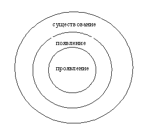
Проявление (в воздействии на вещество) всегда предполагает появление (в качестве полевого явления). Появление обязательно предполагает существование и необязательно предполагает проявление. Существование всегда имеет место быть и не обязано вечно выражаться в каком-то своем появлении или проявлении.
Резюме.
1. В движении вещества силы природы себя обнаруживают и проявляют таким образом. Это так и можно назвать – проявлением сил природы.
2. Однако для проявления силам необходимо еще появиться в каком-либо качестве. Этим качественным появлением сил являются всевозможные поля и физически выраженные силы. Именно посредством этого появления обусловлено движение вещества.
3. С необходимостью следует предположить, что поля и физические силы, действующие вне полей, не есть собственно силы природы, а есть именно только появление этих сил, их физическое воплощение. Это следует из следующих аргументов:
1) так же как изменения вещества (т. е. всевозможное его движение) не объяснить причинами и необходимыми условиями (кроме сил природы как необходимого условия), то же самое касается другого вида материи – поля;
2) подобно тому как изменения вещества невозможны самопроизвольно и необусловлено, подобно этому изменения в поле без предположения сил остаются необъяснимым и просто невозможным явлением;
3) подобно тому как направления в движениях вещества объяснимы направлением сил природы (ибо из всех обуславливающих, необходимых условий только они имеют направление, см. § А.2), так же и изменения напряженности поля, направленных своей энергией в ту или иную сторону, происходят на основе сил, по силовым линиям (векторам) в пространстве.
4. Однако силовая линия и полевая материя – это не одно и то же. Посредством первой можно выявить собственное, скрытое существование сил природы, а в полевой материи, таким образом, необходимо нужно видеть именно появление сил. За силовой линией невозможно заметить ни один из известных видов изменений в нашем мире (часть из следующего доказана в § В):
1) саму силовую линию не касаются изменения напряженности, происходящие на ней;
2) сила не изменяется по своему амплуа;
3) сила не изменяется по своему направлению;
4) сила не изменяется по своему модулю;
5) сила неизменно вездесуща;
6) сила не является каким-либо изменением, а сама обуславливает всякое изменение;
7) воздействие силы и обусловленное ею изменение наступает одновременно, поэтому силу просто невозможно вписать в цепочку причинно-следственных изменений, пронизывающих и составляющих материальный мир.
Вывод Б.
Силы неживой природы имеют троякую форму своего существования: проявление силы, появление силы и собственно существование силы.
§ В.
Основание возникновения мысли.
В параграфе Б были перечислены собственные признаки сил природы. Однако всё, что связано с пояснением этих признаков, осталось там неизведанным. Таким образом, осталось недоказанным и высказанным просто как данность, что силы природы обладают некими признаками.
Вот некоторые из обозначенных признаков. Независимость силовой линии от изменений напряженности на ней; неизменность направления любой силы данного амплуа; неизменность модуля любой силы; неизменность амплуа сил; неисчезновение и непоявление сил самих по себе.
Разоблачение незнания.
Когда напряженность поля или физической силы растет или падает, то это совершенно не задевает силовую линию. Всё, что делает последняя, так это занимает определенное место в пространстве. Все изменения напряженности полевого явления, происходящие на ее основе, какими бы они сильными ни были, ее не касаются, не изменяют ее. От изменений напряженности силовая линия не зависит и не изменяется. Например, от увеличения или падения напряженности между металлическими пластинами разности потенциалов силовые линии между пластинами нисколько не изменят своего положения и направления.
Направление, в котором действуют силы, неизменно. Например, силы тяготения любого космического тела всегда и неизменно прямо направлены к математически малой центральной точке данного тела, даже пронизывая всё разнообразное вещество этого тела. Может только вызвать затруднение случай, когда где-то в пространстве действует сразу несколько сил и траектория движения вещества под действием этих сил оказывается по рассмотрению к каждой отдельной силе странной. Дело тут в том, что при контакте сил (или полей, которые являются совокупностью однородных сил) образуются, так сказать, основные силовые линии (будущие траектории движения вещества), являющиеся результирующими от действия всех сил. Это не значит, что образовалась новая сила или что отдельные силы изменили направление. Эта основная линия хоть и реальна, но условна, т. к. является результатом (суммой) действия отдельных сил в каждой точке, где каждая сила всё-таки действует непоколебимо и вопреки всему именно в своем собственном направлении.
Под модулем я понимаю некую общую энергетику, присущую любому проявлению данной силы. В разных ситуациях, но при одинаковых необходимых условиях, сила будет проявляться всегда одинаковым образом, т. е. неизменно. При данных неизменных условиях сила природы будет всегда производить одну и ту же энергию в вещественных изменениях. Это свойство не подлежит ни единому исключению. Например, где бы и когда бы не ронять бильярдный шар на землю, если все необходимые условия подаются всегда одни и те же, то сила тяжести будет всегда с одинаковой силой сваливать шар на Землю. Это будет свидетельствовать о том, что само появление силы в качестве полевого явления (силы тяжести) обладает в одинаково поданных условиях одинаковой напряженностью. Однако и при изменившихся условиях (при некотором изменении интервалов необходимых параметров) сила останется той же силой по своему амплуа и ее действие изменится пропорционально изменениям условий. Например, свинцовый шарик на определенном малом расстоянии от Земли и на таком же расстоянии от Луны испытает на себе в этих двух случаях различную силу притяжения, но это не заставит думать, что на одном космическом теле действует сила притяжения, а на другом какая-то иная сила. Сила неизменна по своему амплуа. А изменение воздействия силы, пропорциональное (а не как попало) массам планет, дает возможность установить закон для определения количественной энергии данной силы. И такой подход верен для любой силы; и именно их неизменность по модулю делает возможным 1) одинаковое действие силы в одних и тех же условиях, не зная исключений, 2) пропорциональное изменение энергии силы пропорционально изменившимся условиям, а также 3) установление в математических формулах законов, верных для различных меняющихся необходимых условий. Очень примечательно, что математическое выражение закона, определяющего какую-либо силу, почти всегда связано с некой неизменной константой (постоянной). Именно она самым явным образом указывает в формуле на неизменный модуль силы. Я полагаю, каждый ученый, открывший какую-либо формулу, где используется константа, вполне отчетливо представлял себе, что имеет дело с модулем силы и его неизменными свойствами, несмотря на окружающие изменения необходимых условий. Пожалуй, открытие формулы и понимание ее должно быть невозможным без ясного представления о модуле силы. Поэтому если есть люди, которые открывают формулы и понимают их, то они послужили бы мне поддержкой, если бы кто-то сказал, что я говорю здесь о каких-то нереальных вещах. Модуль является вещью общей и не принадлежит только какому-то отдельному появлению силы, но имеет место в каждом появлении. Несмотря на исчезновение и появление физически выраженных, полевых сил, модуль всегда сопутствует напряженностям этих сил, в т. ч. при изменении напряженности в ходе существования какой-либо данной силы. Модуль как бы задает правило физическим силам – с какой напряженностью при данных условиях им появляться и с какой плавностью и амплитудой им изменять напряженность при изменении условий. Каждое появление силы в пространстве имеет определенный количественный показатель напряженности; модуль же этой напряженности во всех случаях одинаков и неизменен для силы заданного амплуа независимо от того, с каким количеством напряженности она появляется в разных случаях, независимо от того, как изменяется напряженность, всё равно модуль непоколебимым, неизменным цензором преследует эту напряженность.
Силовые линии не возникают и не исчезают в собственном смысле этих слов. Связывать силовую линию с присущей ей напряженностью ошибочно, ибо это разные вещи. Кто-то скажет, что силовые линии и возникают, и исчезают в пространстве, что можно легко проверить соответственно по наличию или отсутствию напряженности, с которой они воздействуют на вещество. Однако возникает и исчезает не силовая линия напряженного пространства, а напряженность в пространстве. Это разные вещи. Именно напряженность как таковая возникает и исчезает, именно ей присущи все изменения в полевой материи. А силовая линия, за которой даже чопорная физика со своим позитивно исследуемым характером (т. е. требующим, так сказать, видения и осязания своих исследуемых предметов) давно признаёт реальное существование, – ведь не более чем линия математически малых, соседствующих точек самого пространства. А эти пустые сами по себе точки, в своем соседстве составляющие само пространство, не возникают и не исчезают. Так что силовая линия существует независимо от увеличения и уменьшения напряженности, причем не только до тех пор, пока обладает какой-либо напряженностью, но и с падением ее до нуля. А если же что-то существует, но не возникает и не исчезает, то оно существует вечно. К этому аргументу, изложенному в данном абзаце, может возникнуть много контрвопросов и возражений; но это уже совсем отдельное разбирательство (§ Д).
Резюме.
1. Силовая линия, в которой обнаруживает себя сама сила природы, никогда не изменяется под воздействием любого падения или увеличения напряженности, происходящих на ней.
2. Силы, согласно своему амплуа, не изменяют своего направления, даже в условиях контакта в пространстве с другими силами.
3. Силы неизменны по своему модулю. Именно это делает возможным:
1) одинаковое действие силы в одних и тех же условиях, не зная исключений,
2) пропорциональное изменение энергии силы пропорционально изменившимся условиям,
3) установление в математических формулах законов, верных для различных меняющихся необходимых условий.
4. К тому же независимо от изменений необходимых условий сила всегда сохраняет своё определенное амплуа.
5. Силовая линия не возникает и не исчезает, ибо возникает и исчезает только напряженность, помещённая на ней.
Вывод В.
Не должно вызывать сомнения, что существует ряд неизменных и действительных признаков, который относится непосредственно к признакам сил природы.
§ Г.
Основание возникновения мысли.
Силы природы не являются изменениями. Однако часто можно видеть, как силой, действующей в природе, обозначают какое-то изменение. Особенно этим грехом страдают (там, где это прежде всего недопустимо) в физике. Ни для кого не является секретом, что в физике понятием силы пользуются совершенно беспорядочно и подчас им обозначаются различные по своей сущности явления. Иной раз оно утверждается за неподходящими явлениями просто исторически; и сами физики это признают. Им обозначают то полевое явление, то (как и положено) силу как таковую, то непосредственно физически прилагаемую силу. Так смешивают в понятии неизменной силы и изменения, и неизменность.
Разоблачение заблуждения.
Вообще силой (при разговоре о природе) правомерно может называться либо полевая сила, влияющая на вещественные изменения, либо сила как таковая, обуславливающая полевые изменения, а уже через них – вещественные. Тем не менее, в полевой силе сила как таковая просто выражает себя материально; так просто появляется сила в физическом мире. Сила природы сама по себе не является собственно полевой силой (§ Б). Поэтому изменения полевой силы нельзя относить непосредственно на счет самой силы природы.
Силы природы не относятся к изменениям, не являются ими именно потому, что они сами являются необходимым и постоянным условием всякого изменения. Иначе оно не произойдет, даже под действием причины (см. о несвязанности причины и действия) и других необходимых условий (§ А.2).
Всякая причинно-следственная цепь внутренне обусловлена силами природы, которые, не вступая в эту цепь в качестве звеньев, делают ее возможной. Так, причинно-следственная цепь полевых изменений была бы невозможной, если бы ее не обуславливало существование сил природы как таковых. Равно как и цепь вещественных изменений была бы невозможной без обуславливающих полевых сил, которые, в конечном счете, есть силы как таковые.
Каждая сила только обнаруживает себя по тому или иному изменению, не являясь им. Полевая сила обнаруживает себя по вещественному изменению. Сила как таковая – по полевому изменению. Без этого опосредствованного обнаружения сил не представляется возможным ни понять, ни объяснить изменения.
Изменение и обусловившее его воздействие силы наступают одновременно. Ибо если изменение наступает после воздействия силы, то, значит, есть моменты времени, когда сила, обуславливающая изменение, не действует на материю и тогда это не сила обуславливает изменения. Но именно сила обуславливает изменения; именно силой и только силой они могут быть объяснимы (§ А.2). Точно так же если изменение наступает еще до воздействия силы, то не силой обуславливаются изменения; хотя на самом деле именно силой они обусловлены. Весь же материальный мир пронизан медленными и быстрыми изменениями. А поэтому действующие силы природы (одновременные с этими изменениями) не могут быть включены в цепочки причинно-следственных изменений, в каких проводит свое существование материя.
Неотносимость сил природы к изменениям так же может быть аргументирована тем, что силы обладают неизменным направлением, неизменным модулем, неизменным амплуа, существованием без возникновения и исчезновения (§ В).
Резюме.
1. Следует различать силу как полевую физическую силу, являющуюся изменением, и силу как таковую, не являющуюся изменением.
2. Силы природы не являются изменениями, т. к. сами обуславливают любое изменение.
3. Силы не входят в причинно-следственную цепь изменений всего нашего мира, но обуславливают эту цепь, делают ее возможной.
4. Силы только обнаруживают себя по происходящим изменениям, не являясь ими. Иначе ни понять, ни объяснить эти происходящие изменения было бы невозможно.
5. Действие сил природы наступает одновременно с изменениями, которые обусловлены этими силами. Поэтому в цепочке причинно-следственных изменений, из которых состоит наш мир, сил как таковых нет.
6. Неотносимость сил к изменениям выражается также в их неизменном направлении, неизменном амплуа, неизменном модуле, в существовании без возникновения и без исчезновения (§ В).
Вывод Г.
Силы природы не являются какими-то изменяющимися вещами.
§ Д.
Основание возникновения мысли.
Мнение, что силовые линии следует считать вечно существующими и неизменными и что именно в них, как нигде больше, заключен явный отпечаток существования самих вечных и неизменных сил природы (§ В), может столкнуться с рядом возражений и вопросов.
Анализ.
1) В заданных точках пространства со временем или даже одновременно могут возникать различные силовые линии по своему амплуа и направлению. Если силовые линии не исчезают и не возникают, существуя вечно, то, следовательно, в данном месте пространства существует, то скрыто, то явно, большой набор этих силовых линий. Но разве различные амплуа сил и их различные направления в одном и том же месте не станут мешать друг другу, вступать в конфликты и противоречия, не позволяющие им проявлять себя при случае в своей правильной и полной манере? Это мнение напрашивается. И разве можно тогда утверждать, что силовая линия может, оставшись в данном месте, просто «остыть» до нуля своей напряженности (утверждается в § В), т. е. как бы уже исчезнув, всё-таки не исчезнуть? (§ Д.1).
2) Какие же силы существуют в данных точках, если напряженность в них сейчас, допустим, равна нулю? (§ Д.2).
3) Какой природы силовые линии в нашем мире (материальные ли, если да, то какого вида материи, подчиняются ли причинности и т. п. вопросы)? (§ Д.3).
§ Д.1.
Основание возникновения мысли.
Итак, как в одном и том же месте могут собраться «остывшими» до нуля напряженности множество силовых линий, каждая со своим собственным направлением? И как наряду с этим тут могут существовать и явно напряженные иные силовые линии?
Разоблачение незнания.
В пространстве остается «остывшим» не направленный (тем более не силовой, ибо он «остыл») вектор как таковой, а точки, по которым доселе действовала напряженность. Поэтому нельзя сказать, что силовой вектор, имеющий определенную напряженность, исчезает и в то же время не исчезает в данном месте. Силовая линия – это, в самом деле, лишь линия, набор точек пространства, по которым потенциально вполне возможна полевая напряженность, а еще не силовой напряженный вектор как таковой. Следует различать напряженность силовой линии и силовую линию как таковую. Напряженность на силовой линии может быть какой угодно, даже нулевой, но последнее не делает саму силовую линию несуществующей. Т. е. отсутствие напряженности не означает автоматически отсутствие и силовой линии. Собственно даже не силовая линия остывает до нуля, а напряженность на силовой линии падает до нуля.
Направление силовой линии должно быть еще придано той или иной напряженностью (т. е. из линии еще только предстоит создать стрелку, вектор), и до этого набор этих точек (по-существу, само пространство) может так же преспокойно существовать, будучи в состоянии нуля напряженности. Понятно, что касается направления заданной силы в данных точках, то оно зависит исключительно от так или иначе ориентированной материальной обстановки (сила тяжести в данном, абсолютно выбранном месте пространства, может быть направлена в одну или даже в противоположную сторону в зависимости от того, где находится центр космического тела, с которым связана данная сила в данном месте пространства). При изменении обстановки реальное направление силовых линий может и измениться, оно также может быть результирующим, если в одних и тех же точках действует несколько сил. Тем не менее, разные силы будут появляться в одних и тех же точках, нисколько не мешая друг другу, и продолжая при этом действовать каждая по своему собственному направлению. Даже возникая одновременно в одних и тех же точках, силы не мешают друг другу, а проявляют каждая себя согласно своей природе. В этом случае возникают результирующие силовые линии. Тем более они не могут мешать друг другу, если возникают в этих точках не вместе, а в разное время и по одиночке. Таким образом, силовой линии как таковой еще только предстоит придать напряженностью направление и амплуа. Причем эти признаки проявятся, даже если здесь же по иной силовой линии пройдет иное направление с другим амплуа.
Набор различных силовых линий не может создать помехи между силовыми линиями, ибо силовые линии как таковые – это не более чем точки пространства. А как точки могут мешать сами себе, своему собственному существованию? Если помехи возможны, то каждая отдельная точка пространства должна найти какой-то немыслимый фантастический способ, чтобы мешать собственному существованию. Таким образом, силовым линиям, которым еще не придана напряженность, направление и амплуа, ничего не мешает их совместному существованию.
Резюме.
1. Силовая линия и ее напряженность – это две независимые вещи. Более того, направление силовой линии придается именно напряженностью, но оно не присуще этой простой линии изначально.
2. Появляющиеся (одновременно или со временем) в заданных точках пространства силовые векторы не мешают друг другу. Неисчезновение каких-то данных силовых линий при падении их напряженности до нуля не мешает иным силовым векторам в их проявлении.
3. Силовые линии не могут мешать друг другу в одном и том же месте, т. к. это означало бы, что точки пространства мешают каждая сама себе.
Вывод Д.1.
Различные амплуа сил и их различные направления в одном и том же месте не станут мешать друг другу.
§ Д.2.
Основание возникновения мысли.
Какие же силы существуют в данных точках, если напряженность в них сейчас, допустим, равна нулю?
Разоблачение незнания.
Можно говорить, что все. Потенциально действительно существуют здесь все силы. Любая сила может здесь появиться (как одна, так и с другими), и она не замедлит появиться при подаче сопутствующей ей специфической материальной обстановки. Ничто здесь не помешает друг другу, ибо как точки пространства могут помешать сами себе? Собственно, как данная точка пространства может когда-нибудь мешать сама себе? Каждая сила наготове для своего появления, только подайте ей ее специфическую обстановку и она одновременно с ней сделает напряженным пространственный вектор. И это верно для любого места и времени.
А с другой стороны, можно сказать, что ни одна сила здесь не существует, здесь существуют только точки пространства потенциальных силовых линий. Ибо амплуа силы (ее природа и характер) возникает только из уже возникшей напряженности и направления, которое создано этой напряженностью. Вопрос же задан в этом отношении бессмысленный: какого амплуа здесь силы, не имеющие напряженности? – Сила не может обладать амплуа, не имея напряженности.
Резюме.
1. В данных точках пространства потенциально существуют все силы, ибо любая сила наготове для своего появления.
2. С другой стороны, конкретно в данный момент, когда в данном месте нет напряженности, здесь и нет ни одной силы, ибо сила реально возникает и имеет свое амплуа, исходя лишь из уже имеющейся напряженности.
Вывод Д.2.
В данных точках пространства, где не замечено напряженности, потенциально существуют все силы, реально – ни одной.
§ Д.3.
Основание возникновения мысли.
Какой природы силовые линии в нашем мире (материальные ли, если да, то какого вида материи, подчиняются ли причинности и т. п. вопросы)?
Разоблачение незнания.
Исходя из знаний о силовой линии, в которой непосредственно усматриваются силы природы, можно говорить, что силы не есть ни вещество, ни напряженность, т. е. не являются ни веществом, ни полевым явлением. А значит, они не являются материей. Они не подвержены изменениям и причинности.
Они связаны лишь с пространством, его точками, где они могут появиться в любом месте, в любое время. Но без этого появления силы сами по себе остаются абсолютно не обнаруживаемыми (негативными) в нашем мире, ибо связанные с ними точки пространства в такой ситуации не имеют никакой напряженности, остаются невозбудимыми и не влияют ни на какую материю.
Резюме.
1. Силовые линии, в которых заключено существование сил природы в нашем мире, нематериальны.
2. О собственной природе этих сил мы можем сказать только, что они связаны с точками пространства.
Вывод Д.3.
Силовые линии нематериальны и, согласно тому, что мы можем познать в самом нашем мире, связаны только с точками пространства.
§ Е.
Основание возникновения мысли.
Пожалуй, нет ничего другого, в чем мы бы так сильно не привыкли к собственному непониманию, думая при этом, что всё и так хорошо понимаем, как в объяснении движения и жизненной силы человека, животных, растений, насекомых. Шопенгауэр был первым, кто логически проводил доказательство о наличии в существах живой природы, в том числе и в нас с вами, сил природы. Правда, он считал словосочетание «сила природы» менее подходящим, чем слово «воля», которое, однако, обычно воспринимается нами несколько в другом значении. Может быть, это одна из причин того, что доказательство это обыкновенно пребывает в забвении. Здесь я напоминаю о нем, отчетливо указываю на наличие в нас и телах живой природы именно сил природы, которые вследствие этого следует считать силами живой природы, и провожу свою собственную аргументацию.
Разоблачение незнания.
Мы слишком привыкли наблюдать людей, их передвижения, мы невнимательны к полетам птиц, жуков, к поворотам подсолнуха и т. д. Нам кажется все обыкновенным, понятным, не заслуживающим особого внимания. Однако стоит только немного отвлечься от своих привычек… Посмотрите сами, безграничная вселенная, колоссальный Млечный Путь. Перемещения галактик, движение комет, планет, астероидов по своим орбитам, вращение планет и звезд вокруг своей оси, на некоторых планетах ветер их собственной атмосферы гоняет тамошний песок, где-то воды различного химического состава обрушиваются водопадом, а где-то кратеры вулканов вздымают пыль и пепел ввысь. Всё это в необъятном космосе вполне обыкновенно и всегда встречаемо. И всё это движение легко объясняется двумя силами природы: силой упругости (с двойным характером – отталкивания и притяжения между частицами) и силой тяготения (§ 008.2). Именно этими силами обусловлено и ориентировано любое направление в этом движении.
Однако в некоей Солнечной системе (в составе Млечного Пути), на некоей планете Земля встречаются материальные тела, которые движутся прямо-таки как им вздумается. Они всецело состоят из тех же химических элементов, что и камни, песок, воды и жидкости, планеты и галактики, но их движение часто происходит даже вопреки силе упругости и силе тяготения. Кто-то взлетает на своих перепончатых крылышках вверх, не повинуясь вниз тянущей силе тяжести Земли. Кто-то идет против ветра, не обращая внимания на силу упругости, действующую со стороны частиц воздушного ветра. И так повсеместно. Собственно, даже не важно из каких химических элементов состоят эти тела, они всё же материя, такая же материя, как материальные песок и воды, и причем они – материя, которая движется. Движение немыслимо без направления движения. Это направление может быть объяснимо только благодаря действующим, ориентирующим в данных направлениях силам природы. Например, во всей неживой вещественной природе направления обуславливаются силой упругости и силой тяготения. Тогда чем же здесь, в этой вещественной природе, обуславливаются направления? Ничем? Но это невозможно, ибо тогда в материальном мире происходило бы то, что не может происходить в принципе, ибо это происходящее не имело бы на свое происхождение ровным счетом никаких достаточных оснований, ничто не обуславливало бы это движение, не было бы ничего, что бы делало это движение возможным в материальном мире. Но если уже известно, что направления движения материи (пусть неживой, это уже очень много) обуславливаются силами природы, то что тут еще выдумывать, какие сущности здесь без необходимости вздумают преумножать? Именно силами природы, могущими быть названными в таком случае силами живой природы, обусловлено, ориентировано, делаемо возможным всякое направление в этом «незаконном» во вселенной движении.
Помимо этого следует с пониманием взглянуть на сам образ деревьев, растений, животных, человека. Это такие же материальные тела, как и материальные камни, скалы, песок. Часто эти тела неживой природы состоят из тех же химических элементов и соединений, из каких состоят материальные тела живой природы. Но если образование данного камня, скалы, данных песчинок можно легко объяснить исходя из силы упругости и силы тяготения, то ими уже не объяснить образование и рост материальных тел живой природы. Только сила упругости и только сила тяготения не в состоянии зародить и вырасти живое материальное тело, будь это хоть простейшая травинка. Где-то об этом говорят, по-моему, и Кант, и Шопенгауэр. Ведь несмотря на то, что в каких-то простейших физических и химических процессах в организмах всё равно не обойтись без участия сил упругости и тяготения, тем не менее, некоторые процессы неруководимы ими, а зачастую даже происходят вопреки их влиянию.
Точно так же одни эти силы не в состоянии направлять и руководить физиологическими процессами в живых организмах. А все эти физиологические процессы и составная их часть – в целом рост живых организмов – есть то или иное движение материи. А направления этих разнообразных материальных перемещений и превращений останутся необъяснимыми, если полагаться только на силу упругости и силу тяготения. Подумайте сами, общий принцип этих, порой очень сложных и запутанных процессов, заключается в захвате телом извне или выработкой в себе каких-то веществ и соединений; в расщеплении их; в переносе нужных телу элементов в нуждающиеся места; в соединении их там с другими элементами, где они становятся уже частью живого тела; и в удалении из тела ненужных элементов и отработанных соединений. Разумеется, все соединения возможны благодаря тому, что их элементы обладают химическим сродством, т. е. здесь принимают участие силы упругости. Но объяснить, почему все имеющиеся движения соединений и элементов совершаются именно в данных направлениях; почему именно данные элементы сейчас нужны телу, а другие выбрасываются, хотя иной раз с таким же успехом происходит наоборот; почему именно в данное время происходит захват, соединение, расщепление, доставка или же выброс элементов, всё это невозможно объяснить полагаясь только на простые физические силы. Эти силы не дадут искомого объяснения: с таким же успехом при их участии могли бы быть не именно данные направления, не именно данные элементы, не в именно данное время. А часто ведь названные процессы происходят даже вопреки физическим силам, преодолевая их сопротивление, например, как при перемещении веществ и собственных жидкостей организма вверх, т. е. противоположно действующей на них силе тяжести. Так, ни один физик и ни один биолог не смогут вам объяснить, на основе какой силы происходит движение вод вверх по стволу дерева. Физик не сделает этого, потому что это необъяснимо физическими силами, а биолог не объяснит, потому что в биологии, к ее стыду, вообще не считают силы природы существующими.
Во всех этих примерах нужно не забывать, что простыми предшествующими причинами вовсе не объясняются эти явления. Это было доказано в первом вопросе; правда, к аргументам приводились примеры из неживой природы, но, тем не менее, с таким же успехом к ним можно приводить более сложные для понимания примеры из живой природы.
Точно так же следует понимать, что никакие сопутствующие (случайные) условия не объясняют действия в живой природе.
И точно так же следует понимать, что действия в живой природе не могут объясняться какими-либо сложившимися необходимыми условиями, которые не обладают в своем понятии направлением.
Еще одним аргументом в пользу существования сил живой природы является то, что им, как и силам неживой природы, присущи признаки проявления, появления и существования сил (§ З), а с точки зрения логики это серьезный аргумент. Правда, прежде чем получить понятие об этом, полезно получить понятие о градации всех сил на физические, физиологические и психологические силы (§ Ж).
Резюме.
1. В неживой вещественной природе все направления движений объясняются силами природы (силой тяготения и силой упругости). Однако имеются еще направления движений в живой вещественной природе, которые этими силами уже не объясняются.
2. Направления движений в вещественной живой материи тоже должны объясняться какими-то силами. А чтобы не преумножать сущности без всяких на то оснований, следует обозначить эти силы силами живой природы.
3. Не объяснимые без сил живой природы направления движений вещественной живой материи – это движение тел, их образ, рост, физиологические процессы внутри организмов.
4. Силам живой природы так же, как и силам неживой природы, присущи признаки проявления, появления и существования сил.
Вывод Е.
Силы живой природы существуют.
§ Ж.
Основание возникновения мысли.
На основании деления Шопенгауэром всех причин на три класса можно выявить три вида всех сил природы (включая живую и неживую природу). Это позволит без двусмысленностей составить представление о проявлении, появлении и существовании сил живой природы. К тому же это углубит познание в области сил живой природы, в отношении которых это познание у Гомо Сапиенса либо вообще отсутствует, либо имеет скорее мифологическую или образную форму, либо, из-за последнего, хоть и имеется, но не принимается многими.
Разоблачение незнания.
Шопенгауэр обстоятельно и исчерпывающе доказал градацию всех причин в природе на три класса. Это причины в собственном смысле этого слова, действующие в неживой природе, раздражения, действующие в физиологии растений и животных, а также мотивы, действующие в психологии животных и разумных существ. Любопытно, что мы определяем, живое или неживое тело (или микротело) перед нами, исключительно основываясь на этой градации, открытой (но не изобретенной, как и обстоит дело со всеми открытиями: их именно открывают, а не изобретают) Шопенгауэром, ибо другого способа определить вид материального тела или микротела, представшего перед нами, просто не существует (§ 008.4).
Там, где причины как таковые вызывают изменения в неживой природе, эти изменения обусловлены физическими силами. Именно это явление задействовано в путеводном примере. Впрочем, то, что в подобном случае действуют физические силы, и так известно исходя из представлений физики и ее истории. Но аналогично этому раздражениям, вызывающим все физиологические процессы, должны соответствовать какие-то иные, нефизические силы, которые поэтому логично назвать физиологическими силами. То, что простые физические силы неспособны исключительно самостоятельно обуславливать сложные физиологические, а также психологические процессы, указано в § Е. А там, где мотивы вызывают поступки животных и людей, логично предполагать действие иных особых сил, назвать которые справедливо было бы психологическими силами.
Понятно, что смешение этих сил неправомерно. То, что объясняется силами физики, не может объясняться физиологическими или психологическими силами. То, что объясняют физиологические силы, не может объясняться физическими или психологическими силами. То, что должны объяснять силы психологии, не объясняется силами физиологии или физики.
Резюме.
1. Причинам в собственном смысле соответствует действие физических сил, раздражениям – действие физиологических сил, мотивам – действие психологических сил.
Вывод Ж.
Все силы природы можно разделить на физические силы (действующие в неживой природе), физиологические и психологические силы (действующие – и те, и те – в живой природе).
§ З.
Основание возникновения мысли.
В пользу действительного существования сил живой природы говорит то, что им, так же как и физическим силам неживой природы присущи свойства проявления, появления и существования сил (эти свойства разобраны в § Б). Однако знание этих свойств у сил живой природы отсутствует у человека, впрочем, это обусловлено тем, что само существование сил живой природы не является признанным. Боюсь, что кто-то даже не признает существование сил неживой природы (не говоря уже про живую природу) при их трояком воплощении в проявлении, появлении и скрытом, нефизическом существовании. Но это будет уже обусловлено тем, что просто не хотят принимать и слышать обстоятельные доказательства.
Разоблачение незнания.
Проявление физической силы выражается в движении вещества. Двигая им, сила проявляет себя самым явственным, позитивным образом. Так например, сила тяжести проявляет себя, явственно заявляет о себе, когда какой-нибудь камешек падает со скалы. Но то же самое мы можем обнаруживать у психологических сил. Проявлением психологической силы является движение тела, т. е. его явно видимые, позитивно выраженные поступки, поведение. Ведь это тоже движение вещества, обусловленное данной (психологической) силой природы.
Проявление физической силы обусловлено прежде всего ее появлением в пространстве в качестве полевой материи. Реально появившаяся в этом мире сила делает возможным свое проявление в веществе, на которое она сразу же при своем появлении воздействует, при условии наличия в данном месте такого вещества, способного подвергаться воздействию именно данной силы. Так например, падение камешка со скалы обусловлено наличием в данной области пространства невещественного поля тяготения, создаваемого данной планетой, где она проходит. Так же и все наши поступки, движения нашего вещественного тела, обусловлены неким невещественным появлением психологической силы. Это появление можно усматривать в наших желаниях, эмоциях, чувствах, переживаниях. В этом качестве появляется психологическая сила и посредством этого качества она проявляет себя в движении нашего вещественного тела, подобно тому как физическая сила, появившись в качестве поля тяготения, проявляет себя в падении вещественного камешка.
Возражение: появление силы может оставаться и без проявления ее, например, поле тяготения (оно же – образ появления силы) может существовать и оставаться без всякого там падения камешков; но есть ли подобная аналогия у психологических сил? –
Конечно, ведь наши желания, эмоции, переживания, возникнув, могут в некоторых случаях не выражаться в поступках вовсе или в течение какого-то времени./
Возражение: появление силы является полевой материей, которой, следовательно (ибо это материя), свойственна причинность и изменения. А причинность всегда обусловлена силами. Таким образом, реальное появление силы в мире обусловлено ее скрытым нематериальным существованием. Касается ли причинность так же появления психологических сил, и есть ли у этих сил живой природы нематериальное, собственное существование, обуславливающее и появление, и проявление? –
Наши переживания, желания всегда возникают по той или иной причине (точнее, по мотиву), имеют ту или иную степень выраженности, напряженности, которая может изменяться, они могут сменяться и проходить со временем. Т. е. нашим желаниям присущи изменения, а значит, они вовлечены в цепь причинности. Причинность же (сцепление и переход от причин к следствиям) не может быть, происходить без обуславливающих ее сил. Той скрыто существующей силой, вызывающей наши различные желания, эмоции является наш характер. Именно такие данные желания и эмоции у какого-либо человека обусловлены тем, что у этого человека именно такой характер. У другого человека даже при тех же мотивах и обстоятельствах могут иметь место другие желания и эмоции, и именно потому, что у другого человека другой характер. Подобно этому камешек сорвется со скалы, т. е. станет приближаться к Земле под воздействием силы тяготения Земли, но будучи в космосе, даже при идентичном убирании опоры (при той же причине), камешек не станет приближаться к Земле. На Луне камешек будет падать на луну с иными физическими параметрами, чем на Земле./
Из вышесказанного следует, что аналогия между нашими эмоциями и полевой материей совершенно логична. Т. к. вышесказанное доказано, то получается, что наши эмоции, желания есть собственно полевая материя, подчиняющаяся причинности. Наши эмоции, желания и переживания, будучи материей, должны занимать какой-то объем пространства. Впрочем, из-за недоказанности этого в науке, последнее можно считать предположением. Но тогда придется выдвинуть другое парадоксальное положение: материя, реально существуя, может не дислоцироваться в пространственном мире.
Сказанное о психологических силах, надо понимать, касается всех, кто движется по мотивам, т. е. не только разумных существ, а вообще всех животных. То, что разумные существа, в отличие от остальных животных, движутся еще и по абстрактным мотивам, а не только по созерцательным (воспринимаемым), несущественно.
Аналогично и физиологические силы обладают проявлением, появлением и существованием.
Проявление физиологических сил выражается в движениях химических элементов и их соединений, направленных на создание, рост живого тела или на поддержание его жизнедеятельности. Таким явственным способом проявляет себя, обнаруживает физиологическая сила.
Проявление это обуславливается реальным невещественным появлением физиологической силы в пространстве. Именно это появление делает столь организованным, направленным и разумным любой физиологический процесс. (Камешек в огород тем, кто объясняет целесообразность всевозможных физиологических процессов несуществующим Богом или как-то еще).
Появлениям же физиологических сил присущи изменения. Между прочим, само появление как возникновение есть один из видов изменений. А поэтому появления физиологических сил сами вовлечены в причинность. Но ни эта причинность, ни появление силы в пространстве, как известно из представления о простых физических силах, не было бы возможным без обуславливающего и скрытого, нематериального собственного существования сил. Это же следует признать и за физиологическими силами.
Можно отметить, что у появления физиологических сил можно признать реальные силовые линии, как у появления полевых физических сил, ввиду линейного, в конечном счете, направления всех происходящих физиологических процессов. Даже многолетний рост и образование пространственно-объемного тела всё же происходит по складывающимся линейным перемещениям химических элементов и соединений. Здесь аналогия между работой физических и физиологических сил прослеживается весьма близко.
Так же можно заметить, что у появления и существования физиологических сил нет названий. Появление психологических сил известно нам под названием желаний и переживаний. Существование психологических сил известно нам под названием характера. А вот о появлении и существовании физиологических сил то же самого не скажешь. Это связано с тем, что философское, т. е. более расширенное и неповерхностное, познание в физиологии исторически страдает какой-то приземленностью и грубым реализмом, который можно обозвать «то, что вижу, то только и есть на самом деле». Любопытно в связи с этим, что у существования физических сил тоже нет названия. У появления их есть название – поле как вид материи. А у существования нет. Можно признать, что у проявлений всех сил есть название; всем проявлениям подходит слово «движение». Отсюда возникает любопытный, и несколько очевидный, вывод: то, что в этой теме менее всего изучено и признано, не имеет названия, изученное же и признанное в качестве действительного имеет название. Таким образом, можно использовать в качестве аргумента то, что проведя с доказательствами близкие аналогии между тремя видами сил, несмотря на то, что некоторые из этих аналогий еще не изучены и непризнанны, я все-таки говорил о действительных вещах. Т. е. говорить о проявлении, появлении и существовании физических, физиологических и психологических сил следовало бы как о чем-то не подлежащем сомнению.
Резюме.
1. Проявление психологических сил выражается в поступках и движениях животных существ.
2. Появление психологической силы, которым обусловлено ее проявление, выражается в желаниях и переживаниях существ.
3. Существование психологической силы, которым обусловлено появление ее, есть то, что называют характером для данного существа.
4. Из вышесказанного возникают те предположения, что наши желания и переживания есть полевая материя и имеют какой-то пространственный образ. А если не имеют его, то значит, оказывается, существует материя, не расположенная в пространстве и не имеющая трехмерности.
5. Проявление физиологической силы выражено в движениях химических веществ при физиологических процессах.
6. Проявление физиологических сил обусловлено их появлением, а появление – скрытым, нематериальным существованием.
7. За появлением физиологических сил можно признать реальные силовые линии, как у физических сил.
8. То, что изучено и признано как реальное среди свойств проявления, появления и существования всех трех видов сил, давно имеет свое название; то, что еще не изучено или не признано, не имеет названия.
Вывод З.
Силам живой природы, так же как и силам неживой природы, присущи свойства проявления, появления и существования сил.
§ 008. Дополнения.
Предисловие.
Эти дополнения стали возможны благодаря всему уже изученному. Они вообще-то должны занимать место в соответствующих параграфах о материи, о веществе, о силах природы, но только сейчас они могут быть всецело поняты и находят свое подходящее место.
§ 008.1.
Основание возникновения мысли.
Пожалуй, нигде еще не было замечено (а если и было, то стоит напомнить), что любое изменение в вещественной материи основывается на движении вещества. Т. е. всякое физическое, химическое, электрическое и др. изменение в веществе не обходится без простого механического движения, а полагается на него. Даже медленное незаметное возникновение ржавчины происходит за счет механического перемещения различных частиц.
Разоблачение незнания.
Покажите мне хотя бы одно изменение в вещественной неживой материи, которое бы не основывалось, прежде всего, на движении данного вещества. Любое механическое изменение в вещественной материи уже само по себе есть движение. Химическое изменение, каким бы сложным оно ни было, основывается на движении элементарных частиц, молекул. Электрическое изменение (напр., увеличение заряда на проводнике) тоже, прежде всего, движение вещества (приход вещественных электронов на проводник). Радиоактивное изменение (проникновение проникающей радиации, заражение местности, радиоактивный взрыв и т. д.) не может происходить без простого передвижения элементарных частиц, атомов, молекул.
Так же изменения, происходящие в телах живой материи, не могут происходить без движения вещества данных живых существ. Изменения в вещественной живой материи основываются в конечном счете на изменениях в неживой вещественной материи. Именно на последних основывается физиология животных, растений (различные химические превращения в телах, их рост, основанный на механическом накоплении вещественных частиц). Правда, это не должно дать повода думать, что абсолютно все изменения в живой материи обусловлены силами неживой природы. То, что сложные изменения живой материи не происходят без основополагающих простых изменений неживой материи, еще не означает, что неживая природа непосредственно движет всей живой.
Резюме.
1. Механические, химические, электрические и др. изменения в неживом веществе есть, прежде всего, простое перемещение, движение вещества.
2. Различные физиологические изменения в веществе живой материи так же происходят за счет простого движения вещественных частиц.
Вывод 008.1.
Любое изменение в вещественной материи складывается из простого механического движения вещества.
§ 008.2.
Основание возникновения мысли.
В § 006.4, А.2 было высказано предположение, что буквально все изменения в вещественной неживой материи можно объяснить на основании только двух сил природы: силы тяготения и силы упругости. Правда, важность этой мысли в том параграфе отсутствует, т. к. ею там ничего не обосновывается. Однако, если я не ошибаюсь, эта мысль до сих пор нигде в истории не обоснована, что поражает, ибо все сведения, чтобы обосновать эту мысль имелись уже, судя по всему, во времена Ньютона, т. е. полтысячи лет тому назад. Может быть, вследствие этого незнания со времен Ньютона физики любят «открывать» всё новые и новые силы для вещественных изменений.
Разоблачение незнания.
Из физики мы знаем, что на малых расстояниях между частицами веществ (напр., молекулами, электронами) действует двояким характером сила упругости: она проявляется в притягивании частиц, когда они слишком удаляются друг от друга, и отталкивании частиц, когда они слишком приближаются друг к другу. Этим объясняется уже довольно многое в вещественных изменениях.
Прежде всего, этим объясняется то, как ведут себя частицы в определенной данной массе вещества, в частности так объясняется внутренний характер продольной или поперечной волны в веществе, так объясняется броуновское движение.
Этим объясняется отталкивание макротел друг от друга, например, столкновение бильярдных шаров: благодаря силам отталкивания между частицами одного шара и частицами другого шара при их столкновении, шары не проникают друг в друга, а отталкиваются между собой. Точно так же объясняется вообще непроникновение тел друг в друга, например, то, что мы с вами не проваливаемся в свои носки, в обувь, в пол, в поверхность земли, не проходим сквозь стены. Этим же характером отталкивания объясняется, например, полет некоторых мелких предметов на ветру: песка, пыли (что объясняется отталкиванием, даже подталкиванием их частицами воздуха). А то, что называют силами трения, есть не что иное, как возникновение сил упругости при рассматриваемом отталкивании между частицами, когда тела соприкасаются и трутся.
Той же самой силой упругости объясняется всякая химическая валентная связь между частицами веществ: силой притягивания создается устойчивая связь в пространстве между частицами. Следовательно, всякое химическое сродство объясняется именно силой упругости. Таким образом, сложные химические реакции по перевоплощению и изменению веществ проходят на основе силы упругости, благодаря которой создаются те или иные валентные связи.
Из физики мы также знаем, что на больших расстояниях между телами, особенно макротелами, действует сила тяготения. Она создает орбиты космических тел и искусственных спутников. Благодаря ей тела значительно малой массы притягиваются, я хочу сказать даже – оседают на поверхности тел значительно большой массы; этот частный характер силы тяготения называют также другим словосочетанием – сила тяжести. Бывает также притяжение макротел относительно малой массы к телам большей массы без соприкосновения этих тел. Так, сила тяготения Луны притягивает к себе наш океан, создавая не только приливы и отливы, а еще и всеокеанский горб на планете. Впрочем, сила тяготения Земли «не отдаёт» свой океан.
Исходя сразу из двух сил (тяготения и упругости) объясняется в целом характер некоторых изменений, например, падение снега, дождя, сопровождающихся ветром, «путешествие» тополиного пуха, течение воды из-под крана.
Невозможно найти такое вещественное изменение, которое не объяснялось бы одной из указанных сил или же сразу ими обеими. Однако тут важно добавить: невозможно найти такое изменение в неживой природе, ибо в живой природе мы сталкиваемся с такими вещественными изменениями, которые уже не могут быть объяснимы исключительно данными силами. И это можно считать весьма странным на том основании, что вещество в живой материи и вещество в неживой материи по своему составу не отличаются друг от друга: они в целом состоят совершенно из одинаковых химических элементов. Нельзя сказать, что есть одни определенные элементы живой природы и совершенно другие установленные элементы неживой природы, а других, общих, просто нет. Напротив, все элементы общи для обоих названных пластов природы. Так же надо добавить – как живая, так и неживая материя в целом подчиняются закону причинности и всем его свойствам, например, тому, что цепи причинности всегда обуславливаются как своей подоплёкой силами природы. Поэтому живая и неживая материя в сущности не отличаются, хотя силами упругости и тяготения невозможно объяснить действия в живой материи.
Резюме.
1. Силой упругости с ее двояким характером отталкивания и притяжения объясняется поведение частиц в данной массе вещества, всякая химическая валентная связь, непроникновение тел друг в друга и вследствие этого непроникновения объясняются также их перемещения относительно друг друга. Между прочим, силы трения – это просто другое название для обозначения сил упругости при отталкивании частиц между трущимися телами.
2. Силой тяготения объясняются орбиты космических тел, притяжение малых тел к большим.
3. Многие изменения объясняются сразу на основе двух этих сил.
4. Нельзя найти такое вещественное изменение, чтобы оно не объяснялось одной из этих сил или сразу двумя. Но это верно только для неживого вещества.
Вывод 008.2.
Все изменения в вещественной неживой материи можно объяснить на основании только двух сил природы: силы тяготения и силы упругости.
§ 008.3.
Основание возникновения мысли.
Я не раз думал, а могут ли в будущем быть открыты какие-либо иные виды материи, кроме открытых уже вещества и поля? Этот вопрос кажется таковым, что нет никаких оснований предполагать препятствия к этому, т. е. наверняка откроют еще несколько таких видов. Но я уверенно склоняюсь к тому, что это уже невозможно и в этом отношении мы с исчерпанностью достигли предела в нашем мире.
Разоблачение незнания.
Дело в том, что, как показывает мое рассуждение в иных параграфах, каждый известный вид материи сам по себе можно считать инертным. При этом, как это показала еще философия бессмертного Шопенгауэра, материя, а следовательно, и каждый ее частный вид, подчинены причинности, т. е. виды материи тем не менее обладают некими причинно-следственными изменениями. Иначе говоря, даже оставаясь собственно инертными, они не оцепеневают в окостенелости, а подвержены движению, изменению. Это значит (что также видно в моем рассуждении), что каждому виду материи требуется некий посторонний двигатель. Всякая причинность в заданном виде материи обусловлена тем, что делает эту причинность возможной. Не сам себя вид материи определяет к причинам и действиям, а подвержен этому со стороны обуславливающей силы. Ведь, как показано в рассуждении, связь между причиной и действием абсолютно случайна и объяснить ее можно исходя только из действующей здесь как подоплеки причинности некой силы.
Именно так все изменения в веществе, будучи прежде всего движениями, обусловлены физически напряженными силовыми линиями и полями. Именно последние обуславливают и дают нам понять причинность в веществе. Возможность же изменений в самих этих полевых явлениях, которые прежде всего есть изменения в количестве напряженности, так же объясняются и обусловлены наличием силовых линий, которые именно как нечто постороннее и не являющееся полевой материей выступают здесь условием причинности в этом виде материи. Теперь можно так же идти дальше и спрашивать: а что же обуславливает изменения в самих силовых линиях? Однако так будет допущена логическая ошибка многих вопросов: получается, несомненно то, что силовым линиям присущи какие-то изменения. А это совершенно ошибочно (что ясно из моего рассуждения). Таким образом, поднимаясь по восходящей, находя условия причинности каждого из видов материи, переходя так от одного вида материи к другому, мы, наконец, достигли предела, где вообще не замечено каких-либо изменений, а значит и причинности. Т. е. мы дошли до верхнего главного условия, которое, в конечном счете, обуславливает все нижестоящие причинности, но само не обуславливается никаким верхним условием, ибо оно само не подчинено никакой причинности, требующей такого верхнего условия.
Вот и получается, что, не пропуская ничего мимо своего внимания, на определенном последовательном пути мы выявили лишь два вида материи, подчиненных причинности. Если предположить, что существуют еще какие-то виды материи, то получится, что им вообще не осталось места на данном пути восхождения от одного вида материи до условия его причинности, т. е., по-существу, им не осталось места среди тех вещей, которые по-праву называются видами материи, проще говоря, их и нельзя будет справедливо назвать видами материи.
В самом деле, все, что нам известно о нашем материальном мире за все время нашего существования, вписывается в цепочку «вещество–поле–силы природы». Эта цепочка без проблем объясняет все известные причинно-следственные связи в природе, существование и форму тел природы, в т. ч. живых тел. Я думаю бессмысленно ожидать некую параллельную цепочку. Ведь тогда бы, упуская из виду целый пласт мира, обладающий причинностью, а следовательно, и влияющий как-то на параллельную однородную причинность, мы не могли бы понимать и объяснять известные нам причинно-следственные связи. Грубо говоря, никогда бы не было Ньютона, ибо этот человек, задумав объяснить простые механические взаимодействия тел, вынужден был бы теряться в догадках, что же делает действие от своей причины то таким, то эдаким, ведь он видит вещественную материю, предполагает силы природы (физически напряженные силовые линии), но что-то еще не дает ему понять его экспериментов. Можно было бы, конечно, заявить, что посторонняя причинность со своей особой цепочкой просто никак не влияет на нашу известную причинность. Тогда на это каждый вправе заметить: но ведь тогда нет никакого признака действительного существования такой параллельной причинности. А этих признаков, подтверждающих ее существование, как нам известно, действительно нет. Собственно говоря, возражение о возможном третьем виде материи со свойственной ей цепочкой причинности есть нарушение презумпции недоказанности (область 1).
При этом следует быть внимательным, что я говорю не о состояниях материи, не о состояниях вещества, коих известно уже примерно пять видов, а именно о видах самой материи.
Резюме.
1. Каждая причинность в каком-либо данном виде материи обусловлена вышестоящей силой. Все виды материи, при этом, подчинены причинности.
2. Так, причинность вещества обусловлена физически напряженными силами природы. А изменения физически напряженных сил природы обусловлены неизменными силами природы как таковыми.
3. Таким образом, переходя от одного условия изменений к другому и исчерпав все известные виды изменений, мы дошли до того, что уже не изменяется, следовательно, до границы возможных видов материи. Значит, видов материи только два: вещество и поле.
4. Если предположить наличие иных видов материи, то они, во-первых, не вписываются в класс видов материи, а во-вторых, нет никаких признаков их существования, которые мы должны были бы уже давно заметить.
Вывод 008.3.
В нашем мире существует только два вида материи: вещество и поле. Иных быть не может.
§ 008.4.
Основание возникновения мысли.
Я считаю, что у нас нет иного способа определить, живое или неживое тело перед нами, кроме как выяснив предварительно, какому виду причин в своих движениях подвержено данное тело. Если не задумываться над этим, то кажется, даже возникает уверенность, что нам достаточно и необходимо видеть образ тела, чтобы по нему, а также по его цвету, можно было определить, к какому пласту природы оно относится: к живому или неживому. Во всяком случае, его вид необходим нам в сочетании с образом его движений. Тогда мы точно и легко определим вид тела. Особо не задумываясь над этим раньше, я придерживался примерно этой же позиции. Сейчас же я считаю, что образ тела и его цвета вообще не нужны для занесения его в списки тел живой или неживой природы.
Разоблачение заблуждения.
Образ и цвет мелких, трудноразличимых насекомых, летающих около нас, часто недоступен нашему отчетливому восприятию, но, тем не менее, это не затрудняет нас к тому, чтобы отнести их к живым существам.
А если нам встретится на чужой планете существо такого неведомого образа, который даже близко не напоминает о частях тела земных существ, о расположении и количестве частей тела как у земных существ? По какому параметру мы определим, что оно именно существо, а не косное тело неживой материи?
Именно по причинам как таковым (придерживаясь градации Шопенгауэра) мы угадываем неживое тело, по раздражениям – растение, а по мотивам – животное.
Иногда мы, замечая краем глаза и отвлекаясь на движение в пространстве какого-либо маленького тела – то ли пылинки, то ли насекомого, – не в одно мгновение понимаем, на что мы смотрим. Но понимание этого сразу же возникает после того, как мы установили для себя, по каким причинам движется это тело: если влияние на это тело оказывает только ветер и сила тяжести, то есть причинами здесь являются собственно физические причины, то это пылинка; если тело движется по каким-то своим собственным побуждениям, даже вопреки ветру и силе тяжести, то есть имеют место быть мотивы, то это мелкое насекомое.
Резюме.
1. Образ и цвета живых тел не являются критерием, по которому мы при визуальном определении заносим их в число тел живой природы.
2. По причинам как таковым определяется неживое тело, по раздражениям – растение, а по мотивам – животное.
Вывод 008.4.
Только на основании вида причин (причины как таковые, раздражения, мотивы), действующих на данное тело природы, мы можем заключать о теле живой или неживой природы перед нами.
§ 008.5
Основание возникновения мысли.
Существуют такие генетические и медицинские случаи, которые всем известны, но между тем они до сих пор не получили должного объяснения. Я полагаю, что из-за этого пробела во многих медицинских аспектах царит нерешимость и незнание того, что может произойти при преподнесении определенной материальной обстановки.
Разоблачение незнания.
Возьмем, к примеру, такие случаи: прививание ветки одного дерева другому; был известен случай в медицине последних лет, как донорскую сетчатку глаза удалось привить человеку, которому требовалась такая операция; рождение детей в пробирке.
В сущности, эти случаи не отличаются от таких простых физических явлений, как падение камешка со скалы, как движение одного бильярдного шара после удара по нему другого. В последних случаях преподносится причина, и действие, возможность которого обусловлена при данной материальной обстановке действием определенной физической силы (соответственно, силы тяжести и силы упругости), не замедлит проявиться. Но никто и никогда не заявлял столь же серьезно, как это делаю здесь я, что в генетических и медицинских случаях происходит то же самое. Провокацией к появлению определенного действия (к началу прививания ветки, сетчатки, оплодотворению) служит преподнесенная причина (воссоединение ветки со стволом дерева, сетчатки с внутренней стороной глазного яблока, сперматозоида с яйцеклеткой), а разворачивание процесса возникшего действия (рост ветки, нового организма, последующая работа глаза) поддерживается определенной силой природы, которая не замедляет проявиться, когда преподнесены такие материальные условия, какие были преподнесены, при которых она всегда проявляется и действует в соответствии со своим амплуа (сила живой природы дерева всегда, когда есть ветка, поддерживает рост и функционирование этой ветки; сила живой природы человека всегда поддерживает функционирование глаза, когда есть глаз, соединенный нервами с мозгом; сила живой природы человека всегда поддерживает рост нового организма, когда уже произошло воссоединение яйцеклетки со сперматозоидом). При этом сила не обращает внимания на то, что материальные условия преподнесены не в естественной обстановке, не так, как это происходит при природном развитии организмов, без вмешательства технических моментов цивилизации. В самом деле, в природе не бывает такого, чтобы абсолютно естественно одна ветка перекинулась и привилась к другому дереву или глаз вдруг сваливается с неба к ослепшему, чтобы последний мог потом видеть, или не было и такого, чтобы наши первобытные предки использовали пробирки для нашего рождения. Тем не менее, для того чтобы сила начала действовать, ей нужна только соответствующая ей материальная обстановка, а таковая появляется и в том случае, когда нет матки, но есть пробирка, когда ветка или глаз не сами вырастают, а прививаются.
Подобно этому обыкновенное толстение и потеря красоты женщины после родов есть данное проявление данной силы природы у данного человека. Причиной, провоцирующей начало проявления этой силы природы, есть выход новорожденного на свет. Но и в этом случае причина (выход) будет одинаковой независимо от того, был ли это в итоге новорожденный или смерторожденный. Поэтому вид женщины ухудшится и при рождении ребенка, и при выкидыше. С этой точки зрения, а также учитывая смысл жизни женщины, величайшая и бессмысленнейшая глупость, на которую она может додуматься, – это избавиться от ребенка путем выкидыша.
Таким образом, все эти генетические и медицинские случаи объясняются совершенно аналогично тому, как и любые известные нам простые события из неживой природы. Бильярдный шар покатится и после того, как я ударю его кием, так и после того, как в него врежется другой шар. Материальная обстановка в обоих случаях одинакова, она и провоцирует одновременное проявление силы неживой природы (силы упругости). И это несмотря на то, что в обоих случаях материальная обстановка возникла при разных условиях (при ударе кием и при врезавшемся шаре).
Резюме.
1. Многие медицинские случаи не решаются объяснять аналогично объяснению простейших действий в неживой природе. Однако и там, и там всё объясняется преподнесением причины, по которой начинается действие, и проявлением при данных материальных условиях соответствующей силы природы, которая обуславливает весь процесс возникшего действия.
Вывод 008.5.
Медицинские случаи должны объясняться аналогично тому, как объясняется движение бильярдных шаров и притяжение тел к Земле.
Заключение
Карнеги где-то говорит о том, как одна автомобильная компания бросала миллионы долларов в год на то, чтобы разгадать загадку возникновения искры в свечах двигателя. Мне для этого потребовалось затратить несколько страниц и небольшое количество чернил, которые ушли в свое время на рукописное запечатление моей философии природы.
Также Карнеги часто вспоминает слова Уильяма Джеймса о том, что движение воли, настроение и наши физические действия одновременны, а не следуют в определенном порядке друг за другом, как всем кажется. С точки зрения моей философии природы, это есть прямое и еще одно утверждение о том, что вещественные материальные условия и появления (или проявления) воли возникают одновременно, сопутствующе друг другу.
Еще я замечу, что всё то, что до сих пор не могло быть объяснимо наукой, ибо наука не оперирует силами природы как таковыми, а оперирует причинами и вызываемыми ими действиями, всё то, что из-за этого подхватывали и объясняли богословы и всяческие сектанты, теперь во всём цивилизованном и образованном мире должно объясняться силами природы, в том числе силами живой природы (классифицируемыми трояко), т. е. так, как это было сделано здесь, в области философии природы. Силы природы вечны и неизменны. Мало того, что их никто не создавал и не мог создать, ибо, будучи вечными, наоборот, именно они-то и создали окружающий, видимый нами мир, вплоть до всех изменений и движений; мало того, что они неизменны, следовательно, их никто не мог бы подвергнуть хоть малейшему изменению – но помимо этого получается, что в создании всего видимого мира они забрали себе все возможности и права. Налицо лишь, и причем повсеместно и абсолютно во все времена (т. е. во всем бесконечном пространстве и вечно), работа сил природы, которые, как сказано, никто никогда не создавал и никак и никогда не изменял.
К слову о том, что «до сих пор не могло быть объяснимо наукой». Все средние века и всё новое время физиков и даже некоторых философов мучил эфир. Они считали, что именно на основании него объясняются все те моменты, которые необъяснимы. Его они считали невидимой физической средой, пронизывающей мир, и делающей возможной процессы в природе. Но когда стало уже очевидным, что объяснять какие-то вещи наличием несуществующего эфира невозможно, возникла теория относительности. Она без всяких оговорок объявила, что все те моменты, которые не могут быть объяснимы наукой, на самом деле должны быть объяснимы не несуществующим эфиром, а тем, что известно существует – материей, пространством и временем: то есть тем, что материя, пространство и время, вместе взятые, сами совместно всячески изменяются, будучи крепко сцепленными. То есть если раньше было хоть какое-то правдоподобное объяснение, хоть как-то (пусть иносказательно) указывающее на скрытые силы природы, объясняющие всё необъяснимое, то в 1906 году подобное объяснение вообще отбросили, поставив на его месте неразличимый винегрет из материи, пространства и времени, вышедший из автоматической мясорубки эйнштейновского ума.
Помимо прочего надо правильно понимать возможность зарождения жизни и эволюции ее в безграничном пространстве. Возникновение и развитие жизни при определенных поданных материальных условиях столь же неизбежно, как и откатывание бильярдного шара после того, как в него врезался другой шар. То есть действие сил живой природы в этом мире столь же неизбежно и столь же характерно, как и действие сил неживой природы. Глупо было бы ожидать у этих, в сущности, одних и тех же вещей различного характера. Это, в итоге, означает, что не может идти и речи, как это часто бывает, о случайном зарождении ДНК, случайно приобретенном качестве клонирования цепочек ДНК, ибо всё это происходит не по какой-то абсолютно непредсказуемой случайности, а при поданных материальных условиях в силу неизбежности и вечных сил природы. Точно так же тогда, в противном случае, надо считать, что один бильярдный шар откатывается от врезывающегося в него по абсолютной случайности, абсолютно необъяснимо, а не вследствие действия сил упругости. Если бы такие вещи и в самом деле были абсолютно случайными, то, в действительности, эти явления воспроизведения не могли бы повторяться, не могли бы стать неотъемлемым свойством жизни в качестве ее существенного признака. Объяснять такого рода существенные признаки жизни тем, что они принадлежат ей абсолютно случайно, тем, что они однажды произошли, а потом, вследствие этого разового случая, закрепились за ней, – просто глупо, хотя бы потому, что это как раз-таки неотъемлемые и существенные признаки белковой жизни. Если объяснять такие вещи случайностью, то точно так же можно было бы полагать, что созданное абсолютно случайно силами упругости и силами тяготения зеленого цвета тело, похожее на травинку, должно впоследствии размножаться, ибо абсолютно случайно возникло то, что является по своему выражению свидетельствующим о жизни. Так же и первые ДНК являются выражением жизни и полагают, что они возникли и воспроизводятся по абсолютной случайности. Или точно так же мы должны думать, что динозавры в наших динопарках должны ожить, ибо по абсолютной случайности (т. е. не в силу самой живой природы) созданы тела, схожие с живыми. Так и первые ДНК должны быть в нашем представлении, по этой логике, абсолютно случайными собраниями (не собраниями сил живой природы), которые сами по себе не способны на воспроизведение, а получают этот признак по всё той же абсолютной случайности. На самом деле образование ДНК с его неотъемлемым качеством воспроизведения – это такой же предмет стремления сил природы, как и стремление их свалить на какую-нибудь планету любое маленькое тело. Вообще, мы, в сущности, не представляем собой никакого исключения для природы. То, что мы с вами являемся представителями живой материи, для сил природы не имеет никакого значения. Силы природы таковы, что они по природе своей стремятся создавать как неживую материю, так и живую. Для них и неживая материя, и живая равны и не представляют собой какие-то взаимоисключения. Мы же, видимо в силу своей заносчивой тщеславности, мним, будто живая природа – это так недоступно, так исключительно, что и сами силы природы относятся к живой материи как к божественному и невозможному. Вообще-то, сейчас царит еще более тщеславное положение: мнят, будто силы природы вообще не могут иметь никакого отношения к зарождению живой материи. Таким тщеславцам я бы заметил, что вы для них не более чем обыкновеннейшая песчинка. Силам природы, на самом деле, нет никакого дела до того, создать ли неживую материю или живую. Для них всё – равно.
Точно так же, характерное и неизбежное действие сил природы, означает, в итоге, что при схожих условиях на разных планетах должны зарождаться и развиваться одни и те же биологические виды. При этом надо заметить, что для сил природы не имеют значения размеры, а имеет значение только форма. Подобно тому как столкнутся и разъедутся бильярдные шары, так же столкнутся и разъедутся пушечные ядра или даже космические тела. Подобно тому как возможны динозавры, возможны и практически идентичные им ящерицы. Размер зависит от конкретных, сопутствующих (случайных) условий как в живой, так и в неживой природе, в том числе от естественного отбора. Однако если учесть множественное разветвление палеонтологического древа, часто происходящее не только в силу неизбежности, но и в силу поданных в данный исторический момент (случайных) условий, то, по теории вероятностей, возможность совпадения последних видов на разных планетах весьма невелика. Например, один из последних видов нашей планеты, мы с вами, не обязательно может найти во вселенной себе идентичного собрата.
Я помню, как мне объясняли возникновение характеров людей тем, что, например, если человек рождается зимой, то наверняка его мать ела летом яблоки во время беременности. А это повлияло на закладывание определенных свойств. Но это бы означало, как показывает моя философия, что совершенно случайными, сопутствующими условиями объясняют становление, однако, вечной и неизменной силы природы – характера человека; используют второй обосновывающий вопрос вместо третьего. Хотя из всех трех именно второй меньше всех объясняет. Шопенгауэр об этом говорил, что такие могли бы полагать, что при некоторых внешних условиях можно добиться, чтобы вишня плодоносила персиками. Действительно, при случайных, посторонних воздействиях добивались бы превращения одной воли в другую, изменения неизменной и изначально данной воли, которая уже с момента воссоединения половых клеток занимается накоплением материи и всегда остаётся одной и той же силой. Этого изменения неизменного не может быть в нашем мире. Вообще-то, это ложное воззрение разоблачено Шопенгауэром уже двести лет назад.
Указывавшиеся работы
1. Мякишев Г. Я., Буховцев Б. Б. Физика: Учеб. для 10 кл. сред. шк., 1994. © Мякишев Г. Я., Буховцев Б. Б., 1990.
2. Касьянов В. А. Физика. 10 кл. © ООО «Дрофа», 2000.
3. Примерные билеты и ответы по физике для подготовки к устной итоговой аттестации выпускников 11 классов общеобразовательных учреждений в 1997? 98 учебном году. Авт.-сост. Ю. И. Дик, Г. Г. Никифоров, О. Э, Попенкова. © «Дрофа», 1998.
4. Касьянов В. А. Физика. 11 кл. © ООО «Дрофа», 2001.
5. Кудрявцев П. С. Курс истории физики. М., «Просвещение», 1974. © Издательство «Просвещение», 1974 г.
А также
Аристотель. Физика.
Гросс Рональд. Путь Сократа.
Шопенгауэр. Мир как воля и представление.
Шопенгауэр. Мысли.
Шопенгауэр. О четверояком корне закона достаточного основания.
© 2002, Дм. Сытник |